Specification: Jakarta Enterprise Beans, Optional Features
Version: {revnumber}
Status: {revremark}
Release: {revdate}
Eclipse Foundation Specification License
By using and/or copying this document, or the Eclipse Foundation document from which this statement is linked, you (the licensee) agree that you have read, understood, and will comply with the following terms and conditions:
Permission to copy, and distribute the contents of this document, or the Eclipse Foundation document from which this statement is linked, in any medium for any purpose and without fee or royalty is hereby granted, provided that you include the following on ALL copies of the document, or portions thereof, that you use:
-
link or URL to the original Eclipse Foundation document.
-
All existing copyright notices, or if one does not exist, a notice (hypertext is preferred, but a textual representation is permitted) of the form: "Copyright (c) [$date-of-document] Eclipse Foundation, Inc. [url to this license]"
Inclusion of the full text of this NOTICE must be provided. We request that authorship attribution be provided in any software, documents, or other items or products that you create pursuant to the implementation of the contents of this document, or any portion thereof.
No right to create modifications or derivatives of Eclipse Foundation documents is granted pursuant to this license, except anyone may prepare and distribute derivative works and portions of this document in software that implements the specification, in supporting materials accompanying such software, and in documentation of such software, PROVIDED that all such works include the notice below. HOWEVER, the publication of derivative works of this document for use as a technical specification is expressly prohibited.
The notice is:
"Copyright (c) 2018 Eclipse Foundation. This software or document includes material copied from or derived from [title and URI of the Eclipse Foundation specification document]."
Disclaimers
THIS DOCUMENT IS PROVIDED "AS IS," AND THE COPYRIGHT HOLDERS AND THE ECLIPSE FOUNDATION MAKE NO REPRESENTATIONS OR WARRANTIES, EXPRESS OR IMPLIED, INCLUDING, BUT NOT LIMITED TO, WARRANTIES OF MERCHANTABILITY, FITNESS FOR A PARTICULAR PURPOSE, NON-INFRINGEMENT, OR TITLE; THAT THE CONTENTS OF THE DOCUMENT ARE SUITABLE FOR ANY PURPOSE; NOR THAT THE IMPLEMENTATION OF SUCH CONTENTS WILL NOT INFRINGE ANY THIRD PARTY PATENTS, COPYRIGHTS, TRADEMARKS OR OTHER RIGHTS.
THE COPYRIGHT HOLDERS AND THE ECLIPSE FOUNDATION WILL NOT BE LIABLE FOR ANY DIRECT, INDIRECT, SPECIAL OR CONSEQUENTIAL DAMAGES ARISING OUT OF ANY USE OF THE DOCUMENT OR THE PERFORMANCE OR IMPLEMENTATION OF THE CONTENTS THEREOF.
The name and trademarks of the copyright holders or the Eclipse Foundation may NOT be used in advertising or publicity pertaining to this document or its contents without specific, written prior permission. Title to copyright in this document will at all times remain with copyright holders.
1. Introduction
This document describes features for which support has been made optional as of the 3.2 release of the Enterprise JavaBeans TM specification:
_EJB 2.1 Entity Bean Component Contract for Container-Managed Persistence_
_EJB 2.1 Entity Bean Component Contract for Bean-Managed Persistence_
_EJB 1.1 Entity Bean Component Contract for Container-Managed Persistence_
_Client View of an Entity Bean_
_EJB QL: Query Language for Container-Managed Persistence Query Methods_
_JAX-RPC Based Web Service Endpoints_
_JAX-RPC Web Service Client View._
1.1. Acknowledgements
The EJB 3.2 specification work is being conducted as part of JSR-345 under the Java Community Process Program. This specification is the result of the collaborative work of the members of the EJB 3.2 Expert Group: Caucho Technology, Inc: Reza Rahman; IBM: Jeremy Bauer; Oracle: Marina Vatkina, Linda DeMichiel; OW2: Florent Benoit; Pramati Technologies: Ravikiran Noothi; RedHat: Pete Muir, Carlo de Wolf; TmaxSoft, Inc.: Miju Byon; individual members: Adam Bien; David Blevins; Antonio Goncalves; Stefan Heldt; Richard Hightower, Jean-Louis Monteiro.
1.2. Organization of the Specification Documents
This specification is organized into the following documents:
EJB Core Contracts and Requirements
EJB Optional Features
The EJB Core Contracts and Requirements document defines the contracts and requirements for the use and implementation of Enterprise JavaBeans. These contracts include those for the EJB 3.2 API, as well as for the earlier EJB API that is required to be supported in this release.
This EJB Optional Features document defines the contracts and requirements for the use and implementation of features support for which has been made optional for the Enterprise JavaBeans. These contracts are separated from the core contracts requirements in the EJB 3.1 specification See Enterprise JavaBeans™.
1.3. Document Conventions
The regular Times font is used for information that is prescriptive by the EJB specification.
The italic Times font is used for paragraphs that contain descriptive information, such as notes describing typical use, or notes clarifying the text with prescriptive specification.
The Courier font is used for code examples.
2. Overview
This document describes features for which support has been made optional as of the 3.2 release of the Enterprise JavaBeans TM specification:
_EJB 2.1 Entity Bean Component Contract for Container-Managed Persistence_
_EJB 2.1 Entity Bean Component Contract for Bean-Managed Persistence_
_EJB 1.1 Entity Bean Component Contract for Container-Managed Persistence_
_Client View of an Entity Bean_
_EJB QL: Query Language for Container-Managed Persistence Query Methods_
_JAX-RPC Based Web Service Endpoints_
_JAX-RPC Web Service Client View._
If an implementation supports such features, it must do so in accordance with the requirements of this specification. In addition, the following rules apply:
If any of the following features is supported, all features in the list must be supported:
EJB 2.x entity beans with container-managed persistence
EJB 1.1 entity beans with container-managed persistence
EJB 2.x entity beans with bean-managed persistence
EJB QL
If JAX-RPC web service endpoints are supported, the JAX-RPC web service endpoint client view must be supported.
See the general description of the EJB goals and requirements in the EJB Core Contracts and Requirements See EJB 3.2 Core Contracts and Requirements. document.
3. Client View of an Entity Bean
This chapter describes the client view of an entity bean. It is actually a contract fulfilled by the container in which the entity bean is deployed. Only the business methods are supplied by the enterprise bean itself.
Although the client view of the deployed entity beans is provided by classes implemented by the container, the container itself is transparent to the client.
3.1. Overview
For a client, an entity bean is a component that represents an object-oriented view of some entities stored in a persistent storage, such as a database, or entities that are implemented by an existing enterprise application.
The client of an entity bean may be a local client or the client may be a remote client.
This section provides an overview of the entity bean client view that is independent of whether the client is a remote client or a local client. The differences between remote clients and local clients are discussed in the following sections.
From its creation until its destruction, an entity object lives in a container. Transparently to the client, the container provides security, concurrency, transactions, persistence, and other services for the entity objects that live in the container. The container is transparent to the client—there is no API that a client can use to manipulate the container.
Multiple clients can access an entity object concurrently. The container in which the entity bean is deployed properly synchronizes access to the entity object’s state using transactions.
Each entity object has an identity which, in general, survives a crash and restart of the container in which the entity object has been created. The object identity is implemented by the container with the cooperation of the enterprise bean class.
Multiple enterprise beans can be deployed in a container. For each entity bean deployed in a container, the container provides a class that implements a home interface for the entity bean. This interface allows the client to create, find, and remove entity objects within the enterprise bean’s home as well as to execute home business methods, which are not specific to a particular entity bean object. A client can obtain the entity bean’s home interface through dependency injection, or the client can look up the entity bean’s home interface through JNDI. It is the responsibility of the container to make the entity bean’s home interface available in the JNDI name space.
A client view of an entity bean is independent of the implementation of the entity bean and its container. This ensures that a client application is portable across all container implementations in which the entity bean might be deployed.
3.2. Remote Clients
A remote client accesses an entity bean through the entity bean’s remote and remote home interfaces. The remote and remote home interfaces of the entity bean provide the remote client view.
The remote client view of an entity bean is location independent. A client running in the same JVM as an entity bean instance uses the same API to access the entity bean as a client running in a different JVM on the same or different machine.
The container provides classes that implement the entity bean’s remote and remote home interfaces. The objects that implement the remote home and remote objects are remote Java objects, and are accessible from a client through the standard Java™ APIs for remote object invocation [See Java Remote].
A remote client of an entity object can be another enterprise bean deployed in the same or different container or can be an arbitrary Java program, such as an application, applet, or servlet. The remote client view of an entity bean can also be mapped to non-Java client environments, such as CORBA clients not written in the Java programming language.
3.3. Local Clients
Entity beans may also have local clients. A local client is a client that is collocated with the entity bean and which may be tightly coupled to the bean.
Unlike the remote client view, the local client view of an entity bean is not location independent. The local client view requires the collocation in the same JVM of both the local client and the entity bean that provides the local client view. The local client view therefore does not provide the location transparency provided by the remote client view.
A local client accesses an entity bean through the entity bean’s local home and local component interfaces. The container provides classes that implement the entity bean’s local home and local component interfaces. The objects that implement the local home and local component interfaces are local Java objects.
The arguments of the methods of the local component interface and local home interface are passed by reference1. Such entity beans and their clients must be coded to assume that the state of any Java object that is passed as an argument or result is potentially shared by caller and callee.
A local client of an entity bean may be a session bean, a message-driven bean, another entity bean, or a web-tier component.
The choice between the use of a local or remote programming model is a design decision that the Bean Provider makes when developing the entity bean application. In general, however, entity beans are intended to be used with local clients. While it is possible to provide both a client view and a local client view for an entity bean with container-managed persistence, it is more likely that the entity bean will be designed with the local view in mind.
Entity beans that have container-managed relationships with other entity beans, as described in See EJB 2.1 Entity Bean Component Contract for Container-Managed Persistence, must be accessed in the same local scope as those related beans, and therefore typically provide a local client view. In order to be the target of a container-managed relationship, an entity bean with container-managed persistence must provide a local component interface.
3.4. Choosing Between a Local or Remote Client View
The following considerations should be taken into account in determining whether a local or remote access should be used for an entity bean:
When the EJB 2.1 and earlier remote home and remote component interfaces are used, the narrowing of remote types requires the use of javax.rmi.PortableRemoteObject.narrow rather than Java language casts.
Remote calls may involve error cases due to communication, resource usage on other servers, etc., which are not expected in local calls. When the EJB 2.1 and earlier remote home and remote component interfaces are used, the client has to explicitly program handlers for handling the java.rmi.RemoteException
Methods of a session bean’s remote business interface must not expose entity beans local interface types, or the managed collection classes that are used for EJB 2.1 entity beans with container-managed persistence as arguments or results.
See EJB Core Contracts and Requirements document See EJB 3.2 Core Contracts and Subsection “Choosing Between a Local or Remote Client View” for the more considerations.
3.5. EJB Container
An EJB container (container for short) is a system that functions as a runtime container for enterprise beans.
Multiple enterprise beans can be deployed in a single container. For each entity bean deployed in a container, the container provides a home interface that allows the client to create, find, and remove entity objects that belong to the entity bean. The home interface may also provide home business methods, which are not specific to a particular entity bean object. The container makes the entity bean’s home interface (defined by the Bean Provider and implemented by the Container Provider) available in the JNDI name space for clients.
An EJB server may host one or multiple EJB containers. The containers are transparent to the client: there is no client-level API to manipulate the container.
3.6. Locating an Entity Bean’s Home Interface
A client obtains an entity bean’s home interface through dependency injection, or the client locates an entity bean’s home interface using JNDI. A client’s JNDI name space may be configured to include the home interfaces of enterprise beans deployed in multiple EJB containers located on multiple machines on a network. The actual location of an EJB container is, in general, transparent to the client.
For example, the local home interface for the Account entity bean can be located using the following code segment:
Context initialContext = new InitialContext();
AccountHome accountHome = (AccountHome)
initialContext.lookup(“java:comp/env/ejb/accounts”);
If dependency injection were used, the home interface could be obtained as follows:
@EJB AccountHome accountHome;
3.7. What a Container Provides
The following diagram illustrates the view that a container provides to the client of the entity beans deployed in the container. Note that a client may be a local client of some entity beans and a remote client of others.
===
Client View of Entity Beans Deployed in a Container
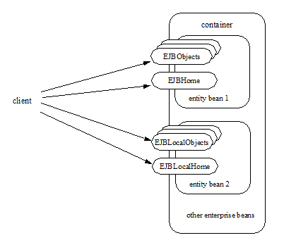
3.8. Entity Bean’s Remote Home Interface
This section is specific to entity beans that provide a remote client view. Local home interfaces are described in See Entity Bean’s Local Home Interface.
The container provides the implementation of the remote home interface for each entity bean deployed in the container that defines a remote home interface. An object that implements an entity bean’s remote home interface is called an EJBHome object.
The entity bean’s remote home interface allows a client to do the following:
Create new entity objects within the home.
Find existing entity objects within the home.
Remove an entity object from the home.
Execute a home business method.
Get the javax.ejb.EJBMetaData interface for the entity bean. The javax.ejb.EJBMetaData interface is intended to allow application assembly tools to discover the metadata information about the entity bean. The metadata information allows loose client/server binding and scripting.
Obtain a handle for the home interface. The home handle can be serialized and written to stable storage. Later, possibly in a different JVM, the handle can be deserialized from stable storage and used to obtain a reference to the home interface.
An entity bean’s remote home interface must extend the javax.ejb.EJBHome interface and follow the standard rules for Java programming language remote interfaces.
3.9. Create Methods
An entity bean’s remote home interface can define zero or more create<METHOD> methods, one for each way to create an entity object. The arguments of the create methods are typically used to initialize the state of the created entity object. The name of each create method starts with the prefix “ create ”.
The return type of a create <METHOD> method on the remote home interface is the entity bean’s remote interface.
The throws clause of every create <METHOD> method on the remote home interface includes the java.rmi.RemoteException and the javax.ejb.CreateException. It may include additional application-level exceptions.
The following home interface illustrates three possible create methods:
public interface AccountHome extends javax.ejb.EJBHome \{
public Account create(String firstName, String lastName,
double initialBalance)
throws RemoteException, CreateException;
public Account create(String accountNumber,
double initialBalance)
throws RemoteException, CreateException,
LowInitialBalanceException;
public Account createLargeAccount(String firstname,
String lastname, double initialBalance)
throws RemoteException, CreateException;
...
}
The following example illustrates how a client creates a new entity object:
AccountHome accountHome = …;
Account account = accountHome.create(“John”, “Smith”, 500.00);
3.10. Finder Methods
An entity bean’s remote home interface defines one or more finder methods2, one for each way to find an entity object or collection of entity objects within the home. The name of each finder method starts with the prefix “ find ”, such as findLargeAccounts . The arguments of a finder method are used by the entity bean implementation to locate the requested entity objects. The return type of a finder method on the remote home interface must be the entity bean’s remote interface, or a type representing a collection of objects that implement the entity bean’s remote interface (see Subsections See Finder Methods and See Finder Method Return Type).
The throws clause of every finder method on the remote home interface includes the java.rmi.RemoteException and the javax.ejb.FinderException exceptions.
The remote home interface includes the findByPrimaryKey(primaryKey) method, which allows a client to locate an entity object using a primary key. The name of the method is always findByPrimaryKey; it has a single argument that is the same type as the entity bean’s primary key type, and its return type is the entity bean’s remote interface. There is a unique findByPrimaryKey(primaryKey) method for an entity bean on its remote home interface; this method must not be overloaded. The implementation of the findByPrimaryKey(primaryKey) method must ensure that the entity object exists.
The following example shows the findByPrimaryKey method:
public interface AccountHome extends javax.ejb.EJBHome \{
...
public Account findByPrimaryKey(String AccountNumber)
throws RemoteException, FinderException;
}
The following example illustrates how a client uses the findByPrimaryKey method:
AccountHome = …;
Account account = accountHome.findByPrimaryKey(“100-3450-3333”);
3.11. Remove Methods
The javax.ejb.EJBHome interface defines several methods that allow the client to remove an entity object.
public interface EJBHome extends Remote \{
void remove(Handle handle) throws RemoteException,
RemoveException;
void remove(Object primaryKey) throws RemoteException,
RemoveException;
}
After an entity object has been removed, subsequent attempts to access the entity object by a remote client result in the java.rmi.NoSuchObjectException.
3.12. Home Methods
An entity bean’s remote home interface may define one or more home methods. Home methods are methods that the Bean Provider supplies for business logic that is not specific to an entity bean instance.
Home methods on the remote home interface can have arbitrary method names, but they must not start with “ create ”, “ find ”, or “ remove ”.The arguments of a home method are used by the entity bean implementation in computations that do not depend on a specific entity bean instance. The method arguments and return value types of a home method on the remote home interface must be legal types for RMI-IIOP.
The throws clause of every home method on the remote home interface includes the java.rmi.RemoteException. It may also include additional application-level exceptions.
The following example shows two home methods:
public interface EmployeeHome extends javax.ejb.EJBHome \{
...
// this method returns a living index depending on
// the state and the base salary of an employee:
// the method is not specific to an instance
public float livingIndex(String state, float Salary)
throws RemoteException;
// this method adds a bonus to all of the employees
// based on a company profit-sharing index
public void addBonus(float company_share_index)
throws RemoteException, ShareIndexOutOfRangeException;
...
}
3.13. Entity Bean’s Local Home Interface
The container provides the implementation of the local home interface for each entity bean deployed in the container that defines a local home interface. An object that implements an entity bean’s local home interface is called an EJBLocalHome object.
The entity bean’s local home interface allows a local client to do the following:
Create new entity objects within the home.
Find existing entity objects within the home.
Remove an entity object from the home.
Execute a home business method.
An entity bean’s local home interface must extend the javax.ejb.EJBLocalHome interface.
3.14. Create Methods
An entity bean’s local home interface can define zero or more create<METHOD> methods, one for each way to create an entity object. The arguments of the create methods are typically used to initialize the state of the created entity object. The name of each create method starts with the prefix “ create ”.
The return type of a create <METHOD> method on the local home interface is the entity bean’s local interface.
The throws clause of every create <METHOD> method on the local home interface includes the javax.ejb.CreateException. It may include additional application-level exceptions. It must not include the java.rmi.RemoteException.
The following local home interface illustrates three possible create methods:
public interface AccountHome extends javax.ejb.EJBLocalHome \{
public Account create(String firstName, String lastName,
double initialBalance)
throws CreateException;
public Account create(String accountNumber,
double initialBalance)
throws CreateException, LowInitialBalanceException;
public Account createLargeAccount(String firstname,
String lastname, double initialBalance)
throws CreateException;
...
}
The following example illustrates how a client creates a new entity object:
AccountHome accountHome = …;
Account account = accountHome.create(“John”, “Smith”, 500.00);
3.15. Finder Methods
An entity bean’s local home interface defines one or more finder methods3, one for each way to find an entity object or collection of entity objects within the home. The name of each finder method starts with the prefix “ find ”, such as findLargeAccounts . The arguments of a finder method are used by the entity bean implementation to locate the requested entity objects. The return type of a finder method on the local home interface must be the entity bean’s local interface, or a type representing a collection of objects that implement the entity bean’s local interface (see Subsections See Finder Methods and See Finder Method Return Type).
The throws clause of every finder method on the local home interface includes the javax.ejb.FinderException. The throws clause must not include the java.rmi.RemoteException.
The local home interface includes the findByPrimaryKey(primaryKey) method, which allows a client to locate an entity object using a primary key. The name of the method is always findByPrimaryKey; it has a single argument that is the same type as the entity bean’s primary key type, and its return type is the entity bean’s local interface. There is a unique findByPrimaryKey(primaryKey) method for an entity bean on its local home interface; this method must not be overloaded. The implementation of the findByPrimaryKey method must ensure that the entity object exists.
The following example shows the findByPrimaryKey method:
public interface AccountHome extends javax.ejb.EJBLocalHome \{
...
public Account findByPrimaryKey(String AccountNumber)
throws FinderException;
}
The following example illustrates how a client uses the findByPrimaryKey method:
AccountHome = …;
Account account = accountHome.findByPrimaryKey(“100-3450-3333”);
3.16. Remove Methods
The javax.ejb.EJBLocalHome interface defines the remove method to allow the client to remove an entity object.
public interface EJBLocalHome \{
void remove(Object primaryKey) throws RemoveException,
EJBException;
}
After an entity object has been removed, subsequent attempts to access the local entity object by the local client result in the javax.ejb.NoSuchObjectLocalException.
3.17. Home Methods
An entity bean’s local home interface may define one or more home methods. Home methods are methods that the Bean Provider supplies for business logic that is not specific to an entity bean instance.
Home methods can have arbitrary method names, but they must not start with “ create ”, “ find ”, or “ remove ”.The arguments of a home method are used by the entity bean implementation in computations that do not depend on a specific entity bean instance.
The throws clause of a home method on the local home interface may include additional application-level exceptions. It must not include the java.rmi.RemoteException.
The following example shows two home methods:
public interface EmployeeHome extends javax.ejb.EJBLocalHome \{
...
// this method returns a living index depending on
// the state and the base salary of an employee:
// the method is not specific to an instance
public float livingIndex(String state, float Salary);
// this method adds a bonus to all of the employees
// based on a company profit sharing index
public void addBonus(float company_share_index)
throws ShareIndexOutOfRangeException;
...
}
3.18. Entity Object’s Life Cycle
This section describes the life cycle of an entity object from the perspective of a client.
The following diagram illustrates a client’s point of view of an entity object life cycle. (The term “referenced” in the diagram means that the client program has a reference to the entity object’s remote or local interface.)
===
Client View of Entity Object Life Cycle
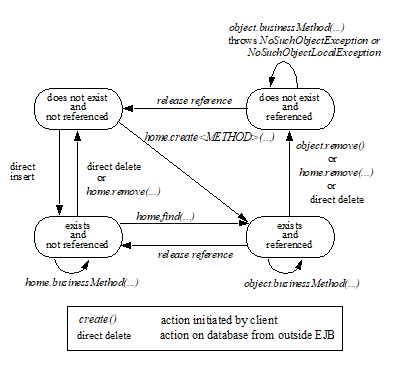
An entity object does not exist until it is created. Until it is created, it has no identity. After it is created, it has identity. A client creates an entity object using the entity bean’s home interface, whose class is implemented by the container. When a client creates an entity object, the client obtains a reference to the newly created entity object.
In an environment with legacy data, entity objects may “exist” before the container and entity bean are deployed. In addition, an entity object may be “created” in the environment via a mechanism other than by invoking a create<METHOD> method of the home interface (e.g. by inserting a database record), but still may be accessible via the finder methods. Also, an entity object may be deleted directly using other means than the remove operation (e.g. by deletion of a database record). The “direct insert” and “direct delete” transitions in the diagram represent such direct database manipulation.
All entity objects are considered persistent objects. The lifetime of an entity object is not limited by the lifetime of the Java Virtual Machine process in which the entity bean instance executes. While a crash of the Java Virtual Machine may result in a rollback of current transactions, it does not destroy previously created entity objects nor invalidate the references to the home and component interfaces held by clients.
Multiple clients can access the same entity object concurrently. Transactions are used to isolate the clients’ work from each other.
3.19. References to Entity Object Remote Interfaces
A client can get a reference to an existing entity object’s remote interface in any of the following ways:
Receive the reference as a parameter in a method call (input parameter or result).
Find the entity object using a finder method defined in the entity bean’s remote home interface.
Obtain the reference from the entity object’s handle. (See Section See Entity Bean’s Handle).
A client that has a reference to an entity object’s remote interface can do any of the following:
Invoke business methods on the entity object through the remote interface.
Obtain a reference to the enterprise bean’s remote home interface.
Pass the reference as a parameter or return value of a method call.
Obtain the entity object’s primary key.
Obtain the entity object’s handle.
Remove the entity object.
All references to an entity object that does not exist are invalid. All attempted invocations on an entity object that does not exist result in an java.rmi.NoSuchObjectException being thrown.
3.20. References to Entity Object Local Interfaces
A local client can get a reference to an existing entity object’s local interface in any of the following ways:
Receive the reference as a result of a method call.
Find the entity object using a finder method defined in the entity bean’s local home interface.
A local client that has a reference to an entity object’s local interface can do any of the following:
Invoke business methods on the entity object through the local interface.
Obtain a reference to the enterprise bean’s local home interface.
Pass the reference as a parameter or return value of a local method call.
Obtain the entity object’s primary key.
Remove the entity object.
All local references to an entity object that does not exist are invalid. All attempted invocations on an entity object that does not exist result in a javax.ejb.NoSuchObjectLocalException being thrown.
A local interface type must not be passed as an argument or result of a remote interface method.
3.21. References to Entity Object and Stateful Session Bean Instance Passivation and Conversational State
If an entity bean is referenced from a stateful session bean, the Bean Provider is required to ensure that the PrePassivate method leaves the instance fields ready to be serialized by the container. In addition to the rules described in EJB Core Contracts and Requirements document See EJB 3.2 Core Contracts and Subsection “Instance Passivation and Conversational State”, for the entity bean references, the objects that are assigned to the instance’s non- transient fields after the session bean PrePassivate method completes can also be one of the following:
A reference to an entity bean’s local component interface, even if it is not serializable.
A reference to an entity bean’s local home interface, even if it is not serializable.
3.22. Primary Key and Object Identity
Every entity object has a unique identity within its home. If two entity objects have the same home and the same primary key, they are considered identical.
The Enterprise JavaBeans architecture allows a primary key class to be any class that is a legal Value Type in RMI-IIOP, subject to the restrictions defined in Subsections See Entity Bean’s Primary Key Class and See Entity Bean’s Primary Key Class. The primary key class may be specific to an entity bean class (i.e., each entity bean class may define a different class for its primary key, but it is possible that multiple entity beans use the same primary key class).
A client that holds a reference to an entity object’s component interface can determine the entity object’s identity within its home by invoking the getPrimaryKey method on the reference.
The object identity associated with a reference does not change over the lifetime of the reference. (That is, getPrimaryKey always returns the same value when called on the same entity object reference). If an entity object has both a remote home interface and a local home interface, the result of invoking the getPrimaryKey method on a reference to the entity object’s remote interface and on a reference to the entity object’s local interface is the same.
A client can test whether two entity object references refer to the same entity object by using the isIdentical method. Alternatively, if a client obtains two entity object references from the same home, it can determine if they refer to the same entity by comparing their primary keys using the equals method.
The following code illustrates using the isIdentical method to test if two object references refer to the same entity object:
Account acc1 = …;
Account acc2 = …;
if (acc1.isIdentical(acc2)) \{
// acc1 and acc2 are the same entity object
} else \{
// acc2 and acc2 are different entity objects
}
A client that knows the primary key of an entity object can obtain a reference to the entity object by invoking the findByPrimaryKey(key) method on the entity bean’s home interface.
Note that the Enterprise JavaBeans architecture does not specify “object equality” (i.e. use of the == operator) for entity object references. The result of comparing two object references using the Java programming language Object.equals(Object obj) method is unspecified. Performing the Object.hashCode() method on two object references that represent the entity object is not guaranteed to yield the same result. Therefore, a client should always use the isIdentical method to determine if two entity object references refer to the same entity object.
Note that the use of isIdentical for the comparison of object references applies to the implementation of the methods of the java.util.Collection API as well.
3.23. Entity Bean’s Remote Interface
A client can access an entity object through the entity bean’s remote interface. An entity bean’s remote interface must extend the javax.ejb.EJBObject interface. A remote interface defines the business methods that are callable by remote clients.
The following example illustrates the definition of an entity bean’s remote interface:
public interface Account extends javax.ejb.EJBObject \{
void debit(double amount)
throws java.rmi.RemoteException,
InsufficientBalanceException;
void credit(double amount)
throws java.rmi.RemoteException;
double getBalance()
throws java.rmi.RemoteException;
}
The javax.ejb.EJBObject interface defines the methods that allow the client to perform the following operations on an entity object’s reference:
Obtain the remote home interface for the entity object.
Remove the entity object.
Obtain the entity object’s handle.
Obtain the entity object’s primary key.
The container provides the implementation of the methods defined in the javax.ejb.EJBObject interface. Only the business methods are delegated to the instances of the enterprise bean class.
Note that the entity object does not expose the methods of the javax.ejb.EnterpriseBean interface to the client. These methods are not intended for the client—they are used by the container to manage the enterprise bean instances.
3.24. Entity Bean’s Local Interface
A local client can access an entity object through the entity bean’s local interface. An entity bean’s local interface must extend the javax.ejb.EJBLocalObject interface. A local interface defines the business methods that are callable by local clients.
The following example illustrates the definition of an entity bean’s local interface:
public interface Account extends javax.ejb.EJBLocalObject \{
void debit(double amount)
throws InsufficientBalanceException;
void credit(double amount);
double getBalance();
}
_Note that the methods of the entity bean’s local interface must not throw the java.rmi.RemoteException._
The javax.ejb.EJBLocalObject interface defines the methods that allow the local client to perform the following operations on an entity object’s local reference:
Obtain the local home interface for the entity object.
Remove the entity object.
Obtain the entity object’s primary key.
The container provides the implementation of the methods defined in the javax.ejb.EJBLocalObject interface. Only the business methods are delegated to the instances of the enterprise bean class.
Note that the entity object does not expose the methods of the javax.ejb.EntityBean or the optional javax.ejb.TimedObject interface to the local client. These methods are not intended for the local client—they are used by the container to manage the enterprise bean instances.
3.25. Entity Bean’s Handle
An entity object’s handle is an object that identifies the entity object on a network. A client that has a reference to an entity object’s remote interface can obtain the entity object’s handle by invoking the getHandle method on the remote interface. The getHandle method is only available on the remote interface.
Since a handle class extends java.io.Serializable, a client may serialize the handle. The client may use the serialized handle later, possibly in a different process or even system, to re-obtain a reference to the entity object identified by the handle.
The client code must use the javax.rmi.PortableRemoteObject.narrow method to convert the result of the getEJBObject method invoked on a handle to the entity bean’s remote interface type.
The lifetime and scope of a handle is specific to the handle implementation. At the minimum, a program running in one JVM must be able to obtain and serialize the handle, and another program running in a different JVM must be able to deserialize it and re-create an object reference. An entity handle is typically implemented to be usable over a long period of time—it must be usable at least across a server restart.
Containers that store long-lived entities will typically provide handle implementations that allow clients to store a handle for a long time (possibly many years). Such a handle will be usable even if parts of the technology used by the container (e.g. ORB, DBMS, server) have been upgraded or replaced while the client has stored the handle. Support for this “quality of service” is not required by the EJB specification.
An EJB container is not required to accept a handle that was generated by another vendor’s EJB container.
The use of a handle is illustrated by the following example:
entity object and
ObjectOutputStream stream = …;
Account account = …;
Handle handle = account.getHandle();
stream.writeObject(handle);
storage, and use the
the
ObjectInputStream stream = …;
Handle handle = (Handle) stream.readObject(handle);
Account account = (Account)javax.rmi.PortableRemoteObject.narrow(
handle.getEJBObject(), Account.class);
account.debit(100.00);
A handle is not a capability, in the security sense, that would automatically grant its holder the right to invoke methods on the object. When a reference to an object is obtained from a handle, and then a method on the object is invoked, the container performs the usual access checks based on the caller’s principal.
3.26. Entity Home Handles
The EJB specification allows a client to obtain a handle for the remote home interface. The client can use the home handle to store a reference to an entity bean’s remote home interface in stable storage, and re-create the reference later. This handle functionality may be useful to a client that needs to use the remote home interface in the future, but does not know the JNDI name of the remote home interface.
A handle to a remote home interface must implement the javax.ejb.HomeHandle interface.
The client code must use the javax.rmi.PortableRemoteObject.narrow method to convert the result of the getEJBHome method invoked on a handle to the home interface type.
The lifetime and scope of a handle is specific to the handle implementation. At a minimum, a program running in one JVM must be able to serialize the handle, and another program running in a different JVM must be able to deserialize it and re-create an object reference. An entity handle is typically implemented to be usable over a long period of time—it must be usable at least across a server restart.
3.27. Type Narrowing of Object References
A client program that is intended to be interoperable with all compliant EJB container implementations must use the javax.rmi.PortableRemoteObject.narrow method to perform type-narrowing of the client-side representations of the remote home and remote interfaces.
Note: Programs that use the cast operator to narrow the remote and remote home interfaces are likely to fail if the container implementation uses RMI-IIOP as the underlying communication transport.
4. EJB 2.1 Entity Bean Component Contract for Container-Managed Persistence
The EJB 2.1 entity bean component contract for container-managed persistence is the contract between an entity bean and its container. It defines the life cycle of the entity bean instances, the model for method delegation of the business methods invoked by the client, and the model for the management of the entity bean’s persistent state and relationships. The main goal of this contract is to ensure that an entity bean component using container-managed persistence is portable across all compliant EJB containers.
This chapter defines the Enterprise Bean Provider’s view of this contract and responsibilities of the Container Provider for managing the life cycle of the enterprise bean instances and their persistent state and relationships.
Note that use of dependency injection, interceptors, and Java language metadata annotations is not supported for EJB 2.1 entity beans.
4.1. Overview
In accordance with the architecture for container-managed persistence, the Bean Provider develops a set of entity beans for an application, and determines the relationships among them. The Bean Provider designs an abstract persistence schema for each entity bean, which defines its container-managed fields and relationships, and determines the methods for accessing them. The entity bean instance accesses its container-managed fields and relationships at runtime by means of the methods defined for its abstract persistence schema.
The abstract persistence schema is specified in the deployment descriptor that is produced by the Bean Provider. The Deployer, using the Container Provider’s tools, determines how the persistent fields and relationships defined by the abstract persistence schema are mapped to a database or other persistent store, and generates the necessary additional classes and interfaces that enable the container to manage the persistent fields and relationships of the entity bean instances at runtime.
This chapter describes the component contract for an EJB 2.1 entity bean with container-managed persistence, and how data independence is maintained between the entity bean instance and its representation in the persistent store. It describes this contract from the viewpoints of both the Bean Provider and the container.
4.2. Container-Managed Entity Persistence and Data Independence
The EJB component model provides a separation between the client view of a bean (as presented by its home and component interfaces) and the entity bean class (which provides the implementation of the client view). The EJB architecture for container-managed persistence adds to this a separation between the entity bean class (as defined by the Bean Provider) and its persistent representation. The container-managed persistence architecture thus provides not only a layer of data independence between the client view of a bean as an entity object and the Bean Provider’s internal view of the bean in terms of the entity bean instance, but also between the entity bean instance and its persistent representation. This allows an entity bean to be evolved independently from its clients, without requiring the redefinition or recompilation of those clients, and it allows an entity bean to be redeployed across different containers and different persistent data stores, without requiring the redefinition or recompilation of the entity bean class.
In container-managed persistence, unlike in bean-managed persistence, the Bean Provider does not write database access calls in the methods of the entity bean class. Instead, persistence is handled by the container at runtime. The entity Bean Provider must specify in the deployment descriptor those persistent fields and relationships for which the container must handle data access. The Bean Provider codes all persistent data access by using the accessor methods that are defined for the abstract persistence schema. The implementation of the persistent fields and relationships, as well as all data access, is deferred to the container.
It is the responsibility of the Deployer to map the abstract persistence schema of a set of interrelated entity bean classes into the physical schema used by the underlying data store (e.g., into a relational schema) by using the Container Provider’s tools. The Deployer uses the deployment descriptor as input to the Container Provider’s tools to perform this mapping. The Container Provider’s tools are also used to generate the concrete implementation of the entity bean classes, including the code that delegates calls to the accessor methods of the entity bean class to the runtime persistent data access layer of the container.
The EJB deployment descriptor for EJB 2.1 entity beans describes logical relationships among entity beans. It does not provide a mechanism for specifying how the abstract persistence schema of an entity bean or of a set of interrelated entity beans is to be mapped to an underlying database. This is the responsibility of the Deployer, who, using the Container Provider’s tools, uses the logical relationships that are specified in the deployment descriptor to map to the physical relationships that are specific to the underlying resource. It is the responsibility of the container to manage the mapping between the logical and physical relationships at runtime and to manage the referential integrity of the relationships.
The advantage of using container-managed persistence is that the entity bean can be logically independent of the data source in which the entity is stored. The Container Provider’s tools can, for example, generate classes that use JDBC or SQLJ to access the entity state in a relational database; classes that implement access to a non-relational data source, such as an IMS database; or classes that implement function calls to existing enterprise applications. These tools are typically specific to each data source.
===
View of Underlying Data Sources Accessed Through Entity Bean
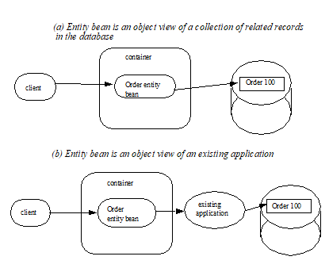
4.3. The Entity Bean Provider’s View of Container-Managed Persistence
An entity bean implements an object view of a business entity or set of business entities stored in an underlying database or implemented by an existing enterprise application (for example, by a mainframe program or by an ERP application).
An entity bean with container-managed persistence typically consists of its entity bean class; a component interface which defines its client view business methods; a home interface which defines the create, remove, home, and finder methods of its client view; and its abstract persistence schema as specified in the deployment descriptor.
A client of an entity bean can control the life cycle of a bean by using the bean’s home interface and can manipulate the bean as a business entity by using the methods defined by its component interface. The home and component interfaces of a bean define its client view.
An entity bean with container-managed persistence typically has container-managed relationships with other container-managed persistence entity beans, as defined by the relationships element of the deployment descriptor. The architecture for container-managed persistence thus allows the Bean Provider to implement complex applications by defining a complex abstract persistence schema encompassing multiple entity bean classes related by means of container-managed relationships.
An entity bean accesses related entity beans by means of the accessor methods for its container-managed relationship fields, which are specified by the cmr-field elements of its abstract persistence schema defined in the deployment descriptor. Entity bean relationships are defined in terms of the local interfaces of the related beans, and the view an entity bean presents to its related beans is defined by its local home and local interfaces. Thus, an entity bean can be the target of a relationship from another entity bean only if it has a local interface.
The Bean Provider programming an application that uses container-managed persistence typically avoids calls to the methods of the remote home and remote interfaces in favor of invoking related beans by means of the methods of their local interfaces. Unlike remote method calls, such internal method invocations are made using call-by-reference and commonly do not involve the checking of method permissions.
The Enterprise JavaBeans architecture for container-managed persistence provides great flexibility to the Bean Provider in designing an application.
For example, a group of related entity beans— Order , LineItem , and Customer —might all be defined as having only local interfaces, with a remotable session bean containing the business logic that drives their invocation. The individual entity beans form a coordinated whole that provides an interrelated set of services that are exposed by their several home and component interfaces. The services provided by the local network of entity beans is exposed to the remote client view through the home and remote interfaces of the session bean, which offers a coarser grained remote service.
Alternatively, a single entity bean might represent an independent, remotable business object that forms a unit of distribution that is designed to be referenced remotely by multiple enterprise beans and/or other remote clients. Such a remotable entity bean might make use of other entity beans within its local scope to further model its complex internal state. For example, an Order entity bean might make use of a LineItem entity bean internally, not exposing it to remote clients. In this case, the Order entity bean might define both a remote and a local component interface, where the local interface is presented only to the related entity beans, such as LineItem , and the remote interface is presented to session beans and/or web-tier clients.
4.4. The Entity Bean Provider’s Programming Contract
The Bean Provider must observe the following programming contract when defining an entity bean class that uses container-managed persistence:
The Bean Provider must define the entity bean class as an abstract class. The container provides the implementation class that is used at runtime.
The container-managed persistent fields and container-managed relationship fields must not be defined in the entity bean class. From the perspective of the Bean Provider, the container-managed persistent fields and container-managed relationship fields are virtual fields only, and are accessed through get and set accessor methods. The implementation of the container-managed persistent fields and container-managed relationship fields is supplied by the container.
The container-managed persistent fields and container-managed relationship fields must be specified in the deployment descriptor using the cmp-field and cmr-field elements respectively. The names of these fields must be valid Java identifiers and must begin with a lowercase letter, as determined by java.lang.Character.isLowerCase .
The Bean Provider must define the accessor methods for the container-managed persistent fields and container-managed relationship fields as get and set methods, using the JavaBeans conventions. The implementation of the accessor methods is supplied by the container.
The accessor methods must be public, must be abstract, and must bear the name of the container-managed persistent field ( cmp-field ) or container-managed relationship field ( cmr-field ) that is specified in the deployment descriptor, and in which the first letter of the name of the cmp-field or cmr-field has been uppercased and prefixed by “ get ” or “ set ”.
The accessor methods for a container-managed relationship field must be defined in terms of the local interface of the related entity bean, as described in See The Entity Bean Provider’s View of Persistent Relationships.
The accessor methods for container-managed relationship fields for one-to-many or many-to-many relationships must utilize one of the following Collection interfaces: java.util.Collection or java.util.Set . The Collection interfaces used in relationships are specified in the deployment descriptor. The implementation of the collection classes used for the container-managed relationship fields is supplied by the container.
An entity bean local interface type (or a collection of such) can be the type of a cmr-field. An entity bean local interface type (or a collection of such) cannot be the type of a cmp-field.
The accessor methods for the container-managed relationship fields must not be exposed in the remote interface of an entity bean.
The local interface types of the entity bean and of related entity beans must not be exposed through the remote interface of the entity bean.
The collection classes that are used for container-managed relationships must not be exposed through the remote interface of the entity bean.
Once the primary key for an entity bean has been set, the Bean Provider must not attempt to change it by use of set accessor methods on the primary key cmp-fields. The Bean Provider should therefore not expose the set accessor methods for the primary key cmp-fields in the component interface of the entity bean.
The Bean Provider must ensure that the Java types assigned to the cmp-fields are restricted to the following: Java primitive types and Java serializable types.
4.5. The Entity Bean Provider’s View of Persistent Relationships
An entity bean may have relationships with other entity beans with container-managed persistence.
Relationships may be one-to-one, one-to-many, or many-to-many relationships.
Container-managed relationships can exist only among entity beans within the same local relationship scope, as defined by the relationships element in the deployment descriptor. Container-managed relationships are defined in terms of the local interfaces of the related beans.
Relationships may be either bidirectional or unidirectional. If a relationship is bidirectional, it can be navigated in both directions, whereas a unidirectional relationship can be navigated in one direction only.
A unidirectional relationship is implemented with a cmr-field on the entity bean instance from which navigation can take place, and no related cmr-field on the entity bean instance that is the target of the relationship. Unidirectional relationships are typically used when the Bean Provider wishes to restrict the visibility of a relationship.
An entity bean that does not have a local interface can have only unidirectional relationships from itself to other entity beans. The lack of a local interface prevents other entity beans from having a relationship to it.
The bean developer navigates or manipulates relationships by using the get and set accessor methods for the container-managed relationship fields and the java.util.Collection API for collection-valued container-managed relationship fields.
The Bean Provider must consider the type and cardinality of relationships when the entity bean classes are programmed. The get method for a cmr-field must return either the local interface of the entity bean or a collection (either java.util.Collection or java.util.Set ) of the same. The set method for the relationship must take as an argument the entity bean’s local interface or a collection of the same.
4.6. Dependent Value Classes
A dependent value class is a concrete class that is the value of a cmp-field. A dependent value class may be a class that the Bean Provider wishes to use internally within an entity bean with container-managed persistence, and/or it may be a class that the Bean Provider chooses to expose through the remote (or local) interface of the entity bean.
A dependent value class can be the value of a cmp-field; it cannot be the value of a cmr-field.
The get accessor method for a cmp-field that corresponds to a dependent value class returns a copy of the dependent value class instance. The assignment of a dependent value class value to a cmp-field using the set accessor method causes the value to be copied to the target cmp-field.
A dependent value class must be serializable. The internal structure of a dependent value class is not described in the EJB deployment descriptor.
4.7. Remove Protocols
The Bean Provider can specify the removal of an entity object in two ways:
By the use of a remove method on the entity bean’s component interface or home interface.
By the use of a cascade-delete specification in the deployment descriptor.
4.8. Remove Methods
When the remove method is invoked on an entity object, the container must invoke the entity Bean Provider’s ejbRemove method as described in Section See Container’s View. After the Bean Provider’s ejbRemove method returns (and prior to returning to the client), the container must remove the entity object from all relationships in which it participates, and then remove its persistent representation. 4
Once an entity has been removed from a relationship, the accessor methods for any relationships to the entity will reflect this removal. An accessor method for a one-to-one or many-to-one relationship to the entity will return null; and an accessor method for a many-to-many relationship to the entity will return a collection from which the entity object has been removed.
The container must detect any subsequent attempt to invoke an accessor method on the removed entity object and throw the java.rmi.NoSuchObjectException if the client is a remote client or the javax.ejb.NoSuchObjectLocalException if the client is a local client. The container must detect an attempt to assign a removed entity object as the value of a cmr-field of another object (whether as an argument to a set accessor method or as an argument to a method of the java.util.Collection API) and throw the java.lang.IllegalArgumentException .
After removing the entity object from all relationships and removing its persistent representation, the container must then cascade the removal to all entity beans with which the entity had been previously in container-managed relationships for which the cascade-delete option was specified.
More than one relationship may be affected by the removal of an entity object, as in the following example. Once the shipping address object used by the Order bean has been removed, the billing address accessor method will also return null.
public void changeAddress()
Address a = createAddress();
setShippingAddress(a);
setBillingAddress(a);
//both relationships now reference the same entity object
getShippingAddress().remove();
if (getBillingAddress() == null) // it must be
...
else ...
// this is impossible....
The remove method, alone, causes only the entity on which it is invoked to be removed. It does not cause the deletion to be cascaded to other entity objects. In order for the deletion of one entity object to be automatically cascaded to another, the cascade-delete mechanism should be used.
4.9. Cascade-delete
The cascade-delete deployment descriptor element is used within a particular relationship to specify that the lifetime of one or more entity objects is dependent upon the lifetime of another entity object.
The cascade-delete deployment descriptor element is contained within the ejb-relationship-role element. The cascade-delete element can only be specified for an ejb-relationship-role element contained in an ejb-relation element if the other ejb-relationship-role element in the same ejb-relation element specifies a multiplicity of One . The cascade-delete option cannot be specified for a many-to-many relationship. The deletion of one entity object can only be cascaded to cause the deletion of other entity objects if the first entity object is in a one-to-one or one-to-many relationship with those other entity objects.
If an entity is deleted, and the cascade-delete deployment descriptor element is specified for a related entity bean, then the removal is cascaded to cause the removal of the related entity object or objects. As with the remove operation, the removal triggered by the cascade-delete option causes the container to invoke the ejbRemove method on the entity bean instance that is to be removed before the persistent representation of that entity object is removed. Once an entity has been removed from a relationship because of a cascaded delete, the accessor methods for any relationships to the entity will reflect this removal. An accessor method for a one-to-one or many-to-one relationship to the entity will return null; and an accessor method for a many-to-many relationship to the entity will return a collection from which the entity object has been removed. After removing the entity object from all relationships and removing its persistent representation, the container must then cascade the removal to all entity beans with which the entity had been previously been in container-managed relationships for which the cascade-delete option was specified.
The use of cascade-delete causes only the entity object or objects in the relationship for which it is specified to be deleted. It does not cause the deletion to be further cascaded to other entity objects, unless they are participants in relationship roles for which cascade-delete has also been specified.
4.10. Identity of Entity Objects
From the viewpoint of the Bean Provider, entity objects have a runtime object identity that is maintained by the container.
The container maintains the persistent identity of an entity object on the basis of its primary key.
The primary key of an entity bean may or may not be visible as one or more cmp-fields of the instance, depending on the way in which it is specified. The Bean Provider specifies the primary key as described in See Primary Keys. Once it has been set, the Bean Provider must not attempt to change the value of a primary key field by means of a set method on its cmp-fields.
When a new instance of an entity bean whose primary key fields are visible in the entity bean class is created, the Bean Provider must use the ejbCreate<METHOD> method to set all the primary key fields of the entity bean instance before the instance can participate in a relationship, e.g. be used in a set accessor method for a cmr-field. The Bean Provider must not reset a primary key value by means of a set method on any of its cmp-fields after it has been set in the ejbCreate<METHOD> method. If the Bean Provider attempts to reset a primary key value, the container must throw the java.lang.IllegalStateException .
Note that the container’s implementation of the referential integrity semantics for container-managed relationships must not cause the value of the primary key to change.
The Bean Provider should not use untrimmed or blank-padded string-valued primary key fields. Use of untrimmed primary key fields may cause comparison operations based on primary keys to fail, and may result in non-portable behavior. If untrimmed strings are used in primary key fields or other cmp-fields, the container or database system may trim them.
4.11. Semantics of Assignment for Relationships
The assignment operations for container-managed relationships have a special semantics that is determined by the referential integrity semantics for the relationship multiplicity.
In the case of a one-to-one relationship, when the Bean Provider uses a set accessor method to assign an object from a cmr-field in one instance to a cmr-field of the same relationship type (i.e., as defined by the ejb-relation and ejb-relationship-role deployment descriptor elements) in another instance, the object is effectively moved and the value of the source cmr-field is set to null in the same transaction context. If the argument to the set accessor method is not of the same type as the cmr-field, the container must throw the java.lang.IllegalArgumentException .
In the case of a one-to-many or many-to-many relationship, either the java.util.Collection API or a set accessor method may be used to manipulate the contents of a collection-valued cmr-field. These two approaches are discussed below.
4.12. Use of the java.util.Collection API to Update Relationships
The methods of the java.util.Collection API for the container-managed collections used for collection-valued cmr-fields have the usual semantics, with the following exception: the add and addAll methods applied to container-managed collections in one-to-many relationships have a special semantics that is determined by the referential integrity of one-to-many relationships.
If the argument to the add method is already an element of a collection-valued relationship field of the same relationship type as the target collection (as defined by the ejb-relation and ejb-relationship-role deployment descriptor elements), it is removed from this first relationship and added, in the same transaction context, to the target relationship (i.e., it is effectively moved from one collection of the relationship type to the other). For example, if there is a one-to-many relationship between field offices and sales representatives, adding a sales representative to a new field office will have the effect of removing him or her from his or her current field office. If the argument to the add method is not an element of a collection-valued relationship of the same relationship type , it is simply added to the target collection and not removed from its current collection, if any.
The addAll method, when applied to a target collection in a one-to-many relationship, has similar semantics, applied to the members of its collection argument individually.
Note that in the case of many-to-many relationships, adding an element or elements to the contents of a collection-valued cmr-field has no effect on the source collection, if any. For example, if there is a many-to-many relationship between customers and sales representatives, a customer can be added to the set of customers handled by a particular sales representative without affecting the set of customers handled by any other sales representative.
When the java.util.Collection API is used to manipulate the contents of container-managed relationship fields, the argument to any Collection method defined with a single Object parameter must be of the element type of the collection defined for the target cmr-field. The argument for any collection-valued parameter must be a java.util.Collection (or java.util.Set ), all of whose elements are of the element type of the collection defined for the target cmr-field. If an argument is not of the correct type for the relationship, the container must throw the java.lang.IllegalArgumentException .
The Bean Provider should exercise caution when using an Iterator over a collection in a container-managed relationship. In particular, the Bean Provider should not modify the container-managed collection while the iteration is in progress in any way that causes elements to be added or removed, other than by the java.util.Iterator.remove() method. If elements are added or removed from the underlying container-managed collection used by an iterator other than by the java.util.Iterator.remove() method, the container should throw the java.lang.IllegalStateException on the next operation on the iterator.
The following example illustrates how operations on container-managed relationships that affect the contents of a collection-valued cmr-field viewed through an iterator can be avoided. Because there is a one-to-many relationship between field offices and sales representatives, adding a sales representative to a new field office causes the sales representative to be removed from the current field office.
Collection nySalesreps = nyOffice.getSalesreps();
Collection sfSalesreps = sfOffice.getSalesreps();
Iterator i = nySalesreps.iterator();
Salesrep salesrep;
while (i.hasNext()) \{
salesrep = (Salesrep)i.next();
sfSalesreps.add(salesrep); // removes salesrep from nyOffice
}
the salesrep
while (i.hasNext()) \{
salesrep = (Salesrep)i.next();
i.remove();
sfSalesreps.add(salesrep);
}
4.13. Use of Set Accessor Methods to Update Relationships
The semantics of a set accessor method, when applied to a collection-valued cmr-field, is also determined by the referential integrity semantics associated with the multiplicity of the relationship. The identity of the collection object referenced by a cmr-field does not change when a set accessor method is executed.
In the case of a one-to-many relationship, if a collection of entity objects is assigned from a cmr-field of in one instance to a cmr-field of the same relationship type in another instance, the objects in the collection are effectively moved. The contents of the collection of the target instance are replaced with the contents of the collection of the source instance, but the identity of the collection object containing the instances in the relationship does not change. The source cmr-field references the same collection object as before (i.e., the identity of the collection object is preserved), but the collection is empty.
The Bean Provider can thus use the set method to move objects between the collections referenced by cmr-fields of the same relationship type in different instances. The set accessor method, when applied to a cmr-field in a one-to-many relationship thus has the semantics of the java.util.Collection methods clear , followed by addAll , applied to the target collection; and clear , applied to the source collection. It is the responsibility of the container to transfer the contents of the collection instances in the same transaction context.
Note that if the collection that is passed to the cmr setter method is an unmanaged collection (i.e., not itself the value of a collection-valued cmr-field), the same requirements apply in the case that the collection contains entity objects that already participate in a one-to-many relationship of the same relationship type as the target cmr-field.
In the following example, the telephone numbers associated with the billing address of an Order bean instance are transferred to the shipping address. Billing address and shipping address are different instances of the same local interface type, Address . Address is related to TelephoneNumber in a one-to-many relationship. The example illustrates how a Bean Provider uses the set method to move a set of instances.
public void changeTelephoneNumber() \{
Address a = getShippingAddress();
Address b = getBillingAddress();
Collection c = b.getTelephoneNumbers();
a.setTelephoneNumbers(b.getTelephoneNumbers());
if (c.isEmpty()) \{ // must be true...
...
}
In the case of a many-to-many relationship, if the value of a cmr-field is assigned to a cmr-field of the same relationship type in another instance, the objects in the collection of the first instance are assigned as the contents of the cmr-field of the second instance. The identities of the collection objects referenced by the cmr-fields do not change. The contents of the collections are shared, but not the collections themselves. The set accessor method, when applied to a cmr-field in a many-to-many relationship thus has the semantics of the java.util.Collection methods clear , followed by addAll , applied to the target collection.
For example, if there is a many-to-many relationship between customers and sales representatives, assigning the set of customers of one sales representative to the another sales representative will result in both sales representatives handling the same customers. If the second sales representative originally handled a different group of customers, those customers will no longer be handled by that sales representative.
public void shareCustomers(SalesRep rep) \{
setCustomers(rep.getCustomers());
// the customers are shared among the sales reps
}
The following section, See Assignment Rules for Relationships, defines the semantics of assignment for relationships in further detail.
4.14. Assignment Rules for Relationships
This section defines the semantics of assignment and collection manipulation in one-to-one, one-to-many, and many-to-many container-managed relationships.
The figures make use of two entity beans, with local interface types A and B. Instances with local interface type A are typically designated as a1 ,…, an ; instances with local interface type B are typically designated as b1 ,…, bm . Interface A exposes accessor methods getB and setB for navigable relationships with B : getB returns an instance of B or a collection of instances of B , depending on the multiplicity of the relationship. Similarly, B exposes accessor methods getA and setA for navigable relationships with A .
All changes in each subsection are assumed to be applied to the figure labeled “Before change” at the beginning of the subsection (i.e., changes are not cumulative). The results of changes are designated graphically as well as in conditional expressions expressed in the Java TM programming language.
4.15. One-to-one Bidirectional Relationships
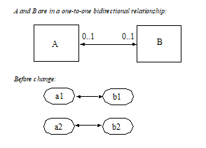
Before change:
B b1 = a1.getB();
B b2 = a2.getB();
Change:
_a1.setB(a2.getB());_
Expected result:
(b2.isIdentical(a1.getB())) &&
(a2.getB() == null) &&
(b1.getA() == null) &&
(a1.isIdentical(b2.getA()))
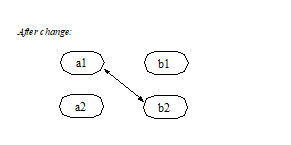
4.16. One-to-one Unidirectional Relationships
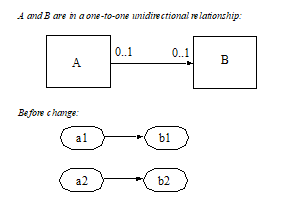
Before change:
B b1 = a1.getB();
B b2 = a2.getB();
Change:
_a1.setB(a2.getB());_
Expected result:
_(b2.isIdentical(a1.getB())) && (_ a2.getB() === null)
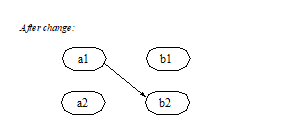
4.17. One-to-many Bidirectional Relationships
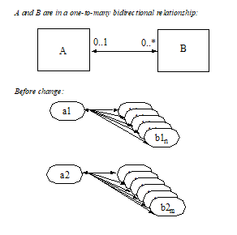
Before change:
Collection b1 = a1.getB();
Collection b2 = a2.getB();
B b11, b12, … , b1n; // members of b1
B b21, b22, … , b2m; // members of b2
Change:
_a1.setB(a2.getB());_
Expected result:
(a2.getB().isEmpty()) &&
(b2.isEmpty()) &&
(b1 == a1.getB()) &&
(b2 == a2.getB()) &&
(a1.getB().contains(b21)) &&
(a1.getB().contains(b22)) && … &&
(a1.getB().contains(b2m)) &&
(b11.getA() == null) &&
(b12.getA() == null) && … &&
(b1n.getA() == null) &&
(a1.isIdentical(b21.getA())) &&
(a1.isIdentical(b22.getA())) && …&&
(a1.isIdentical(b2m.getA()))
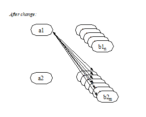
Change:
_b2m.setA(b1n.getA());_
Expected result:
(b1.contains(b11)) &&
(b1.contains(b12)) && … &&
(b1.contains(b1n)) &&
(b1.contains(b2m)) &&
(b2.contains(b21)) &&
(b2.contains(b22)) && … &&
(b2.contains(b2m_1)) &&
(a1.isIdentical(b11.getA())) &&
(a1.isIdentical(b12.getA())) && … &&
(a1.isIdentical(b1n.getA())) &&
(a2.isIdentical(b21.getA())) &&
(a2.isIdentical(b22.getA())) && … &&
(a2.isIdentical(b2m_1.getA())) &&
(a1.isIdentical(b2m.getA()))
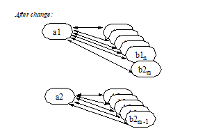
Change:
a1.getB().add(b2m);
Expected result:
(b1.contains(b11)) &&
(b1.contains(b12)) && … &&
(b1.contains(b1n)) &&
(b1.contains(b2m)) &&
(b2.contains(b21)) &&
(b2.contains(b22)) && … &&
(b2.contains(b2m_1)) &&
(a1.isIdentical(b11.getA())) &&
(a1.isIdentical(b12.getA())) && … &&
(a1.isIdentical(b1n.getA())) &&
(a2.isIdentical(b21.getA())) &&
(a2.isIdentical(b22.getA())) && … &&
(a2.isIdentical(b2m_1.getA())) &&
(a1.isIdentical(b2m.getA()))

Change:
a1.getB().remove(b1n);
Expected result:
(b1n.getA() == null) &&
(b1 == a1.getB()) &&
(b1.contains(b11)) &&
(b1.contains(b12)) && … &&
(b1.contains(b1n_1)) &&
!(b1.contains(b1n))
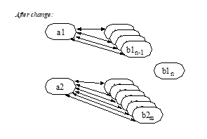
4.18. One-to-many Unidirectional Relationships
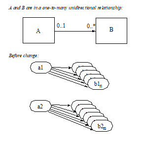
Before change:
Collection b1 = a1.getB();
Collection b2 = a2.getB();
B b11, b12, … , b1n; // members of b1
B b21, b22, … , b2m; // members of b2
Change:
_a1.setB(a2.getB());_
Expected result:
(a2.getB().isEmpty()) &&
(b2.isEmpty()) &&
(b1 == a1.getB()) &&
(b2 == a2.getB()) &&
(a1.getB().contains(b21)) &&
(a1.getB().contains(b22)) && … &&
(a1.getB().contains(b2m))
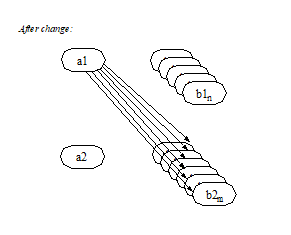
Change:
a1.getB().add(b2m);
Expected result:
(b1 == a1.getB()) &&
(b1.contains(b2m))
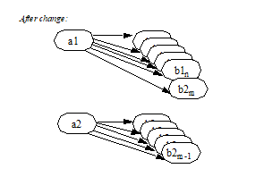
Change:
a1.getB().remove(b1n);
Expected result:
(a1.getB().contains(b11)) &&
(a1.getB().contains(b12)) && … &&
(a1.getB().contains(b1n_1)) &&
!(a1.getB().contains(b1n)) &&
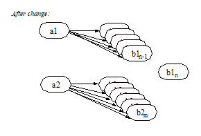
4.19. Many-to-one Unidirectional Relationships
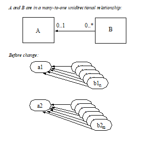
Before change:
B b11, b12, … , b1n;
B b21, b22, … , b2m;
(a1.isIdentical(b1n.getA() )) &&
(a2.isIdentical(b2m.getA() ))
Change:
_b1j.setA(b2k.getA());_
Expected result:
(a1.isIdentical(b11.getA())) &&
(a1.isIdentical(b12.getA())) &&
…
(a2.isIdentical(b1j.getA())) &&
…
(a1.isIdentical(b1n.getA())) &&
(a2.isIdentical(b21.getA())) &&
(a2.isIdentical(b22.getA())) &&
…
(a2.isIdentical(b2k.getA())) &&
…
(a2.isIdentical(b2m.getA()))
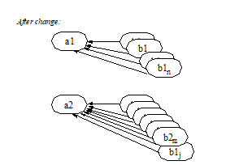
4.20. Many-to-many Bidirectional Relationships
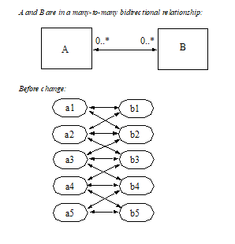
Before change the following holds:
(a1.getB().contains(b1)) &&
(a1.getB().contains(b2)) &&
(a2.getB().contains(b1)) &&
(a2.getB().contains(b2)) &&
(a2.getB().contains(b3)) &&
(a3.getB().contains(b2)) &&
(a3.getB().contains(b3)) &&
(a3.getB().contains(b4)) &&
(a4.getB().contains(b3)) &&
(a4.getB().contains(b4)) &&
(a4.getB().contains(b5)) &&
(a5.getB().contains(b4)) &&
(a5.getB().contains(b5)) &&
(b1.getA().contains(a1)) &&
(b1.getA().contains(a2)) &&
(b2.getA().contains(a1)) &&
(b2.getA().contains(a2)) &&
(b2.getA().contains(a3)) &&
(b3.getA().contains(a2)) &&
(b3.getA().contains(a3)) &&
(b3.getA().contains(a4)) &&
(b4.getA().contains(a3)) &&
(b4.getA().contains(a4)) &&
(b4.getA().contains(a5)) &&
(b5.getA().contains(a4)) &&
(b5.getA().contains(a5)) &&
Change:
_a1.setB(a3.getB());_
Expected result:
(a1.getB().contains(b2)) &&
(a1.getB().contains(b3)) &&
(a1.getB().contains(b4)) &&
(a3.getB().contains(b2)) &&
(a3.getB().contains(b3)) &&
(a3.getB().contains(b4)) &&
(b1.getA().contains(a2)) &&
(b2.getA().contains(a1)) &&
(b2.getA().contains(a2)) &&
(b2.getA().contains(a3)) &&
(b3.getA().contains(a1)) &&
(b3.getA().contains(a2)) &&
(b3.getA().contains(a3)) &&
(b3.getA().contains(a4)) &&
(b4.getA().contains(a1)) &&
(b4.getA().contains(a3)) &&
(b4.getA().contains(a4)) &&
(b4.getA().contains(a5))
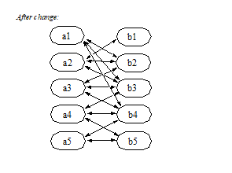
Change:
a1.getB().add(b3);
Expected result:
(a1.getB().contains(b1)) &&
(a1.getB().contains(b2)) &&
(a1.getB().contains(b3)) &&
(b3.getA().contains(a1)) &&
(b3.getA().contains(a2)) &&
(b3.getA().contains(a3)) &&
(b3.getA().contains(a4)) &&
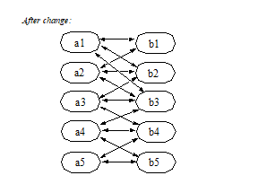
Change:
a2.getB().remove(b2);
Expected result:
(a2.getB().contains(b1)) &&
(a2.getB().contains(b3)) &&
(b2.getA().contains(a1)) &&
(b2.getA().contains(a3))
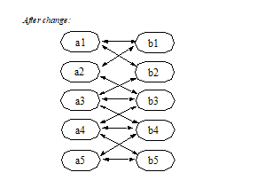
4.21. Many-to-many Unidirectional Relationships
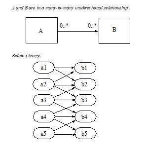
Before change the following holds:
(a1.getB().contains(b1)) &&
(a1.getB().contains(b2)) &&
(a2.getB().contains(b1)) &&
(a2.getB().contains(b2)) &&
(a2.getB().contains(b3)) &&
(a3.getB().contains(b2)) &&
(a3.getB().contains(b3)) &&
(a3.getB().contains(b4)) &&
(a4.getB().contains(b3)) &&
(a4.getB().contains(b4)) &&
(a4.getB().contains(b5)) &&
(a5.getB().contains(b4)) &&
(a5.getB().contains(b5)) &&
Change:
_a1.setB(a3.getB());_
Expected Result:
(a1.getB().contains(b2)) &&
(a1.getB().contains(b3)) &&
(a1.getB().contains(b4)) &&
(a3.getB().contains(b2)) &&
(a3.getB().contains(b3)) &&
(a3.getB().contains(b4)) &&
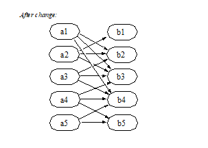
Change:
a1.getB().add(b3);
Expected result:
(a1.getB().contains(b1)) &&
(a1.getB().contains(b2)) &&
(a1.getB().contains(b3))
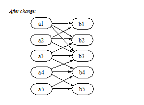
Change:
a2.getB().remove(b2);
Expected result:
(a2.getB().contains(b1)) &&
(a2.getB().contains(b3))
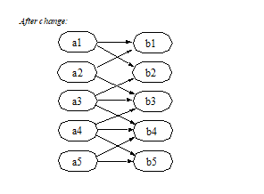
4.22. Collections Managed by the Container
The collections that are used in the representation of one-to-many and many-to-many container-managed relationships are implemented and managed by the container. The following semantics apply to these collections:
It is the responsibility of the container to preserve the runtime identity of the collection objects used in container-managed relationships.
There is no constructor available to the Bean Provider for the container-managed collections.
If there are no related values for a given container-managed relationship, the get accessor method for that cmr-field returns an empty collection (and not null ).
It is the responsibility of the container to raise the java.lang.IllegalArgumentException if the Bean Provider attempts to assign null as the value of a collection-valued cmr-field by means of the set accessor method.
It is the responsibility of the container to ensure that when the java.util.Collection API is used to manipulate the contents of container-managed relationship fields, the argument to any Collection method defined with a single Object parameter must be of the element type of the collection defined for the target cmr-field. The argument for any collection-valued parameter must be a java.util.Collection (or java.util.Set ), all of whose elements are of the element type of the collection defined for the target cmr-field. If an argument is not of the correct type for the relationship, the container must throw the java.lang.IllegalArgumentException .
It is the responsibility of the container to throw the java.lang.IllegalStateException if an attempt is made to modify a container-managed collection corresponding to a multivalued cmr-field using the java.util.Collection API outside of the transaction context in which the collection object was initially materialized.
It is the responsibility of the container to throw the java.lang.IllegalStateException if an attempt is made to use a java.util.Iterator for a container-managed collection in a transaction context other than that in which the iterator was obtained.
4.23. Non-persistent State
The Bean Provider may use instance variables in the entity bean instance to maintain non-persistent state, e.g. a JMS connection.
The Bean Provider can use instance variables to store values that depend on the persistent state of the entity bean instance, although this use is not encouraged. The Bean Provider should use the ejbLoad method to resynchronize the values of any instance variables that depend on the entity bean’s persistent state. In general, any non-persistent state that depends on the persistent state of an entity bean should be recomputed during the ejbLoad method.
The Bean Provider should exercise care in passing the contents of instance variables as the arguments or results of method invocations when local interfaces are used. In general, the Bean Provider should avoid passing state that is maintained in instance variables as the argument or result of a local method invocation.
4.24. The Relationship Between the Internal View and the Client View
In designing the entity bean, the Bean Provider should keep in mind the following:
The classes that are exposed by the remote interface are decoupled from the persistence layer. Instances of these classes are passed to and from the client by value.
The classes that are exposed by the local interface of the bean may be tightly coupled to the bean’s internal state. Instances of these classes are passed to and from the client by reference and may therefore be modified by the client. The Bean Provider should exercise care in determining what is exposed through the local interface of the bean.
4.25. Restrictions on Remote Interfaces
The following restrictions apply to the remote interface of an entity bean with container-managed persistence.
The Bean Provider must not expose the get and set methods for container-managed relationship fields or the persistent Collection classes that are used in container-managed relationships through the remote interface of the bean.
The Bean Provider must not expose local interface types or local home interface types through the remote interface or remote home interface of the bean.
The Bean Provider must not expose the container-managed collection classes that are used for relationships through the remote interface of the bean.
The Bean Provider must not expose timers or timer handles through the remote interface of the bean.
Dependent value classes can be exposed in the remote interface or remote home interface and can be included in the client ejb-jar file.
The Bean Provider is free to expose get and set methods that correspond to cmp-fields of the entity bean through the bean’s remote interface.
4.26. Mapping Data to a Persistent Store
This specification does not prescribe how the abstract persistence schema of an entity bean should be mapped to a relational (or other) schema of a persistent store, or define how such a mapping is described.
4.27. Example
See Relationship Example illustrates an Order entity bean with relationships to line items and customers, which are other entity beans within the same local scope. Product is indirectly related to Order by means of the relationship between LineItem and Product . Sample code for the OrderBean class follows the figure.
===
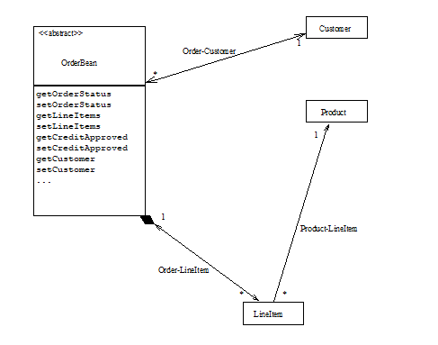
package com.acme.order;
OrderBean, the
bean. OrderEJB has
entity beans
interfaces.
import java.util.Collection;
import java.util.Vector;
import java.util.Date;
import javax.naming.*;
public abstract class OrderBean implements javax.ejb.EntityBean \{
private javax.ejb.EntityContext context;
// define status codes for processing
static final int BACKORDER = 1;
static final int SHIPPED = 2;
static final int UNSHIPPED = 3;
// get and set methods for the cmp fields
public abstract int getOrderStatus();
public abstract void setOrderStatus(int orderStatus);
public abstract boolean getCreditApproved();
public abstract void setCreditApproved(boolean creditapproved);
public abstract Date getOrderDate();
public abstract void setOrderDate(Date orderDate);
// get and set methods for the relationship fields
public abstract Collection getLineItems();
public abstract void setLineItems(Collection lineitems);
public abstract Customer getCustomer();
public abstract void setCustomer(Customer customer);
// business methods.
// addLineItem:
// This method is used to add a line item.
// It creates the lineitem object and adds it to the
// persistent managed relationship.
public void addLineItem(Product product,
int quantity,
Address address)
throws InsufficientInfoException
\{
// create a new line item
if (validAddress(address)) \{
// Address is a legacy class. It is a dependent value
// class that is available both in the client and in
// the entity bean, and is serializable.
// We will use the address as the value of a cmp field
// of lineItem.
try \{
Context ic = new InitialContext();
LineItemLocalHome litemLocalHome =
(LineItemLocalHome)ic.lookup("LineItemEJB");
LineItem litem = litemLocalHome.create();
litem.setProduct(product);
litem.setQuantity(quantity);
litem.setTax(calculateTax(product.getPrice(),
quantity,
address));
litem.setStatus(UNSHIPPED);
// set the address for the line item to be shipped
litem.setAddress(address);
// The lineItem entity bean uses a dependent value
// class to represent the dates for the order status.
// This class holds shipment date, expected shipment
// date, credit approval date, and inventory
// dates which are internal to the order fullfillment
// process. Not all this information will be available
// to the client.
Dates dates = new Dates();
litem.setDates(dates);
getLineItems().add(litem);
} catch (Exception someexception) \{}
} else \{
throw new InsufficientInfoException();
}
}
// getOrderLineItems:
// This method makes a view of the lineitems that are in this
// order available in the client. It makes only the relevant
// information visible to the client and hides the internal
// details of the representation of the lineitem
public Collection getOrderLineItems() \{
Vector clientlineitems = new Vector();
Collection lineitems = getLineItems();
java.util.Iterator iterator = lineitems.iterator();
// ClientLineItem is a value class that is used in
// the client view.
// The entity Bean Provider abstracts from the persistent
// representation of the line item to construct the client
// view.
ClientLineItem clitem;
while (iterator.hasNext()) \{
LineItem litem = (LineItem)iterator.next();
clitem = new ClientLineItem();
// only the name of the product is available in the
// client view
clitem.setProductName(litem.getProduct().getName());
clitem.setQuantity(litem.getQuantity());
// the client view gets a specific descriptive message
// depending on the line item status.
clitem.setCurrentStatus(
statusCodeToString(litem.getStatus()));
// address is not copied to the client view.
// as this class includes other information with
// respect to the order handing that should not be
// available to the client. Only the relevant info
// is copied.
int lineitemStatus = litem.getStatus();
if ( lineitemStatus == BACKORDER) \{
clitem.setShipDate(
litem.getDates().getExpectedShipDate());
} else if (lineitemStatus == SHIPPED) \{
clitem.setShipDate(
litem.getDates().getShippedDate());
}
//add the new line item
clientlineitems.add(clitem);
}
// return the value objects to the client
return clientlineitems;
}
// other methods internal to the entity bean class
...
// other javax.ejb.EntityBean methods
...
}
4.28. The Bean Provider’s View of the Deployment Descriptor
The persistent fields (cmp-fields) and relationships (cmr-fields) of an entity bean must be declared in the deployment descriptor.
The deployment descriptor provides the following information about the abstract persistence schemas of entity beans and their container-managed relationships:
An ejb-name element for each entity bean. The ejb-name must be a valid Java identifier and must be unique within the ejb-name elements of the ejb-jar file.
An abstract-schema-name element for each entity bean. The abstract-schema-name must be a valid Java identifier and must be unique within the abstract-schema-name elements of the ejb-jar file. The abstract-schema-name element is used in the specification of EJB QL queries.
A set of ejb-relation elements, each of which contains a pair of ejb-relationship-role elements to describe the two roles in the relationship.5
Each ejb-relationship-role element describes a relationship role: its name, its multiplicity within a relation, and its navigability. It specifies the name of the cmr-field that is used from the perspective of the relationship participant. The cmr-field-type element must be specified if the type of the cmr-field is java.util.Collection or java.util.Set . Each relationship role refers to an entity bean by means of an ejb-name element contained in the relationship-role-source element.
The following example shows a deployment descriptor segment that defines the abstract persistence schema for a set of related entity beans. The deployment descriptor elements for container-managed persistence and relationships are described further in Chapter See Deployment Descriptor.
<ejb-jar>
…
<enterprise-beans>
…
</enterprise-beans>
<relationships>
<!--
ONE-TO-MANY: Order LineItem
-→
<ejb-relation>
<ejb-relation-name>Order-LineItem</ejb-relation-name>
<ejb-relationship-role>
<ejb-relationship-role-name>
order-has-lineitems
</ejb-relationship-role-name>
<multiplicity>One</multiplicity>
<relationship-role-source>
<ejb-name>OrderEJB</ejb-name>
</relationship-role-source>
<cmr-field>
<cmr-field-name>lineItems</cmr-field-name>
<cmr-field-type>java.util.Collection
</cmr-field-type>
</cmr-field>
</ejb-relationship-role>
<ejb-relationship-role>
<ejb-relationship-role-name>lineitem-belongsto-order
</ejb-relationship-role-name>
<multiplicity>Many</multiplicity>
<cascade-delete/>
<relationship-role-source>
<ejb-name>LineItemEJB</ejb-name>
</relationship-role-source>
<cmr-field>
<cmr-field-name>order</cmr-field-name>
</cmr-field>
</ejb-relationship-role>
</ejb-relation>
<!--
ONE-TO-MANY unidirectional relationship:
Product is not aware of its relationship with LineItem
-→
<ejb-relation>
<ejb-relation-name>Product-LineItem</ejb-relation-name>
<ejb-relationship-role>
<ejb-relationship-role-name>
product-has-lineitems
</ejb-relationship-role-name>
<multiplicity>One</multiplicity>
<relationship-role-source>
<ejb-name>ProductEJB</ejb-name>
</relationship-role-source>
<!-- since Product does not know about LineItem
there is no cmr field in Product for accessing
Lineitem
-->
</ejb-relationship-role>
<ejb-relationship-role>
<ejb-relationship-role-name>
lineitem-for-product
</ejb-relationship-role-name>
<multiplicity>Many</multiplicity>
<relationship-role-source>
<ejb-name>LineItemEJB</ejb-name>
</relationship-role-source>
<cmr-field>
<cmr-field-name>product</cmr-field-name>
</cmr-field>
</ejb-relationship-role>
</ejb-relation>
<!--
ONE-TO-MANY: Order Customer:
-→
<ejb-relation>
<ejb-relation-name>Order-Customer</ejb-relation-name>
<ejb-relationship-role>
<ejb-relationship-role-name>
customer-has-orders
</ejb-relationship-role-name>
<multiplicity>One</multiplicity>
<relationship-role-source>
<ejb-name>CustomerEJB</ejb-name>
</relationship-role-source>
<cmr-field>
<cmr-field-name>orders</cmr-field-name>
<cmr-field-type>java.util.Collection
</cmr-field-type>
</cmr-field>
</ejb-relationship-role>
<ejb-relationship-role>
<ejb-relationship-role-name>
order-belongsto-customer
</ejb-relationship-role-name>
<multiplicity>Many</multiplicity>
<relationship-role-source>
<ejb-name>OrderEJB</ejb-name>
</relationship-role-source>
<cmr-field>
<cmr-field-name>customer</cmr-field-name>
</cmr-field>
</ejb-relationship-role>
</ejb-relation>
</relationships>
…
</ejb-jar>
4.29. The Entity Bean Component Contract
This section specifies the container-managed persistence contract between an entity bean and its container.
4.30. Runtime Execution Model of Entity Beans
This subsection describes the runtime model and the classes used in the description of the contract between an entity bean and its container. See Overview of the Entity Bean Runtime Execution Model shows an overview of the runtime model. The client of an entity bean may be a local client or it may be a remote client.
===
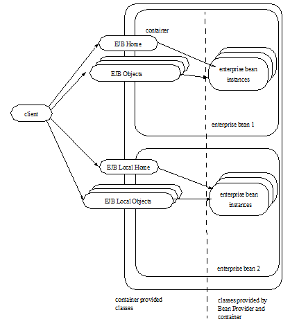
An enterprise bean is an object whose class is provided by the Bean Provider. The class of an entity bean with container-managed persistence is abstract. The concrete bean class is generated by the Container Provider’s tools at deployment time. The container is also responsible for providing the implementation of the java.util.Collection classes that are used in maintaining the container-managed relationships of the entity bean.
An entity EJBObject or EJBLocalObject is an object whose class was generated at deployment time by the Container Provider’s tools. A client never references an entity bean instance directly—a client always references an entity EJBObject or EJBLocalObject whose class is generated by the Container Provider’s tools. The entity EJBObject class implements an entity bean’s remote interface. The entity EJBLocalObject class implements an entity bean’s local interface. A related entity bean never references another entity bean instance directly—a related entity bean, like any other local client of an entity bean, always references an entity EJBLocalObject whose class is generated by the Container Provider’s tools.
An entity EJBHome or EJBLocalHome object provides life cycle operations (create, find, remove) for its entity objects as well as home business methods, which are business methods that are not specific to an entity bean instance. The class for the entity EJBHome or EJBLocalHome object is generated by the Container Provider’s tools at deployment time. The entity EJBHome or EJBLocalHome object implements the entity bean’s remote or local home interface that was defined by the Bean Provider.
4.31. Container Responsibilities
The following are the container responsibilities for the management of persistent state.
4.32. Container-Managed Fields
An entity bean with container-managed persistence relies on the container to perform persistent data access on behalf of the entity bean instances. The container transfers data between an entity bean instance and the underlying resource manager. The container also implements the creation, removal, and lookup of the entity object in the underlying database.
The container transfers data between the entity bean and the underlying data source as a result of the execution of the entity bean’s methods. Because of the requirement that all data access occur through the accessor methods, the container can implement both eager and lazy loading and storing schemes.
The container is responsible for implementing the entity bean class by providing the implementation of the get and set accessor methods for its abstract persistence schema. The container is allowed to use Java serialization to store the container-managed persistent fields (cmp-fields).
The container must also manage the mapping between primary keys and EJBLocalObjects or EJBObjects. If both a remote and a local interface are specified for the entity bean, the container must manage the mapping between EJBObjects and EJBLocalObjects.
Because the container is free to optimize the delivery of persistent data to the bean instance (for example, by the use of lazy loading strategies), the contents of the entity bean instance and the contents of container-managed collections may not be fully materialized.
4.33. Container-Managed Relationships
The container maintains the relationships among entity beans.
It is the responsibility of the container to maintain the referential integrity of the container-managed relationships, as described in See Semantics of Assignment for Relationships, in accordance with the semantics of the relationship type as specified in the deployment descriptor. For example, if an entity bean is added to a collection corresponding to the container-managed relationship field of another entity bean, the container-managed relationship field of the first entity bean must also be updated by the container in the same transaction context.
It is the responsibility of the container to throw the java.lang.IllegalArgumentException when the argument to a set method in a relationship is an instance of the wrong relationship type or a collection containing instances of the wrong type, or when an argument to a method of the java.util.Collection API used to manipulate a collection-valued container-managed relationship field is an instance of the wrong type or a collection that contains instances of the wrong type (see Section See Semantics of Assignment for Relationships).
It is the responsibility of the container to throw the java.lang.IllegalStateException when a method of the java.util.Collection API is used to access a collection-valued cmr-field within a transaction context other than the transaction context in which the cmr-field was initially materialized. For example, if the container-managed collection is returned as the result of a local interface method with transaction attribute RequiresNew , and the client attempts to access the collection, the container must throw the IllegalStateException .
It is the responsibility of the container to throw the java.lang.IllegalStateException when a java.util.Iterator is used to access a collection-valued cmr-field within a transaction context other than the transaction context in which the iterator was initially obtained.
4.34. Instance Life Cycle Contract Between the Bean and the Container
This section describes the part of the component contract between the entity bean and the container that relates to the management of the entity bean instance’s life cycle.
4.35. Instance Life Cycle
===
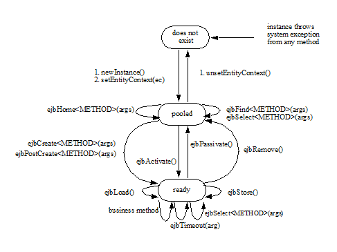
An entity bean instance is in one of the following three states:
It does not exist.
Pooled state. An instance in the pooled state is not associated with any particular entity object identity.
Ready state. An instance in the ready state is assigned an entity object identity.
The following steps describe the life cycle of an entity bean instance:
An entity bean instance’s life starts when the container creates the instance using newInstance. The container then invokes the setEntityContext method to pass the instance a reference to the EntityContext interface. The EntityContext interface allows the instance to invoke services provided by the container and to obtain the information about the caller of a client-invoked method.
The instance enters the pool of available instances. Each entity bean has its own pool. While the instance is in the available pool, the instance is not associated with any particular entity object identity. All instances in the pool are considered equivalent, and therefore any instance can be assigned by the container to any entity object identity at the transition to the ready state. While the instance is in the pooled state, the container may use the instance to execute any of the entity bean’s finder methods (shown as ejbFind<METHOD> in the diagram) or any of the entity bean’s home methods (shown ejbHome<METHOD> in the diagram). The instance does not move to the ready state during the execution of a finder or a home method. An ejbSelect<METHOD> method may be called by an entity bean’s home method while the instance is in the pooled state.
An instance transitions from the pooled state to the ready state when the container selects that instance to service a client call to an entity object or an ejbTimeout method. There are two possible transitions from the pooled to the ready state: through the ejbCreate<METHOD> and ejbPostCreate<METHOD> methods, or through the ejbActivate method. The container invokes the ejbCreate<METHOD> and ejbPostCreate<METHOD> methods when the instance is assigned to an entity object during entity object creation (i.e., when the client invokes a create method on the entity bean’s home object). The container invokes the ejbActivate method on an instance when an instance needs to be activated to service an invocation on an existing entity object—this occurs because there is no suitable instance in the ready state to service the client’s call or the ejbTimeout method.
When an entity bean instance is in the ready state, the instance is associated with a specific entity object identity. While the instance is in the ready state, the container can synchronize the state of the instance with the state of the entity in the underlying data source whenever it determines the need to, in the process invoking the ejbLoad and ejbStore methods zero or more times. A business method can be invoked on the instance zero or more times. The ejbTimeout method can be invoked on the instance zero or more times. Invocations of the ejbLoad and ejbStore methods can be arbitrarily mixed with invocations of business methods and ejbTimeout method invocations. An ejbSelect<METHOD> method can be called by a business method (or ejbLoad or ejbStore method or ejbTimeout method ) while the instance is in the ready state.
The container can choose to passivate an entity bean instance within a transaction. To passivate an instance, the container first invokes the ejbStore method to allow the instance to prepare itself for the synchronization of the database state with the instance’s state, and then the container invokes the ejbPassivate method to return the instance to the pooled state.
Eventually, the container will transition the instance to the pooled state. There are three possible transitions from the ready to the pooled state: through the ejbPassivate method, through the ejbRemove method, and because of a transaction rollback for ejbCreate , ejbPostCreate , or ejbRemove (not shown in See Life Cycle of an Entity Bean Instance.). The container invokes the ejbPassivate method when the container wants to disassociate the instance from the entity object identity without removing the entity object. The container invokes the ejbRemove method when the container is removing the entity object (i.e., when the client invoked the remove method on the entity object’s component interface or a remove method on the entity bean’s home interface). If ejbCreate , ejbPostCreate , or ejbRemove is called and the transaction rolls back, the container will transition the bean instance to the pooled state.
When the instance is put back into the pool, it is no longer associated with an entity object identity. The container can assign the instance to any entity object within the same entity bean home.
The container can remove an instance in the pool by calling the unsetEntityContext method on the instance.
Notes:
The EntityContext interface passed by the container to the instance in the setEntityContext method is an interface, not a class that contains static information. For example, the result of the EntityContext.getPrimaryKey method might be different each time an instance moves from the pooled state to the ready state, and the result of the getCallerPrincipal and isCallerInRole methods may be different in each business method.
A RuntimeException thrown from any method of an entity bean class (including the business methods and the callbacks invoked by the container) results in the transition to the “does not exist” state. The container must not invoke any method on the instance after a RuntimeException has been caught. From the caller’s perspective, the corresponding entity object continues to exist. The client can continue accessing the entity object through its component interface because the container can use a different entity bean instance to delegate the client’s requests. Exception handling is described further in Chapter See Exception Handling.
The container is not required to maintain a pool of instances in the pooled state. The pooling approach is an example of a possible implementation, but it is not the required implementation. Whether the container uses a pool or not has no bearing on the entity bean coding style.
4.36. Bean Provider’s Entity Bean Instance’s View
The following describes the entity bean instance’s view of the contract as seen by the Bean Provider:
The entity Bean Provider is responsible for implementing the following methods in the abstract entity bean class:
A public constructor that takes no arguments.
_public void setEntityContext(EntityContext ic)_ ;
A container uses this method to pass a reference to the EntityContext interface to the entity bean instance. If the entity bean instance needs to use the EntityContext interface during its lifetime, it must remember the EntityContext interface in an instance variable.
This method executes with an unspecified transaction context (Refer to EJB Core Contracts and Requirements document See EJB 3.2 Core Contracts and Subsection “Handling of Methods that Run with an unspecified transaction context” for how the container executes methods with an unspecified transaction context). An identity of an entity object is not available during this method. The entity bean must not attempt to access its persistent state and relationships using the accessor methods during this method.
The instance can take advantage of the setEntityContext() method to allocate any resources that are to be held by the instance for its lifetime. Such resources cannot be specific to an entity object identity because the instance might be reused during its lifetime to serve multiple entity object identities.
_public void unsetEntityContext();_
A container invokes this method before terminating the life of the instance.
This method executes with an unspecified transaction context. An identity of an entity object is not available during this method. The entity bean must not attempt to access its persistent state and relationships using the accessor methods during this method.
The instance can take advantage of the unsetEntityContext method to free any resources that are held by the instance. (These resources typically had been allocated by the setEntityContext method.)
_public PrimaryKeyClass ejbCreate<METHOD>(...)_ ;
There are zero6 or more ejbCreate<METHOD> methods, whose signatures match the signatures of the create<METHOD> methods of the entity bean’s home interface. The container invokes an ejbCreate<METHOD> method on an entity bean instance when a client invokes a matching create<METHOD> method on the entity bean’s home interface.
The entity Bean Provider’s responsibility is to initialize the instance in the ejbCreate<METHOD> methods from the input arguments, using the get and set accessor methods, such that when the ejbCreate<METHOD> method returns, the persistent representation of the instance can be created. The entity Bean Provider is guaranteed that the values that will be initially returned by the instance’s get methods for container-managed fields will be the Java language defaults (e.g. 0 for integer, null for pointers), except for collection-valued cmr-fields, which will have the empty collection (or set) as their value. The entity Bean Provider must not attempt to modify the values of cmr-fields in an ejbCreate<METHOD> method. This should be done in the ejbPostCreate<METHOD> method instead.
The entity object created by the ejbCreate<METHOD> method must have a unique primary key. This means that the primary key must be different from the primary keys of all the existing entity objects within the same home. However, it is legal to reuse the primary key of a previously removed entity object. The implementation of the Bean Provider’s ejbCreate<METHOD> methods should be coded to return a null.7
An ejbCreate<METHOD> method executes in the transaction context determined by the transaction attribute of the matching create<METHOD> method. The database insert operations are performed by the container within the same transaction context after the Bean Provider’s ejbCreate<METHOD> method completes.
_public void ejbPostCreate<METHOD>(...);_
For each ejbCreate<METHOD> method, there is a matching ejbPostCreate<METHOD> method that has the same input parameters but whose return type is void . The container invokes the matching ejbPostCreate<METHOD> method on an instance after it invokes the ejbCreate<METHOD> method with the same arguments. The instance can discover the primary key by calling getPrimaryKey on its entity context object.
The entity object identity is available during the ejbPostCreate<METHOD> method. The instance may, for example, obtain the component interface of the associated entity object and pass it to another enterprise bean as a method argument.
The entity Bean Provider may use the ejbPostCreate<METHOD> to set the values of cmr-fields to complete the initialization of the entity bean instance.
An ejbPostCreate<METHOD> method executes in the same transaction context as the previous ejbCreate<METHOD> method.
_public void ejbActivate();_
The container invokes this method on the instance when the container picks the instance from the pool and assigns it to a specific entity object identity. The ejbActivate method gives the entity bean instance the chance to acquire additional resources that it needs while it is in the ready state.
This method executes with an unspecified transaction context. The entity bean must not attempt to access its persistent state or relationships using the accessor methods during this method.
The instance can obtain the identity of the entity object via the getPrimaryKey, getEJBLocalObject , or getEJBObject method on the entity context. The instance can rely on the fact that the primary key and entity object identity will remain associated with the instance until the completion of ejbPassivate or ejbRemove.
_public void ejbPassivate()_ ; + The container invokes this method on an instance when the container decides to disassociate the instance from an entity object identity, and to put the instance back into the pool of available instances. The _ejbPassivate_ method gives the instance the chance to release any resources that should not be held while the instance is in the pool. (These resources typically had been allocated during the _ejbActivate_ method.)
This method executes with an unspecified transaction context. The entity bean must not attempt to access its persistent state or relationships using the accessor methods during this method.
The instance can still obtain the identity of the entity object via the getPrimaryKey, getEJBLocalObject , or getEJBObject method of the EntityContext interface.
_public void ejbRemove()_ ;
The container invokes the ejbRemove method on an entity bean instance in response to a client-invoked remove operation on the entity bean’s home or component interface or as the result of a cascade-delete operation. The instance is in the ready state when ejbRemove is invoked and it will be entered into the pool when the method completes.
The entity Bean Provider can use the ejbRemove method to implement any actions that must be done before the entity object’s persistent representation is removed.
The container synchronizes the instance’s state before it invokes the ejbRemove method. This means that the state of the instance at the beginning of the ejbRemove method is the same as it would be at the beginning of a business method.
This method and the database delete operation(s) execute in the transaction context determined by the transaction attribute of the remove method that triggered the ejbRemove method. The instance can still obtain the identity of the entity object via the getPrimaryKey, getEJBLocalObject, or getEJBObject method of the EntityContext interface.
After the entity Bean Provider’s ejbRemove returns, and in the same transaction context, the container removes the entity bean from all relationships in which it participates before removing the entity object’s persistent representation.
Since the instance will be entered into the pool, the state of the instance at the end of this method must be equivalent to the state of a passivated instance. This means that the instance must release any resource that it would normally release in the ejbPassivate method.
_public void ejbLoad()_ ;
When the container needs to synchronize the state of an enterprise bean instance with the entity object’s persistent state, the container calls the ejbLoad method.
The entity Bean Provider can assume that the instance’s persistent state has been loaded just before the ejbLoad method is invoked. It is the responsibility of the Bean Provider to use the ejbLoad method to recompute or initialize the values of any instance variables that depend on the entity bean’s persistent state. In general, any transient state that depends on the persistent state of an entity bean should be recalculated using the ejbLoad method. The entity bean can use the ejbLoad method, for instance, to perform some computation on the values returned by the accessor methods (for example, uncompressing text fields).
This method executes in the transaction context determined by the transaction attribute of the business method or ejbTimeout method that triggered the ejbLoad method.
_public void ejbStore();_
When the container needs to synchronize the state of the entity object’s persistent state with the state of the enterprise bean instance, the container first calls the ejbStore method on the instance.
The entity Bean Provider should use the ejbStore method to update the instance using the accessor methods before its persistent state is synchronized. For example, the ejbStore method may perform compression of text before the text is stored in the database.
The Bean Provider can assume that after the ejbStore method returns, the persistent state of the instance is synchronized.
This method executes in the same transaction context as the previous ejbLoad or ejbCreate method invoked on the instance. All business methods or the ejbTimeout method invoked between the previous ejbLoad or ejbCreate <METHOD> method and this ejbStore method are also invoked in the same transaction context.
public <primary key type or collection> ejbFind<METHOD>(…);
The Bean Provider of an entity bean with container-managed persistence does not write the finder (ejbFind<METHOD>) methods.
The finder methods are generated at the entity bean deployment time using the Container Provider’s tools. The syntax for the Bean Provider’s specification of finder methods is described in the See EJB QL: EJB 2.1 Query Language for Container-Managed Persistence Query Methods.
public <type> ejbHome<METHOD>(…);
The container invokes this method on the instance when the container selects the instance to execute a matching client-invoked <METHOD> home method. The instance is in the pooled state (i.e., it is not assigned to any particular entity object identity) when the container selects the instance to execute the ejbHome<METHOD> method on it, and it is returned to the pooled state when the execution of the ejbHome<METHOD> method completes.
The ejbHome<METHOD> method executes in the transaction context determined by the transaction attribute of the matching <METHOD> home method, as described in EJB Core Contracts and Requirements document See EJB 3.2 Core Subsection “Container-Managed Transaction Demarcation for Business Methods”.
The entity Bean Provider provides the implementation of the ejbHome<METHOD> method. The entity bean must not attempt to access its persistent state or relationships using the accessor methods during this method because a home method is not specific to a particular bean instance.
public abstract <type> e jbSelect<METHOD>(…);
The Bean Provider may provide zero or more select methods. A select method is a query method that is not directly exposed to the client in the home or component interface. The Bean Provider typically calls a select method within a business method.
The Bean Provider defines the select methods as abstract methods.
The select methods are generated at the entity bean deployment time using the Container Provider’s tools.
The syntax for the specification of select methods is described in See EJB QL: EJB 2.1 Query Language for Container-Managed Persistence Query Methods.
The ejbSelect<METHOD> method executes in the transaction context determined by the transaction attribute of the invoking business method.
_public void ejbTimeout(...);_
The container invokes the ejbTimeout method on an instance when a timer for the instance has expired. The ejbTimeout method notifies the instance of the time-based event and allows the instance to execute the business logic to handle it.
The ejbTimeout method executes in the transaction context determined by its transaction attribute.
4.37. Container’s View
This subsection describes the container’s view of the state management contract. The container must call the following methods:
_public void setEntityContext(ec)_ ;
The container invokes this method to pass a reference to the EntityContext interface to the entity bean instance. The container must invoke this method after it creates the instance, and before it puts the instance into the pool of available instances.
The container invokes this method with an unspecified transaction context. At this point, the EntityContext is not associated with any entity object identity.
_public void unsetEntityContext()_ ;
The container invokes this method when the container wants to reduce the number of instances in the pool. After this method completes, the container must not reuse this instance.
The container invokes this method with an unspecified transaction context.
_public_ _PrimaryKeyClass_ _ejbCreate<METHOD>(...)_ ; + _public void ejbPostCreate<METHOD>(...)_ ;
The container invokes these two methods during the creation of an entity object as a result of a client invoking a create<METHOD> method on the entity bean’s home interface.
The container invokes the ejbCreate<METHOD> method whose signature matches the create<METHOD> method invoked by the client.
Prior to invoking the ejbCreate<METHOD> method provided by the Bean Provider, the container must ensure that the values that will be initially returned by the instance’s get methods for container-managed fields will be the Java language defaults (e.g. 0 for integer, null for pointers), except for collection-valued cmr-fields, which must have the empty collection (or set) as their value.
The container is responsible for calling the ejbCreate<METHOD> method, for obtaining the primary key fields of the newly created entity object persistent representation, and for creating an entity EJBObject reference and/or EJBLocalObject reference for the newly created entity object. The container must establish the primary key before it invokes the ejbPostCreate<METHOD> method.
The entity object created by the ejbCreate<METHOD> method must have a unique primary key. This means that the primary key must be different from the primary keys of all the existing entity objects within the same home. However, it is legal to reuse the primary key of a previously removed entity object. The container may, but is not required to, throw the DuplicateKeyException on the Bean Provider’s attempt to create an entity object with a duplicate primary key8.
The container may create the representation of the entity in the database immediately, or it can defer it to a later time (for example to the time after the matching ejbPostCreate<METHOD> has been called, or to the end of the transaction), depending on the caching strategy that it uses.
The container then invokes the matching ejbPostCreate<METHOD> method with the same arguments on the instance to allow the instance to fully initialize itself. The instance can discover the primary key by calling the getPrimaryKey method on its entity context object.
Finally, the container returns the entity object’s remote interface (i.e., a reference to the entity EJBObject) to the client if the client is a remote client or the entity object’s local interface (i.e., a reference to the entity EJBLocalObject) if the client is a local client.
The container must invoke the ejbCreate <METHOD> and ejbPostCreate <METHOD> methods and create the representation of the persistent instance in the database in the transaction context determined by the transaction attribute of the matching create<METHOD> method, as described in EJB Core Contracts and Requirements document See EJB 3.2 Core Subsection “Container-Managed Transaction Demarcation for Business Methods”.
_public void ejbActivate()_ ;
The container invokes this method on an entity bean instance at activation time (i.e., when the instance is taken from the pool and assigned to an entity object identity). The container must ensure that the primary key of the associated entity object is available to the instance if the instance invokes the getPrimaryKey, getEJBLocalObject , or getEJBObject method on its EntityContext interface.
The container invokes this method with an unspecified transaction context.
Note that instance is not yet ready for the delivery of a business method. The container must still invoke the ejbLoad method prior to a business method.
_public void ejbPassivate()_ ;
The container invokes this method on an entity bean instance at passivation time (i.e., when the instance is being disassociated from an entity object identity and moved into the pool). The container must ensure that the identity of the associated entity object is still available to the instance if the instance invokes the getPrimaryKey, getEJBLocalObject , or getEJBObject method on its entity context.
The container invokes this method with an unspecified transaction context.
Note that if the instance state has been updated by a transaction, the container must first invoke the ejbStore method on the instance before it invokes ejbPassivate on it.
_public void ejbRemove();_
The container invokes the ejbRemove method in response to a client-invoked remove operation on the entity bean’s home or component interface or as the result of a cascade-delete operation. The instance is in the ready state when ejbRemove is invoked and it will be entered into the pool when the method completes.
The container synchronizes the instance’s state before it invokes the ejbRemove method. This means that the persistent state of the instance at the beginning of the ejbRemove method is the same as it would be at the beginning of a business method (i.e., if the instance is not already synchronized from the state in the database, the container must invoke ejbLoad before it invokes ejbRemove ).
The container must ensure that the identity of the associated entity object is still available to the instance in the ejbRemove method (i.e., the instance can invoke the getPrimaryKey, getEJBLocalObject , or getEJBObject method on its EntityContext in the ejbRemove method).
After the entity Bean Provider’s ejbRemove method returns, and in the same transaction context, the container removes the entity bean instance from all relationships in which it participates and then removes the entity object’s persistent representation.
The container may delete the representation of the entity in the database immediately, or it can defer it to a later time (for example to the end of the transaction), depending on the caching strategy that it uses.
The container must ensure that the ejbRemove method and database delete operations are performed in the transaction context determined by the transaction attribute of the invoked remove method, as described in EJB Core Contracts and Requirements document See EJB 3.2 Core Contracts and Requirements. Subsection “Container-Managed Transaction Demarcation for Business Methods”.
_public void ejbLoad()_ ;
When the container needs to synchronize the state of an enterprise bean instance with the entity object’s state in the database, the container calls the ejbLoad method. Depending on its caching strategy, the container may first read the entity object’s state from the database, before invoking the ejbLoad method, or it may use a lazy loading strategy in making this state visible to the instance.
The exact times that the container invokes ejbLoad depend on the configuration of the component and the container, and are not defined by the EJB architecture. Typically, the container will call ejbLoad before the first business method within a transaction or before invoking the ejbTimeout method on an instance.
The container must invoke this method in the transaction context determined by the transaction attribute of the business method or ejbTimeout method that triggered the ejbLoad method.
_public void ejbStore()_ ;
When the container needs to synchronize the state of the entity object in the database with the state of the enterprise bean instance, the container calls the ejbStore method on the instance. This synchronization always happens at the end of a transaction, unless the bean is specified as read-only (see section See Read-only Entity Beans). However, the container may also invoke this method when it passivates the instance in the middle of a transaction, or when it needs to transfer the most recent state of the entity object to another instance for the same entity object in the same transaction.
The container must invoke this method in the same transaction context as the previous ejbLoad, ejbCreate <METHOD> , or ejbTimeout method invoked on the instance. All business methods or the ejbTimeout method invoked between the previous ejbLoad or ejbCreate <METHOD> method and this ejbStore method are also invoked in the same transaction context.
After the ejbStore method returns, the container may store the persistent state of the instance to the database, depending on its caching strategy. If the container uses a lazy storing caching strategy, it is the container’s responsibility to write the representation of the persistent object to the database in the same transaction context as that of the ejbStore method.
public <primary key type or collection> ejbFind<METHOD>(…);
The implementation of the ejbFind<METHOD> method is supplied by the container.
The container invokes the ejbFind<METHOD> method on an instance when a client invokes a matching find<METHOD> method on the entity bean’s home interface. The container must pick an instance that is in the pooled state (i.e., the instance is not associated with any entity object identity) for the execution of the ejbFind<METHOD> method. If there is no instance in the pooled state, the container creates one and calls the setEntityContext method on the instance before dispatching the finder method.
The container must invoke the ejbFind<METHOD> method in the transaction context determined by the transaction attribute of the matching find method, as described in EJB Core Contracts and Requirements document See EJB Subsection “Container-Managed Transaction Demarcation for Business Methods”.
The container is responsible for ensuring that updates to the states of all entity beans in the same transaction context as the ejbFind<METHOD> method and whose abstract schema types are accessed in the method’s EJB QL query are visible in the results of the ejbFind<METHOD> method. Before invoking the ejbFind<METHOD> method, the container must first synchronize the state of those entity bean instances by invoking the ejbStore method on them. This requirement does not apply to the ejbFindByPrimaryKey method. The results of the ejbFindByPrimaryKey method, however, must reflect the entities that have been created or removed within the same transaction context.
After the ejbFind<METHOD> method completes, the instance remains in the pooled state. The container may, but is not required to, immediately activate the objects that were located by the finder using the transition through the ejbActivate method.
If the ejbFind<METHOD> method is declared to return a single primary key, the container creates an entity EJBObject (EJBLocalObject) reference for the primary key and returns it to the client (local client). If the ejbFind<METHOD> method is declared to return a collection of primary keys, the container creates a collection of entity EJBObject (EJBLocalObject) references for the primary keys returned from the ejbFind<METHOD> method, and returns the collection to the client (local client).
The implementations of the finder methods are generated at the entity bean deployment time using the Container Provider’s tools.
public <type> ejbSelect<METHOD>(…);
A select method is a query method that is not directly exposed to the client in the home or component interface. The Bean Provider typically calls a select method within a business method or home method.
A select method executes in the transaction context determined by the transaction attribute of the invoking business method.
The container is responsible for ensuring that all updates to the states of all entity beans in the same transaction context as the ejbSelect<METHOD> method and whose abstract schema types are accessed in the EJB QL query for the ejbSelect<METHOD> method are visible in the results of the ejbSelect<METHOD> method by invoking the ejbStore method on those entity bean instances.
The implementations of the select methods are generated at the entity bean deployment time using the Container Provider’s tools.
public <type> ejbHome<METHOD>(…);
The container invokes the ejbHome<METHOD> method on an instance when a client invokes a matching <METHOD> home method on the entity bean’s home interface. The container must pick an instance that is in the pooled state (i.e., the instance is not associated with any entity object identity) for the execution of the ejbHome<METHOD> method. If there is no instance in the pooled state, the container creates one and calls the setEntityContext method on the instance before dispatching the home method.
After the ejbHome<METHOD> method completes, the instance remains in the pooled state.
The container must invoke the ejbHome<METHOD> method in the transaction context determined by the transaction attribute of the matching <METHOD> home method, as described in EJB Core Contracts and Requirements document See EJB Subsection “Container-Managed Transaction Demarcation for Business Methods”.
_public void ejbTimeout(...);_
The container invokes the ejbTimeout method on the instance when a timer with which the entity has been registered expires. If there is no suitable instance in the ready state, the container must activate an instance, invoking the ejbActivate method and transitioning it to the ready state.
The container invokes the ejbTimeout method in the context of a transaction determined by its transaction attribute.
4.38. Read-only Entity Beans
Compliant implementations of this specification may optionally support read-only entity beans. A read-only entity bean is an entity bean whose instances are not intended to be updated and/or created by the application. Read-only beans are best suited for situations where the underlying data never changes or changes infrequently.
Containers that support read-only beans do not call the ejbStore method on them. The ejbLoad method should typically be called by the container when the state of the bean instance is initially loaded from the database, or at designated refresh intervals.9
If a read-only bean is used, the state of such a bean should not be updated by the application, and the behavior is unspecified if this occurs.10
Read-only beans are designated by vendor-specific means that are outside the scope of this specification, and their use is therefore not portable.
4.39. The EntityContext Interface
A container provides the entity bean instances with an EntityContext , which gives the entity bean instance access to the instance’s context maintained by the container. The EntityContext interface has the following methods:
The getEJBObject method returns the entity bean’s remote interface.
The getEJBHome method returns the entity bean’s remote home interface.
The getEJBLocalObject method returns the entity bean’s local interface.
The getEJBLocalHome method returns the entity bean’s local home interface.
The getCallerPrincipal method returns the java.security.Principal that identifies the invoker.
The isCallerInRole method tests if the entity bean instance’s caller has a particular role.
The setRollbackOnly method allows the instance to mark the current transaction such that the only outcome of the transaction is a rollback.
The getRollbackOnly method allows the instance to test if the current transaction has been marked for rollback.
The getPrimaryKey method returns the entity bean’s primary key.
The getTimerService method returns the javax.ejb.TimerService interface.
The getUserTransaction method returns the javax.transaction.UserTransaction interface. Entity bean instances must not call this method.
The lookup method enables the entity bean to look up its environment entries in the JNDI naming context.
4.40. Operations Allowed in the Methods of the Entity Bean Class
Table See Operations Allowed in the Methods of an Entity Bean defines the methods of an entity bean class in which the enterprise bean instances can access the methods of the javax.ejb.EntityContext interface, the java:comp/env environment naming context, resource managers, TimerService and Timer methods, the EntityManager and EntityManagerFactory methods, and other enterprise beans.
If an entity bean instance attempts to invoke a method of the EntityContext interface, and the access is not allowed in Table See Operations Allowed in the Methods of an Entity Bean, the container must throw the java.lang.IllegalStateException.
If a entity bean instance attempts to invoke a method of the TimerService or Timer interface and the access is not allowed in Table See Operations Allowed in the Methods of an Entity Bean, the container must throw the java.lang.IllegalStateException.
If an entity bean instance attempts to access a resource manager, an enterprise bean, an entity manager or entity manager factory, and the access is not allowed in Table See Operations Allowed in the Methods of an Entity Bean, the behavior is undefined by the EJB architecture.
===
Bean method
Bean method can perform the following operations
constructor
-
setEntityContext
unsetEntityContext
EntityContext methods: getEJBHome, getEJBLocalHome, lookup
JNDI access to java:comp/env
ejbCreate
EntityContext methods: getEJBHome, getEJBLocalHome, getCallerPrincipal, getRollbackOnly, isCallerInRole, setRollbackOnly, getTimerService, lookup
JNDI access to java:comp/env
Resource manager access
Enterprise bean access
EntityManagerFactory access
EntityManager access
ejbPostCreate
EntityContext methods: getEJBHome, getEJBLocalHome, getCallerPrincipal, getRollbackOnly, isCallerInRole, setRollbackOnly, getEJBObject , getEJBLocalObject, getPrimaryKey, getTimerService, lookup
JNDI access to java:comp/env
Resource manager access
Enterprise bean access
Timer service or Timer methods
EntityManagerFactory access
EntityManager access
ejbRemove
EntityContext methods: getEJBHome, getEJBLocalHome, getCallerPrincipal, getRollbackOnly, isCallerInRole, setRollbackOnly, getEJBObject , getEJBLocalObject , getPrimaryKey, getTimerService, lookup
JNDI access to java:comp/env
Resource manager access
Enterprise bean access
Timer service or Timer methods
EntityManagerFactory access
EntityManager access
ejbHome
EntityContext methods: getEJBHome, getEJBLocalHome, getCallerPrincipal, getRollbackOnly, isCallerInRole, setRollbackOnly, getTimerService, lookup
JNDI access to java:comp/env
Resource manager access
Enterprise bean access
EntityManagerFactory access
EntityManager access
ejbActivate
ejbPassivate
EntityContext methods: getEJBHome, getEJBLocalHome, getEJBObject, getEJBLocalObject, getPrimaryKey, getTimerService, lookup
JNDI access to java:comp/env
ejbLoad
ejbStore
EntityContext methods: getEJBHome, getEJBLocalHome, getCallerPrincipal, getRollbackOnly, isCallerInRole, setRollbackOnly, getEJBObject, getEJBLocalObject, getPrimaryKey, getTimerService, lookup
JNDI access to java:comp/env
Resource manager access
Enterprise bean access
Timer service or Timer methods
EntityManagerFactory access
EntityManager access
business method
from component interface
EntityContext methods: getEJBHome, getEJBLocalHome, getCallerPrincipal, getRollbackOnly, isCallerInRole, setRollbackOnly, getEJBObject, getEJBLocalObject, getPrimaryKey, getTimerService, lookup
JNDI access to java:comp/env
Resource manager access
Enterprise bean access
Timer service or Timer methods
EntityManagerFactory access
EntityManager access
ejbTimeout
EntityContext methods: getEJBHome, getEJBLocalHome, getRollbackOnly, setRollbackOnly, getCallerPrincipal, isCallerInRole, getEJBObject, getEJBLocalObject, getPrimaryKey, getTimerService, lookup
JNDI access to java:comp/env
Resource manager access
Enterprise bean access
Timer service or Timer methods
EntityManagerFactory access
EntityManager access
Additional restrictions:
The getRollbackOnly and setRollbackOnly methods of the EntityContext interface should be used only in the enterprise bean methods that execute in the context of a transaction. The container must throw the java.lang.IllegalStateException if the methods are invoked while the instance is not associated with a transaction.
Reasons for disallowing operations:
Invoking the getEJBObject, getEJBLocalObject , and getPrimaryKey methods is disallowed in the entity bean methods in which there is no entity object identity associated with the instance.
Invoking the getEJBObject and getEJBHome methods is disallowed if the entity bean does not define a remote client view.
Invoking the getEJBLocalObject and getEJBLocalHome methods is disallowed if the entity bean does not define a local client view.
Invoking the getRollbackOnly and setRollbackOnly methods is disallowed in the entity bean methods for which the container does not have a meaningful transaction context.
Accessing resource managers and enterprise beans, including accessing the persistent state of an entity bean instance, is disallowed in the entity bean methods for which the container does not have a meaningful transaction context or client security context.
4.41. Finder Methods
An entity bean’s home interface defines one or more finder methods11, one for each way to find an entity object or collection of entity objects within the home. The name of each finder method starts with the prefix “ find ”, such as findLargeAccounts . The arguments of a finder method are used in the implementation of the query for the finder method to locate the requested entity objects.
Every finder method except findByPrimaryKey(key) must be associated with a query element in the deployment descriptor. The entity Bean Provider declaratively specifies the EJB QL finder query and associates it with the finder method in the deployment descriptor. A finder method is normally characterized by an EJB QL query string specified in the query element. EJB QL is described in Chapter See EJB QL: EJB 2.1 Query Language for Container-Managed Persistence Query Methods. A compliant implementation of this specification is required to support EJB QL as defined in Chapter See EJB QL: EJB 2.1 Query Language for Container-Managed Persistence Query Methods for use with finder methods.
In the case that both the remote home interface and local home interface define a finder method with the same name and argument types, the EJB QL query string specified by the query element defines the semantics of both methods.
4.42. Single-Object Finder Methods
Some finder methods (such as findByPrimaryKey) are designed to return at most one entity object. For single-object finders, the result type of a find<METHOD>method defined in the entity bean’s remote home interface is the entity bean’s remote interface, and the result type of the find<METHOD>method defined in the entity bean’s local home interface is the entity bean’s local interface.
The following code illustrates the definition of a single-object finder defined on the remote home interface.
public interface AccountHome extends javax.ejb.EJBHome \{
...
Account findByPrimaryKey(AccountPrimaryKey primkey)
throws FinderException, RemoteException;
...
}
Note that a finder method defined on the local home interface must not throw the RemoteException .
In general, when defining a single-object finder method other than findByPrimaryKey , the entity Bean Provider should be sure that the finder method will always return only a single entity object. This may occur, for example, if the EJB QL query string that is used to specify the finder query includes an equality test on the entity bean’s primary key fields. If the entity Bean Provider uses an unknown primary key class (see See Special Case: Unknown Primary Key Class), the Bean Provider will typically define the finder method as a multi-object finder.
Note that a single-object finder method may return a null value. If the result set of the query consists of a single null value, the container must return the null value as the result of the method. If the result set of a query for a single-object finder method contains more than one value (whether non-null, null, or a combination), the container must throw the FinderException from the finder method. If the result set of the query contains no values, the container must throw the ObjectNotFoundException .
4.43. Multi-Object Finder Methods
Some finder methods are designed to return multiple entity objects. For multi-object finders defined on the entity bean’s local home interface, the result type of the find<METHOD>method is a collection of objects implementing the entity bean’s local interface. For multi-object finders defined on the entity bean’s remote home interface, the result type of the find<METHOD>method is a collection of objects implementing the entity bean’s remote interface.
The Bean Provider uses the Java™ 2 java.util.Collection interface to define a collection type for the result type of a finder method for an entity bean with container-managed persistence.
The collection of values returned by the container may contain duplicates if DISTINCT is not specified in the SELECT clause of the query for the finder method.
The collection of values returned by the container may contain null values if the finder method returns the values of a cmr-field and null values are not eliminated by the query.
A portable client program must use the PortableRemoteObject.narrow method to convert the objects contained in the collections returned by a finder method on the entity bean’s remote home interface to the entity bean’s remote interface type.
The following is an example of a multi-object finder method defined on the remote home interface:
public interface AccountHome extends javax.ejb.EJBHome \{
...
java.util.Collection findLargeAccounts(double limit)
throws FinderException, RemoteException;
...
}
Note that if this finder method were defined on the local home interface, it would not throw the RemoteException .
4.44. Select Methods
Select methods are query methods for use by the Bean Provider within an entity bean instance. Unlike finder methods, select methods are not specified in the entity bean’s home interface. A select method is an abstract method defined by the Bean Provider on an entity bean class. A select method must not be exposed in the home or component interface of an entity bean.
The semantics of a select method, like those of a finder method, are defined by an EJB QL query string. A select method is similar to a finder method, but unlike a finder method, but it can return values that correspond to any cmp- or cmr-field type.
Every select method must be associated with a query element in the deployment descriptor. The entity Bean Provider declaratively specifies the EJB QL query and associates it with the select method in the deployment descriptor. A select method is normally characterized by an EJB QL query string specified in the query element. EJB QL is described in Chapter See EJB QL: EJB 2.1 Query Language for Container-Managed Persistence Query Methods. A compliant implementation of this specification is required to support EJB QL as defined in Chapter See EJB QL: EJB 2.1 Query Language for Container-Managed Persistence Query Methods for use with select methods.
Typically an ejbSelect<METHOD>method that returns entity objects returns these as EJBLocalObjects. If the ejbSelect<METHOD>method returns an EJBObject or collection of EJBObjects, the Bean Provider must specify the value of the result-type-mapping element in the query deployment descriptor element for the select method as Remote .
An ejbSelect<METHOD> is not based on the identity of the entity bean instance on which it is invoked. However, the Bean Provider can use the primary key of an entity bean as an argument to an ejbSelect<METHOD> to define a query that is logically scoped to a particular entity bean instance.
The following table illustrates the semantics of finder and select methods.
===
Comparison of Finder and Select Methods
| Finder methods | Select methods | |
|---|---|---|
method |
find<METHOD> |
ejbSelect<METHOD> |
visibility |
exposed to client |
internal to entity bean class |
instance |
arbitrary bean instance in pooled state |
instance: current instance (could be bean instance in pooled state or ready state) |
return value |
EJBObjects or EJBLocalObjects of the same type as the entity bean |
EJBObjects, EJBLocalObjects, or cmp-field types |
4.45. Single-Object Select Methods
Some select methods are designed to return at most one value. In general, when defining a single-object select method, the entity Bean Provider must be sure that the select method will always return only a single object or value. If the query specified by the select method returns multiple values of the designated type, the container must throw the FinderException.
Note that a single-object select method may return a null value. If the result set of the query consists of a single null value, the container must return the null value as the result of the method. If the result set of a query for a single-object select method contains more than one value (whether non-null, null, or a combination), the container must throw the FinderException from the select method. If the result set of the query contains no values, the contain must throw the ObjectNotFoundException .
The Bean Provider will typically define a select method as a multi-object select method.
4.46. Multi-Object Select Methods
Some select methods are designed to return multiple values. For these multi-object select methods, the result type of the ejbSelect<METHOD>method is a collection of objects.
The Bean Provider uses the Java™ 2 java.util.Collection interface or java.util.Set interface to define a collection type for the result type of a select method. The type of the elements of the collection is determined by the type of the SELECT clause of the corresponding EJB QL query. If the Bean Provider uses the java.util.Collection interface, the collection of values returned by the container may contain duplicates if DISTINCT is not specified in the SELECT clause of the query. If a query for a select method whose result type is java.util.Set does not specify DISTINCT in its SELECT clause, the container must interpret the query as if SELECT DISTINCT had been specified.
The collection of values returned by the container may contain null values if the select method returns the values of a cmr-field or cmp-field and null values are not eliminated by the query.
The following is an example of a multi-object select method definition in the OrderBean class:
public abstract class OrderBean implements javax.ejb.EntityBean\{
...
public abstract java.util.Collection
ejbSelectAllOrderedProducts(Customer customer)
throws FinderException;
// internal finder method to find all products ordered
4.47. Timer Notifications
An entity bean can be registered with the EJB timer service for time-based event notifications if it implements the javax.ejb.TimedObject interface. The container invokes the bean instance’s ejbTimeout method when a timer for the bean has expired. See See Timer Service.
4.48. Standard Application Exceptions for Entities
The EJB specification defines the following standard application exceptions:
javax.ejb.CreateException
javax.ejb.DuplicateKeyException
javax.ejb.FinderException
javax.ejb.ObjectNotFoundException
javax.ejb.RemoveException
This section describes the use of these exceptions by entity beans with container-managed persistence.
4.49. CreateException
From the client’s perspective, a CreateException (or a subclass of CreateException) indicates that an application level error occurred during a create<METHOD> operation. If a client receives this exception, the client does not know, in general, whether the entity object was created but not fully initialized, or not created at all. Also, the client does not know whether or not the transaction has been marked for rollback. (However, the client may determine the transaction status using the UserTransaction interface or the setRollbackOnly method of the EJBContext interface.)
Both the container and the Bean Provider may throw the CreateException (or subclass of CreateException) from the create<METHOD>, ejbCreate<METHOD> and ejbPostCreate<METHOD> methods to indicate an application-level error from the create or initialization operation. Optionally, the container or Bean Provider may mark the transaction for rollback before throwing this exception.
The container or Bean Provider is encouraged to mark the transaction for rollback only if data integrity would be lost if the transaction were committed by the client. Typically, when a CreateException is thrown, it leaves the database in a consistent state, allowing the client to recover. For example, the ejbCreate<METHOD> method may throw the CreateException to indicate that the some of the arguments to the create<METHOD> method are invalid.
The container treats the CreateException as any other application exception. See Section See Container Provider Responsibilities.
4.50. DuplicateKeyException
The DuplicateKeyException is a subclass of CreateException. It may be thrown by the container to indicate to the client or local client that the entity object cannot be created because an entity object with the same key already exists. The unique key causing the violation may be the primary key, or another key defined in the underlying database.
Normally, the container should not mark the transaction for rollback before throwing the exception.
When the client or local client receives a DuplicateKeyException, the client knows that the entity was not created, and that the transaction has not typically been marked for rollback.
4.51. FinderException
From the client’s perspective, a FinderException (or a subclass of FinderException) indicates that an application level error occurred during the find operation. Typically, the transaction has not been marked for rollback because of the FinderException.
The container throws the FinderException (or subclass of FinderException) from the implementation of a finder or select method to indicate an application-level error in the finder or select method. The container should not, typically, mark the transaction for rollback before throwing the FinderException.
The container treats the FinderException as any other application exception. See Section See Container Provider Responsibilities.
4.52. ObjectNotFoundException
The ObjectNotFoundException is a subclass of FinderException. The container throws the ObjectNotFoundException from the implementation of a finder or select method to indicate that the requested object does not exist.
Only single-object finder or select methods (see Subsections See Finder Methods and See Select Methods) should throw this exception. Multi-object finder or select methods must not throw this exception. Multi-object finder or select methods should return an empty collection as an indication that no matching objects were found.
4.53. RemoveException
From the client’s perspective, a RemoveException (or a subclass of RemoveException) indicates that an application level error occurred during a remove operation. If a client receives this exception, the client does not know, in general, whether the entity object was removed or not. The client also does not know if the transaction has been marked for rollback. (However, the client may determine the transaction status using the UserTransaction interface.)
The container or Bean Provider throws the RemoveException (or subclass of RemoveException) from a remove method to indicate an application-level error from the entity object removal operation. Optionally, the container or Bean Provider may mark the transaction for rollback before throwing this exception.
The container or Bean Provider is encouraged to mark the transaction for rollback only if data integrity would be lost if the transaction were committed by the client. Typically, when a RemoveException is thrown, it leaves the database in a consistent state, allowing the client to recover.
The container treats the RemoveException as any other application exception. See Section See Container Provider Responsibilities.
4.54. Commit Options
The Entity Bean protocol is designed to give the container the flexibility to select the disposition of the instance state at transaction commit time. This flexibility allows the container to optimally manage the association of an entity object identity with the enterprise bean instances.
The container can select from the following commit-time options:
Option A: The container caches a “ready” instance between transactions. The container knows that the bean instance has exclusive access to the state of the object in the persistent storage. Therefore, the container does not have to synchronize the instance’s state from the persistent storage at the beginning of the next transaction or have to verify that the instance’s state is in sync with the persistent storage at the beginning of the next transaction.
Option B: The container caches a “ready” instance between transactions. In contrast to Option A, in this option the instance may not have exclusive access to the state of the object in the persistent storage. Therefore, the container must synchronize the instance’s state from the persistent storage at the beginning of the next transaction if the instance’s state in the persistent storage has changed. Containers using optimistic concurrency control strategies may instead choose to rollback the transaction if this invariant has not been met: The container must ensure that in order for a transaction to be successfully committed, the transaction must only operate on instance data that is in sync with the persistent storage at the beginning of the transaction.
Option C : The container does not cache a “ready” instance between transactions. The container returns the instance to the pool of available instances after a transaction has completed.
Variants of these strategies that capture the same semantics from the Bean Provider’s viewpoint may be employed, e.g., to optimize data access.
The following illustrative lazy loading strategies are consistent with the intent of these requirements:
If ejbLoad is called at the beginning of the transaction without the instance’s persistent state having been loaded from the persistent storage, the persistent state must be faulted in when ejbLoad causes the bean’s getter accessor methods to be invoked. If the ejbLoad method is empty, data may be faulted in as needed in the course of executing the businesss methods of the bean.
If the instance’s persistent state is cached between transactions, ejbLoad need not be called and persistent data need not be faulted in from the persistent storage (unless it has not previously been accessed). In this case, because ejbLoad has been previously called when the instance was entered into the ready state for the first time, and because the bean instance’s state is consistent with its persistent state, there is no need to call ejbLoad unless the instance’s state in the persistent storage has changed. In this case, the container must ensure that in order for the transaction to be successfully committed, the instance’s persistent state was in sync with the persistent storage at the beginning of the transaction.
The following table provides a summary of the commit-time options.
===
Summary of Commit-Time Options
Write instance state to database
Instance stays
ready
Instance state remains valid
Option A
Yes
Yes
Yes
Option B
Yes
Yes
No
Option C
Yes
No
No
Note that the container synchronizes the instance’s state with the persistent storage at transaction commit for all three options.
The selection of the commit option is transparent to the entity bean implementation—the entity bean will work correctly regardless of the commit-time option chosen by the container. The Bean Provider writes the entity bean in the same way.
_Note: The Bean Provider relies on the ejbLoad method to be invoked in order to resynchronize the bean’s transient state with its persistent state. It is the responsibility of the container to call the ejbLoad method at the beginning of a new transaction if the bean instance’s persistent data has changed.link:#a3376[12]_
4.55. Concurrent Access from Multiple Transactions
When writing the entity bean business methods, the Bean Provider does not have to worry about concurrent access from multiple transactions. The Bean Provider may assume that the container will ensure appropriate synchronization for entity objects that are accessed concurrently from multiple transactions.
The container typically uses one of the following implementation strategies to achieve proper synchronization. (These strategies are illustrative, not prescriptive.)
The container activates multiple instances of the entity bean, one for each transaction in which the entity object is being accessed. The transaction synchronization is performed by the underlying database during the accessor method calls performed by the business methods, the ejbTimeout method, and by the ejbLoad , ejbCreate<METHOD> , ejbStore , and ejbRemove methods. The commit-time options B and C in Subsection See Commit Options apply to this type of container.
===
Multiple Clients Can Access the Same Entity Object Using Multiple Instances
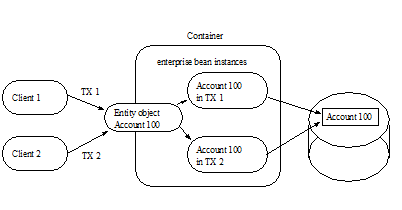
With this strategy, the type of lock acquired by ejbLoad or get accessor method (if a lazy loading cache management strategy is used) leads to a trade-off. If ejbLoad or the accessor method acquires an exclusive lock on the instance’s state in the database, the throughput of read-only transactions could be impacted. If ejbLoad or the accessor method acquires a shared lock and the instance is updated, then either ejbStore or a set accessor method will need to promote the lock to an exclusive lock (which may cause a deadlock if it happens concurrently under multiple transactions), or, if the container uses an optimistic cache concurrency control strategy, the container will need to validate the state of the cache against the database at transaction commit (which may result in a rollback of the transaction).
It is expected that containers will provide deployment-time configuration options that will allow control to be exercised over the logical transaction isolation levels that their caching strategies provide.
The container acquires exclusive access to the entity object’s state in the database. The container activates a single instance and serializes the access from multiple transactions to this instance. The commit-time option A in Subsection See Commit Options applies to this type of container.
===
Multiple Clients Can Access the Same Entity Object Using Single Instance
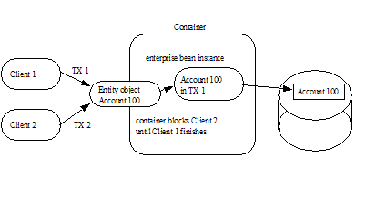
4.56. Non-reentrant and Re-entrant Instances
An entity Bean Provider can specify that an entity bean is non-reentrant. If an instance of a non-reentrant entity bean executes a client request in a given transaction context, and another request with the same transaction context arrives for the same entity object, the container will throw an exception to the second request. This rule allows the Bean Provider to program the entity bean as single-threaded, non-reentrant code.
The functionality of entity beans with container-managed persistence may require loopbacks in the same transaction context. An example of a loopback is when the client calls entity object A, A calls entity object B, and B calls back A in the same transaction context. The entity bean’s method invoked by the loopback shares the current execution context (which includes the transaction and security contexts) with the Bean’s method invoked by the client.
If the entity bean is specified as non-reentrant in the deployment descriptor, the container must reject an attempt to re-enter the instance via the entity bean’s component interface while the instance is executing a business method. (This can happen, for example, if the instance has invoked another enterprise bean, and the other enterprise bean tries to make a loopback call.) If the attempt is made to reenter the instance through the remote interface, the container must throw the java.rmi.RemoteException to the caller. If the attempt is made to reenter the instance through the local interface, the container must throw the javax.ejb.EJBException to the caller. The container must allow the call if the Bean’s deployment descriptor specifies that the entity bean is re-entrant.
Re-entrant entity beans must be programmed and used with caution. First, the Bean Provider must code the entity bean with the anticipation of a loopback call. Second, since the container cannot, in general, tell a loopback from a concurrent call from a different client, the client programmer must be careful to avoid code that could lead to a concurrent call in the same transaction context.
Concurrent calls in the same transaction context targeted at the same entity object are illegal and may lead to unpredictable results. Since the container cannot, in general, distinguish between an illegal concurrent call and a legal loopback, application programmers are encouraged to avoid using loopbacks. Entity beans that do not need callbacks should be marked as non-reentrant in the deployment descriptor, allowing the container to detect and prevent illegal concurrent calls from clients.
4.57. Responsibilities of the Enterprise Bean Provider
This section describes the responsibilities of an entity Bean Provider to ensure that an entity bean with container-managed persistence can be deployed in any EJB container.
4.58. Classes and Interfaces
The entity Bean Provider is responsible for providing the following class files:
Entity bean class and any dependent classes
Primary key class
Entity bean’s remote interface and entity bean’s remote home interface, if the entity bean provides a remote client view
Entity bean’s local interface and local home interface, if the entity bean provides a local client view
The Bean Provider must provide a remote interface and a remote home interface or a local interface and a local home interface for the bean. The Bean Provider may provide a remote interface, remote home interface, local interface, and local home interface for the bean. Other combinations are not allowed.
4.59. Enterprise Bean Class
The following are the requirements for an entity bean class:
The class must implement, directly or indirectly, the javax.ejb.EntityBean interface.
The class may implement, directly or indirectly, the javax.ejb.TimedObject interface.
The class must be defined as public and must be abstract. The class must be a top level class.
The class must define a public constructor that takes no arguments.
The class must not define the finalize() method.
The class may, but is not required to, implement the entity bean’s component interface13. If the class implements the entity bean’s component interface, the class must provide no-op implementations of the methods defined by that interface. The container will never invoke these methods on the bean instances at runtime.
The entity bean class must implement the business methods, and the ejbCreate <METHOD> and ejbPostCreate <METHOD> methods as described later in this section.
The entity bean class must implement the ejbHome<METHOD> methods that correspond to the home business methods specified in the bean’s home interface. These methods are executed on an instance in the pooled state; hence they must not access state that is particular to a specific bean instance (e.g., the accessor methods for the bean’s abstract persistence schema must not be used by these methods).
The entity bean class must implement the get and set accessor methods of the bean’s abstract persistence schema as abstract methods.
The entity bean class may have superclasses and/or superinterfaces. If the entity bean has superclasses, the business methods, the ejbCreate <METHOD> and ejbPostCreate <METHOD> methods, and the methods of the EntityBean interface and/or the TimedObject interface may be implemented in the enterprise bean class or in any of its superclasses.
The entity bean class is allowed to implement other methods (for example helper methods invoked internally by the business methods) in addition to the methods required by the EJB specification.
The entity bean class does not implement the finder methods. The implementations of the finder methods are provided by the container.
The entity bean class must implement any ejbSelect<METHOD> methods as abstract methods.
4.60. Dependent Value Classes
The following are the requirements for a dependent value class:
The class must be defined as public and must not be abstract.
The class must be serializable.
4.61. ejbCreate<METHOD> Methods
The entity bean class must implement the ejbCreate<METHOD> methods that correspond to the create<METHOD> methods specified in the entity bean’s home interface or local home interface.
The entity bean class may define zero or more ejbCreate<METHOD> methods whose signatures must follow these rules:
The method name must have ejbCreate as its prefix.
The method must be declared as public.
The method must not be declared as final or static.
The return type must be the entity bean’s primary key type.
If the ejbCreate<METHOD> method corresponds to a create<METHOD> on the entity bean’s remote home interface, the method arguments and return value types must be legal types for RMI-IIOP.
The throws clause must define the javax.ejb.CreateException . The throws clause may define arbitrary application specific exceptions.
EJB 1.0 allowed the ejbCreate method to throw the java.rmi.RemoteException to indicate a non-application exception. This practice was deprecated in EJB 1.1—an EJB 1.1 or EJB 2.0 or later compliant enterprise bean should throw the javax.ejb.EJBException or another java.lang.RuntimeException to indicate non-application exceptions to the container (see Section See System Exceptions). The ejbCreate method of an entity bean with cmp-version 2.x must not throw the java.rmi.RemoteException..
4.62. ejbPostCreate<METHOD> Methods
For each ejbCreate<METHOD> method, the entity bean class must define a matching ejbPostCreate<METHOD> method, using the following rules:
The method name must have ejbPostCreate as its prefix.
The method must be declared as public.
The method must not be declared as final or static.
The return type must be void .
The method arguments must be the same as the arguments of the matching ejbCreate<METHOD> method.
The throws clause may define arbitrary application specific exceptions, including the javax.ejb.CreateException.
EJB 1.0 allowed the ejbPostCreate method to throw the java.rmi.RemoteException to indicate a non-application exception. This practice was deprecated in EJB 1.1—an EJB 1.1 or EJB 2.0 or later compliant enterprise bean should throw the javax.ejb.EJBException or another java.lang.RuntimeException to indicate non-application exceptions to the container (see Section See System Exceptions). The ejbPostCreate method of an entity bean with cmp-version 2.x must not throw the java.rmi.RemoteException..
4.63. ejbHome<METHOD> Methods
The entity bean class may define zero or more home methods whose signatures must follow the following rules:
An ejbHome<METHOD> method must exist for every home <METHOD> method on the entity bean’s remote home or local home interface. The method name must have ejbHome as its prefix followed by the name of the <METHOD> method in which the first character has been uppercased.
The method must be declared as public.
The method must not be declared as static.
If the ejbHome<METHOD> method corresponds to a home <METHOD> on the entity bean’s remote home interface, the method argument and return value types must be legal types for RMI-IIOP.
The throws clause may define arbitrary application specific exceptions. The throws clause must not throw the java.rmi.RemoteException .
4.64. ejbSelect<METHOD> Methods
The entity bean class may define one or more select methods whose signatures must follow the following rules:
The method name must have ejbSelect as its prefix.
The method must be declared as public.
The method must be declared as abstract.
The throws clause must define the javax.ejb.FinderException . The throws clause may define arbitrary application specific exceptions.
4.65. Business Methods
The entity bean class may define zero or more business methods whose signatures must follow these rules:
The method names can be arbitrary, but they must not start with ‘ ejb ’ to avoid conflicts with the callback methods used by the EJB architecture.
The business method must be declared as public.
The method must not be declared as final or static.
If the business method corresponds to a method of the entity bean’s remote interface, the method argument and return value types must be legal types for RMI-IIOP.
The throws clause may define arbitrary application specific exceptions.
EJB 1.0 allowed the business methods to throw the java.rmi.RemoteException to indicate a non-application exception. This practice was deprecated in EJB 1.1—an EJB 1.1 or EJB 2.0 or later compliant enterprise bean should throw the javax.ejb.EJBException or another java.lang.RuntimeException to indicate non-application exceptions to the container (see Section See System Exceptions).The business methods of an entity bean with cmp-version 2.x must not throw the java.rmi.RemoteException.
4.66. Entity Bean’s Remote Interface
The following are the requirements for the entity bean’s remote interface:
The interface must extend the javax.ejb.EJBObject interface.
The methods defined in the remote interface must follow the rules for RMI-IIOP. This means that their argument and return value types must be valid types for RMI-IIOP, and their throws clauses must include the java.rmi.RemoteException.
The remote interface is allowed to have superinterfaces. Use of interface inheritance is subject to the RMI-IIOP rules for the definition of remote interfaces.
For each method defined in the remote interface, there must be a matching method in the entity bean’s class. The matching method must have:
The same name.
The same number and types of its arguments, and the same return type.
All the exceptions defined in the throws clause of the matching method of the enterprise Bean class must be defined in the throws clause of the method of the remote interface.
The remote interface methods must not expose local interface types, local home interface types, timer handles, or the managed collection classes that are used for entity beans with container-managed persistence as arguments or results.
4.67. Entity Bean’s Remote Home Interface
The following are the requirements for the entity bean’s home interface:
The interface must extend the javax.ejb.EJBHome interface.
The methods defined in this interface must follow the rules for RMI-IIOP. This means that their argument and return types must be of valid types for RMI-IIOP, and their throws clauses must include the java.rmi.RemoteException.
The remote home interface is allowed to have superinterfaces. Use of interface inheritance is subject to the RMI-IIOP rules for the definition of remote interfaces.
Each method defined in the remote home interface must be one of the following:
A create method.
A finder method.
A home method.
Each create method must be named “ create<METHOD> ”, e.g. createLargeAccounts. Each create method name must match one of the ejbCreate<METHOD> methods defined in the enterprise bean class. The matching ejbCreate<METHOD> method must have the same number and types of its arguments. (Note that the return type is different.)
The return type for a create<METHOD> method must be the entity bean’s remote interface type.
All the exceptions defined in the throws clause of the matching ejbCreate <METHOD> and ejbPostCreate <METHOD> methods of the enterprise bean class must be included in the throws clause of the matching create method of the home interface (i.e., the set of exceptions defined for the create method must be a superset of the union of exceptions defined for the ejbCreate <METHOD> and ejbPostCreate <METHOD> methods).
The throws clause of a create <METHOD> method must include the javax.ejb.CreateException.
Each finder method must be named “ find <METHOD>” (e.g. findLargeAccounts).
The return type for a find<METHOD> method must be the entity bean’s remote interface type (for a single-object finder), or a collection thereof (for a multi-object finder).
The remote home interface must always include the findByPrimaryKey method, which is always a single-object finder. The method must declare the primary key class as the method argument.
The throws clause of a finder method must include the javax.ejb.FinderException.
Home methods can have arbitrary names, but they must not start with “create”, “find”, or “ remove ”. Their argument and return types must be of valid types for RMI-IIOP, and their throws clauses must include the java.rmi.RemoteException. The matching ejbHome method specified in the entity bean class must have the same number and types of arguments and must return the same type as the home method as specified in the remote home interface of the bean.
The remote home interface methods must not expose local interface types, local home interface types, timers or timer handles, or the managed collection classes that are used for entity beans with container-managed persistence as arguments or results.
4.68. Entity Bean’s Local Interface
The following are the requirements for the entity bean’s local interface:
The interface must extend the javax.ejb.EJBLocalObject interface.
For each method defined in the local interface, there must be a matching method in the entity bean’s class. The matching method must have:
The same name.
The same number and types of its arguments, and the same return type.
All the exceptions defined in the throws clause of the matching method of the enterprise Bean class must be defined in the throws clause of the method of the local interface.
4.69. Entity Bean’s Local Home Interface
The following are the requirements for the entity bean’s local home interface:
The interface must extend the javax.ejb.EJBLocalHome interface.
Each method defined in the home interface must be one of the following:
A create method.
A finder method.
A home method.
Each create method must be named “ create<METHOD> ”, e.g. createLargeAccounts. Each create method name must match one of the ejbCreate<METHOD> methods defined in the enterprise bean class. The matching ejbCreate<METHOD> method must have the same number and types of its arguments. (Note that the return type is different.)
The return type for a create<METHOD> method on the local home interface must be the entity bean’s local interface type.
All the exceptions defined in the throws clause of the matching ejbCreate <METHOD> and ejbPostCreate <METHOD> methods of the enterprise bean class must be included in the throws clause of the matching create method of the local home interface (i.e., the set of exceptions defined for the create method must be a superset of the union of exceptions defined for the ejbCreate <METHOD> and ejbPostCreate <METHOD> methods).
The throws clause of a create <METHOD> method must include the javax.ejb.CreateException.
Each finder method must be named “ find <METHOD>” (e.g. findLargeAccounts).
The return type for a find<METHOD> method defined on the local home interface must be the entity bean’s local interface type (for a single-object finder), or a collection thereof (for a multi-object finder).
The local home interface must always include the findByPrimaryKey method, which is always a single-object finder. The method must declare the primary key class as the method argument.
The throws clause of a finder method must include the javax.ejb.FinderException.
Home methods can have arbitrary names, but they must not start with “create”, “find”, or “ remove ”. The matching ejbHome method specified in the entity bean class must have the same number and types of arguments and must return the same type as the home method as specified in the home interface of the bean. The throws clause of a home method defined on the local home interface must not include the java.rmi.RemoteException.
4.70. Entity Bean’s Primary Key Class
The Bean Provider must specify a primary key class in the deployment descriptor.
The primary key type must be a legal Value Type in RMI-IIOP.
The class must provide suitable implementation of the hashCode() and equals(Object other) methods to simplify the management of the primary keys by the container.
4.71. Entity Bean’s Deployment Descriptor
The Bean Provider must specify the relationships in which the entity beans participate in the relationships element.
The Bean Provider must provide unique names to designate entity beans as follows, and as described in See The Bean Provider’s View of the Deployment Descriptor.
The Bean Provider must specify unique names for entity beans which are defined in the ejb-jar file by using the ejb-name element.
The Bean Provider must specify a unique abstract schema name for an entity bean using the abstract-schema-name deployment descriptor element.
The Bean Provider must define a query for each finder or select method except findByPrimaryKey(key) . Typically this will be provided as the content of the ejb-ql element contained in the query element for the entity bean. The syntax of EJB QL is defined in Chapter See EJB QL: EJB 2.1 Query Language for Container-Managed Persistence Query Methods.
Since EJB QL query strings are embedded in the deployment descriptor, which is an XML document, it may be necessary to encode the following characters in the query string: “ > ”, “ < “.
4.72. The Responsibilities of the Container Provider
This section describes the responsibilities of the Container Provider to support entity beans. The Container Provider is responsible for providing the deployment tools, and for managing the entity beans at runtime, including their persistent state and relationships.
Because the EJB specification does not define the API between deployment tools and the container, we assume that the deployment tools described in this section are provided by the Container Provider. Alternatively, the deployment tools may be provided by a different vendor who uses the container vendor’s specific API.
4.73. Generation of Implementation Classes
The deployment tools provided by the Container Provider are responsible for the generation of additional classes when the entity bean is deployed. The tools obtain the information that they need for generation of the additional classes by introspecting the classes and interfaces provided by the Bean Provider and by examining the entity bean’s deployment descriptor.
The deployment tools must generate the following classes:
A class that implements the entity bean’s remote home interface (i.e., the entity EJBHome class).
A class that implements the entity bean’s remote interface (i.e., the entity EJBObject class).
A class that implements the entity bean’s local home interface (i.e., the entity EJBLocalHome class).
A class that implements the entity bean’s local interface (i.e., the EJBLocalObject class).
A class that implements the entity bean class (i.e., a concrete class corresponding to the abstract entity bean class that was provided by the Bean Provider).
The deployment tools may also generate a class that mixes some container-specific code with the entity bean class. The code may, for example, help the container to manage the entity bean instances at runtime. Tools can use subclassing, delegation, and code generation.
The deployment tools may also allow generation of additional code that wraps the business methods and that is used to customize the business logic for an existing operational environment. For example, a wrapper for a debit function on the Account bean may check that the debited amount does not exceed a certain limit, or perform security checking that is specific to the operational environment.
4.74. Enterprise Bean Class
The following are the requirements for a concrete entity bean class:
The class must extend the abstract entity bean class provided by the Bean Provider.
The class must be defined as public and must not be abstract.
The class must define a public constructor that takes no arguments.
The class must implement the get and set accessor methods of the bean’s abstract persistence schema.
The class must not define the finalize method.
The entity bean class must implement the ejbFind<METHOD> methods.
The entity bean class must implement the ejbSelect<METHOD> methods.
The entity bean class is allowed to implement other methods in addition to the methods required by the EJB specification.
4.75. ejbFind<METHOD> Methods
For each find<METHOD> method in the remote home interface or local home interface of the entity bean, there must be a corresponding ejbFind<METHOD> method with the same argument types in the concrete entity bean class.
The method name must have ejbFind as its prefix.
The method must be declared as public.
If the ejbFind<METHOD> method corresponds to a find<METHOD> on the entity bean’s remote home interface, the method argument and return value types must be legal types for RMI-IIOP.
The return type of an ejbFind<METHOD> method must be the entity bean’s primary key type, or a collection of primary keys.
The throws clause must define the javax.ejb.FinderException . The throws clause may define arbitrary application specific exceptions.
Every finder method except ejbFindByPrimaryKey(key) is specified in the query deployment descriptor element for the entity. The container must use the EJB QL query string that is the content of the ejb-ql element or the descriptive query specification contained in the description element as the definition of the query of the corresponding ejbFind<METHOD> method.
4.76. ejbSelect<METHOD> Methods
For each ejbSelect<METHOD> method in the abstract entity bean class, there must be a method with the same argument and result types in the concrete entity bean class.
Every select method is specified in a query deployment descriptor element for the entity. The container must use the EJB QL query string that is the content of the ejb-ql element or the descriptive query specification that is contained in the description element as the definition of the query of the corresponding ejbSelect<METHOD>method.
The container must use the contents of the query element, the corresponding EJB QL string and the type of the values selected as specified by the SELECT clause to determine the type of the values returned by a select method.
The container must ensure that there are no duplicates returned by a select method if the return type is java.util.Set.
4.77. Entity EJBHome Class
The entity EJBHome class, which is generated by deployment tools, implements the entity bean’s remote home interface. This class implements the methods of the javax.ejb.EJBHome interface, and the type-specific create and finder methods specific to the entity bean.
The implementation of each create<METHOD> method invokes a matching ejbCreate<METHOD> method, followed by the matching ejbPostCreate<METHOD> method, passing the create<METHOD> parameters to these matching methods.
The implementation of the remove methods defined in the javax.ejb.EJBHome interface must activate an instance (if an instance is not already in the ready state) and invoke the ejbRemove method on the instance.
The implementation of each find<METHOD> method invokes a matching ejbFind<METHOD> method. The implementation of the find<METHOD> method must create an entity object reference for the primary key returned from the ejbFind<METHOD> and return the entity object reference to the client. If the ejbFind<METHOD> method returns a collection of primary keys, the implementation of the find<METHOD> method must create a collection of entity object references for the primary keys and return the collection to the client.
The implementation of each <METHOD> home method invokes a matching ejbHome<METHOD> method (in which the first character of <METHOD> is uppercased in the name of the ejbHome<METHOD> method), passing the parameters of the <METHOD> method to the matching ejbHome<METHOD>method.
4.78. Entity EJBObject Class
The entity EJBObject class, which is generated by deployment tools, implements the entity bean’s remote interface. It implements the methods of the javax.ejb.EJBObject interface and the remote business methods specific to the entity bean.
The implementation of the remove method (defined in the javax.ejb.EJBObject interface) must activate an instance (if an instance is not already in the ready state) and invoke the ejbRemove method on the instance.
The implementation of each remote business method must activate an instance (if an instance is not already in the ready state) and invoke the matching business method on the instance.
4.79. Entity EJBLocalHome Class
The entity EJBLocalHome class, which is generated by deployment tools, implements the entity bean’s local home interface. This class implements the methods of the javax.ejb.EJBLocalHome interface, and the type-specific create and finder methods specific to the entity bean.
The implementation of each create<METHOD> method invokes a matching ejbCreate<METHOD> method, followed by the matching ejbPostCreate<METHOD> method, passing the create<METHOD> parameters to these matching methods.
The implementation of the remove method defined in the javax.ejb.EJBLocalHome interface must activate an instance (if an instance is not already in the ready state) and invoke the ejbRemove method on the instance.
The implementation of each find<METHOD> method invokes a matching ejbFind<METHOD> method. The implementation of the find<METHOD> method must create a local entity object reference for the primary key returned from the ejbFind<METHOD> and return the local entity object reference to the local client. If the ejbFind<METHOD> method returns a collection of primary keys, the implementation of the find<METHOD> method must create a collection of local entity object references for the primary keys and return the collection to the local client.
The implementation of each <METHOD> home method invokes a matching ejbHome<METHOD> method (in which the first character of <METHOD> is uppercased in the name of the ejbHome<METHOD> method), passing the parameters of the <METHOD> method to the matching ejbHome<METHOD> method.
4.80. Entity EJBLocalObject Class
The entity EJBLocalObject class, which is generated by deployment tools, implements the entity bean’s local interface. It implements the methods of the javax.ejb.EJBLocalObject interface and the local business methods specific to the entity bean.
The implementation of the remove method (defined in the javax.ejb.EJBLocalObject interface) must activate an instance (if an instance is not already in the ready state) and invoke the ejbRemove method on the instance.
The implementation of each local business method must activate an instance (if an instance is not already in the ready state) and invoke the matching business method on the instance.
4.81. Handle Class
The deployment tools are responsible for implementing the handle class for the entity bean. The handle class must be serializable by the Java Serialization protocol.
As the handle class is not entity bean specific, the container may, but is not required to, use a single class for all deployed entity beans.
4.82. Home Handle Class
The deployment tools responsible for implementing the home handle class for the entity bean. The handle class must be serializable by the Java Serialization protocol.
Because the home handle class is not entity bean specific, the container may, but is not required to, use a single class for the home handles of all deployed entity beans.
4.83. Metadata Class
The deployment tools are responsible for implementing the class that provides metadata information to the remote client view contract. The class must be a valid RMI-IIOP Value Type, and must implement the javax.ejb.EJBMetaData interface.
Because the metadata class is not entity bean specific, the container may, but is not required to, use a single class for all deployed enterprise beans.
4.84. Instance’s Re-entrance
The container runtime must enforce the rules defined in Section See Non-reentrant and Re-entrant Instances.
4.85. Transaction Scoping, Security, Exceptions
The container runtime must follow the rules on transaction scoping and exception handling described in Chapters 9 and See Exception Handling. The container runtime must follow the rules on security checking described in the EJB Core Contracts and Requirements document See EJB 3.2 Core Contracts and Requirements. Chapter “Security Management”.
4.86. Implementation of Object References
The container should implement the distribution protocol between the remote client and the container such that the object references of the remote home and remote interfaces used by entity bean clients are usable for a long period of time. Ideally, a remote client should be able to use an object reference across a server crash and restart. An object reference should become invalid only when the entity object has been removed, or after a reconfiguration of the server environment (for example, when the entity bean is moved to a different EJB server or container).
The motivation for this is to simplify the programming model for the entity bean client. While the client code needs to have a recovery handler for the system exceptions thrown from the individual method invocations on the remote home and remote interface, the client should not be forced to re-obtain the object references.
4.87. EntityContext
The container must implement the EntityContext.getEJBObject method such that the bean instance can use the Java language cast to convert the returned value to the entity bean’s remote interface type. Specifically, the bean instance does not have to use the PortableRemoteObject.narrow method for the type conversion.
4.88. Primary Keys
The container must be able to manipulate the primary key type of an entity bean. Therefore, the primary key type for an entity bean with container-managed persistence must follow the rules in this subsection, in addition to those specified in Subsection See Entity Bean’s Primary Key Class.
There are two ways to specify a primary key class for an entity bean with container-managed persistence:
Primary key that maps to a single field in the entity bean class.
Primary key that maps to multiple fields in the entity bean class.
The second method is necessary for implementing compound keys, and the first method is convenient for single-field keys. Without the first method, simple types such as String would have to be wrapped in a user-defined class.
4.89. Primary Key That Maps to a Single Field in the Entity Bean Class
The Bean Provider uses the primkey-field element of the deployment descriptor to specify the container-managed field of the entity bean class that contains the primary key. The field’s type must be the primary key type.
4.90. Primary Key That Maps to Multiple Fields in the Entity Bean Class
The primary key class must be public, and must have a public constructor with no parameters.
All fields in the primary key class must be declared as public.
The names of the fields in the primary key class must be a subset of the names of the container-managed fields. (This allows the container to extract the primary key fields from an instance’s container-managed fields, and vice versa.)
4.91. Special Case: Unknown Primary Key Class
In special situations, the entity Bean Provider may choose not to specify the primary key class or the primary key fields for an entity bean with container-managed persistence. This case usually happens when the entity bean does not have a natural primary key, and/or the Bean Provider wants to allow the Deployer using the Container Provider’s tools to select the primary key fields at deployment time. The entity bean’s primary key type will usually be derived from the primary key type used by the underlying database system that stores the entity objects. The primary key used by the database system may not be known to the Bean Provider.
In this special case, the type of the argument of the findByPrimaryKey method must be declared as java.lang.Object. The Bean Provider must specify the primary key class in the deployment descriptor as of the type java.lang.Object.
When defining the primary key for the enterprise bean, the Deployer using the Container Provider’s tools will typically add additional container-managed fields to the concrete subclass of the entity bean class (this typically happens for entity beans that do not have a natural primary key, and the primary keys are system-generated by the underlying database system that stores the entity objects). In this case, the container must generate the primary key value when the entity bean instance is created (and before ejbPostCreate is invoked on the instance.)
The primary key class is specified at deployment time in the situations when the Bean Provider develops an entity bean that is intended to be used with multiple back-ends that provide persistence, and when these multiple back-ends require different primary key structures.
Use of entity beans with a deferred primary key type specification limits the client application programming model, because the clients written prior to deployment of the entity bean may not use, in general, the methods that rely on the knowledge of the primary key type.
The implementation of the enterprise bean class methods must be done carefully. For example, the methods should not depend on the type of the object returned from EntityContext.getPrimaryKey, because the return type is determined by the Deployer after the EJB class has been written.
5. EJB QL: EJB 2.1 Query Language for Container-Managed Persistence Query Methods
The Enterprise JavaBeans query language, EJB QL, is used to define queries for entity beans with container-managed persistence. EJB QL enables the Bean Provider to specify the semantics of query methods in a portable way.
This chapter provides the complete definition of EJB QL that is required to be supported for use with EJB 2.1 entity beans with container managed persistence. Implementations of this specification are permitted, but not required, to provide the extensions to EJB QL defined by the Java Persistence query language See Java™ Persistence API for use with finder and select methods. Applications that make use of such extensions in finder and select methods will not be portable.
5.1. Overview
EJB QL is a query specification language for the finder and select methods of entity beans with container-managed persistence. EJB QL can be compiled to a target language, such as SQL, of a database or other persistent store. This allows the execution of queries to be shifted to the native language facilities provided by the persistent store, instead of requiring queries to be executed on the runtime representation of the entity beans’ state. As a result, query methods can be optimizable as well as portable.
The Enterprise JavaBeans query language uses the abstract persistence schemas of entity beans, including their relationships, for its data model. It defines operators and expressions based on this data model.
The Bean Provider uses EJB QL to write queries based on the abstract persistence schemas and the relationships defined in the deployment descriptor. EJB QL depends on navigation and selection __ based on the cmp-fields and cmr-fields of the related entity beans. The Bean Provider can navigate from an entity bean to other entity beans by using the names of cmr-fields in EJB QL queries.
EJB QL allows the Bean Provider to use the abstract schema types of entity beans in a query if the abstract persistence schemas of the beans are defined in the same deployment descriptor as the query.
It is possible to parse and validate EJB QL queries before entity beans are deployed because EJB QL is based on the abstract schema types of entity beans.
EJB QL queries can be used in two different ways:
as queries for selecting entity objects through finder methods defined in the home interface. Finder methods allow the results of an EJB QL query to be used by the clients of the entity bean.
as queries for selecting entity objects or other values derived from an entity bean’s abstract schema type through select methods defined on the entity bean class. Select methods allow the Bean Provider to use EJB QL to find objects or values related to the state of an entity bean without directly exposing the results to the client.
5.2. EJB QL Definition
EJB QL uses a SQL-like syntax to select objects or values based on the abstract schema types and relationships of entity beans. The path expressions of EJB QL allow the Bean Provider to navigate over relationships defined by the cmr-fields of the abstract schema types of entity beans.
This chapter provides the full definition of the language.
An EJB QL query is a string which consists of the following clauses:
a SELECT clause, which determines the type of the objects or values to be selected.
a FROM clause, which provides declarations that designate the domain to which the expressions specified in the SELECT clause and WHERE clause of the query apply.
an optional WHERE clause, which may be used to restrict the results that are returned by the query.
an optional ORDER BY clause, which may be used to order the results that are returned by the query.
In BNF syntax, an EJB QL query is defined as:
- EJB QL
-
= select_clause from_clause
An EJB QL query must always have a SELECT and a FROM clause. The square brackets [] indicate that the WHERE and ORDER BY clauses are optional.
An EJB QL query may have parameters that correspond to the parameters of the finder or select method for which it is defined.
An EJB QL query is statically defined in the ejb-ql deployment descriptor element.
5.3. Abstract Schema Types and Query Domains
EJB QL is a typed language whose design is based on the type model of EJB 2.0 container-managed persistence. Every expression in EJB QL has a type. The type of the expression is derived from the structure of the expression; the abstract schema types of the identification variable declarations; the types to which the cmp-fields and cmr-fields evaluate; and the types of literals. The allowable types in EJB QL are the abstract schema types of entity beans and cmp-fields.
The abstract schema type of an entity bean is derived from its entity bean class and the information provided in the deployment descriptor. There is a one-to-one mapping between entity bean abstract schema types and entity bean homes. Abstract schema names, as specified by the abstract-schema-name elements in the deployment descriptor, are used to denote entity bean abstract schema types in EJB QL.
Informally, the abstract schema type of an entity bean can be characterized as follows:
_For every get accessor method of the entity bean class that corresponds to a_ _cmp-field element in the deployment descriptor, there is a field (“cmp-field”) whose abstract schema type corresponds to the result type of the accessor method._
_For every get accessor method of the entity bean that corresponds to a_ _cmr-field_ _element in the deployment descriptor, there is a field (“cmr-field”) whose type is the abstract schema type of the entity bean denoted by the ejb-name element contained in the corresponding ejb-relationship-role element (or, if the role has a multiplicity of Many, a collection of such)._
Abstract schema types are specific to the EJB QL data model. The container is not required to implement or otherwise materialize an abstract schema type.
The domain of an EJB QL query consists of the abstract schema types of all entity beans with container-managed persistence that are defined in the same deployment descriptor.
The Bean Provider creates an ejb-jar file which contains a deployment descriptor describing several entity beans and their relationships. EJB QL assumes that a single deployment descriptor in an ejb-jar file constitutes a nondecomposable unit for the container responsible for implementing the abstract persistence schemas of the entity beans and the relationships defined in the deployment descriptor and the ejb-jar file. Queries can be written by utilizing navigation over the cmr-fields of related beans supplied in the same ejb-jar by the Bean Provider because they are implemented and managed by the same container.
The domain of a query may be restricted by the navigability of the relationships of the entity bean on which it is based. The cmr-fields of an entity bean’s abstract schema type determine navigability. Using the cmr-fields and their values, a query can select related entity beans and use their abstract schema types in the query.
5.4. Query Methods
EJB QL is used for two types of query methods:
Finder methods—Finder methods are defined in the home interface(s) of an entity bean and return entity objects or local entity objects. A finder method that is defined on the remote home interface must return either an EJBObject or a collection of EJBObjects; a finder method that is defined on the local home interface must return either an EJBLocalObject or a collection of EJBLocalObjects. The result type of a finder method defined on the remote home interface of an entity bean is the entity bean’s remote interface (or a collection of objects implementing the entity bean’s remote interface). The result type of a finder method defined on the local home interface of an entity bean is the entity bean’s local interface (or a collection of objects implementing the entity bean’s local interface).
Select methods—Select methods are a special type of query method not directly exposed through the client view. The Bean Provider typically uses select methods to select the persistent state of an entity object or to select entities that are related to the entity bean for which the query is defined. The result type of a select method can be an EJBLocalObject (or a collection of EJBLocalObjects), an EJBObject (or a collection of EJBObjects), a cmp-field value (or a collection of such), or the result of an aggregate function.
5.5. Naming
Entity beans are designated in EJB QL query strings by their abstract schema names. The Bean Provider assigns unique abstract schema names to entity beans as part of the development process so that they can be used within queries. These unique names are scoped within the deployment descriptor file.
5.6. Examples
The following convention refers to the names used for entity beans in subsequent examples: An entity bean as a whole is designated by <name>EJB, and its entity bean class and abstract schema type are designated by <name> , following the convention used to name the local interface of an entity bean.
The first example assumes that the Bean Provider provides several entity beans, OrderEJB , ProductEJB , LineItemEJB , ShippingAddressEJB , and BillingAddressEJB . The abstract schema types for these entity beans are Order , Product , LineItem , ShippingAddress , and BillingAddress respectively. These beans are logically in the same ejb-jar file, as shown in See Several Entity Beans with Abstract Persistence Schemas Defined in the Same Ejb-jar File.. Only two of the entity beans, OrderEJB and ProductEJB, have remote interfaces and remote home interfaces.
===
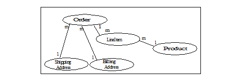
The entity beans ShippingAddress and BillingAddress each have one-to-many relationships with Order . There is also a one-to-many relationship between Order and Lineitem . The entity bean LineItem is related to Product in a many-to-one relationship.
EJB QL allows the Bean Provider to specify finder queries for OrderEJB by navigating over the cmr-fields and cmp-fields defined by Order and LineItem . A finder method query to find all orders with pending line items might be written as follows:
SELECT DISTINCT OBJECT(o)
_FROM Order AS o, IN(o.lineItems) AS l_
_WHERE l.shipped = FALSE_
This query navigates over the cmr-field lineItems of the abstract schema type Order to find line items, and uses the cmp-field shipped of LineItem to select those orders that have at least one line item that has not yet shipped. (Note that this query does not select orders that have no line items.)
Although predefined reserved identifiers, such as DISTINCT, OBJECT, FROM, AS, IN, WHERE, and FALSE appear in upper case in this example, predefined reserved identifiers are case insensitive.
The SELECT clause of this example designates the return type of this query to be of type Order. If this query is defined for a finder method on the entity bean’s remote home interface, the finder method will return objects of the entity bean’s remote interface type corresponding to the abstract schema type instances selected by the query. If this same query is defined for a finder method on the entity bean’s local home interface, the finder method will return objects of the entity bean’s local interface type corresponding to these same abstract schema type instances. Finder methods must always return EJBObjects or EJBLocalObjects of the bean type for which the query method is defined.
Because the same deployment descriptor defines the abstract persistence schemas of the related entity beans, the Bean Provider can also specify a query for OrderEJB that utilizes the abstract schema type of ProductEJB , and hence the cmp-fields and cmr-fields of both the abstract schema types Order and Product . For example, if the abstract schema type Product has a cmp-field named product_type , a finder query for OrderEJB can be specified using this cmp-field. Such a finder query might be: “Find all orders for products with product type office supplies”. An EJB QL query string for this might be as follows.
SELECT DISTINCT OBJECT(o)
FROM Order o, IN(o.lineItems) l
WHERE l.product.product_type = _‘_ office_supplies’
Because Order is related to Product by means of the relationships between Order and LineItem and between LineItem and Product , navigation using the cmr-fields lineItems and product is needed to express the query. This query is specified by using the abstract-schema-name for OrderEJB , namely Order , which designates the abstract schema type over which the query ranges. The basis for the navigation is provided by the cmr-fields lineItems and product of the abstract schema types Order and LineItem respectively.
5.7. The FROM Clause and Navigational Declarations
The FROM clause of an EJB QL query defines the domain of the query by declaring identification variables. The domain of the query may be constrained by path expressions.
Identification variables designate instances of a particular entity bean abstract schema type. The FROM clause can contain multiple identification variable declarations separated by a comma ( , ).
from_clause ::= FROM
identification_variable_declaration
[, identification_variable_declaration]*
identification_variable_declaration ::= collection_member_declaration
|
range_variable_declaration
collection_member_declaration ::= IN
(collection_valued_path_expression) [ AS ] identifier
- range_variable_declaration
-
abstract_schema_name [ AS ] identifier
The following subsections discuss the constructs used in the FROM clause.
5.8. Identifiers
An identifier is a character sequence of unlimited length. The character sequence must begin with a Java identifier start character, and all other characters must be Java identifier part characters. An identifier start character is any character for which the method Character.isJavaIdentifierStart returns true. This includes the underscore ( _ ) character and the dollar sign ( $ ) character. An identifier part character is any character for which the method Character.isJavaIdentifierPart returns true. The question mark ( ? ) character is reserved for use by EJB QL.
The following are the reserved identifiers in EJB QL: SELECT, FROM, WHERE, DISTINCT , OBJECT, NULL , TRUE , FALSE , NOT , AND , OR , BETWEEN , LIKE , IN , AS , UNKNOWN14, EMPTY, MEMBER, OF, IS, AVG, MAX, MIN, SUM, COUNT, ORDER, BY, ASC, DESC, MOD .
Reserved identifiers are case insensitive. Reserved identifiers must not be used as identification variables.
It is recommended that the Bean Provider not use other SQL reserved words as identification variables in EJB QL queries because they may be used as EJB QL reserved identifiers in future versions of the EJB specification.
5.9. Identification Variables
An identification variable is a valid identifier declared in the FROM clause of an EJB QL query. An identification variable may be declared using the special operators IN and, optionally, AS.
All identification variables must be declared in the FROM clause. Identification variables cannot be declared in other clauses.
An identification variable must not be a reserved identifier or have the same name as any of the following:
abstract-schema-name
ejb-name15
Identification variables are case insensitive.
An identification variable evaluates to a value of the type of the expression used in declaring the variable. For example, consider the previous finder query for OrderEJB:
SELECT DISTINCT OBJECT(o)
FROM Order o, IN(o.lineItems) l
WHERE l.product.product_type = ‘office_supplies’
In the FROM clause declaration IN(o.lineItems) l , _ the identification variable _l evaluates to any LineItem value directly reachable from Order. The cmr-field lineItems is a collection of instances of the abstract schema type LineItem and the identification variable l refers to an element of this collection. The type of l is the abstract schema type of LineItem .
An identification variable ranges over the abstract schema type of an entity bean. An identification variable designates an instance of an entity bean abstract schema type or an element of a collection of entity bean abstract schema types instances. Identification variables are existentially quantified in an EJB QL query.
An identification variable always designates a reference to a single value. It is declared in one of two ways; as a range variable or as a collection member identification variable:
A range variable is declared using the abstract schema name of an entity bean.
A collection member identification variable is declared using a collection-valued path expression.
The identification variable declarations are evaluated from left to right in the FROM clause. A collection member identification variable declaration can use the result of a preceding identification variable declaration of the query string.
5.10. Range Variable Declarations
The EJB QL syntax for declaring an identification variable as a range variable is similar to that of SQL; optionally, it uses the AS keyword.
range_variable_declaration ::= abstract_schema_name [ AS ] identifier
Objects or values that are related to an entity bean are typically obtained by navigation using path expressions. However, navigation does not reach all objects. Range variable declarations allow the Bean Provider to designate a “root” for objects which may not be reachable by navigation.
If the Bean Provider wants to select values by comparing more than one instance of an entity bean abstract schema type, more than one identification variable ranging over the abstract schema type is needed in the FROM clause.
The following finder method query returns orders whose quantity is greater than the order quantity for John Smith. This example illustrates the use of two different identification variables in the FROM clause, both of the abstract schema type Order. The SELECT clause of this query determines that it is the orders with quantities larger than John Smith’s that are returned.
SELECT DISTINCT OBJECT(o1)
FROM Order o1, Order o2
WHERE o1.quantity > o2.quantity AND
o2.customer.lastname = ‘Smith’ AND
o2.customer.firstname= ‘John’
5.11. Collection Member Declarations
An identification variable declared by a collection_member_declaration ranges over values of a collection obtained by navigation using a path expression. Such a path expression represents a navigation involving the cmr-fields of an entity bean abstract schema type. Because a path expression can be based on another path expression, the navigation can use the cmr-fields of related entity beans. Path expressions are discussed in See Path Expressions.
An identification variable of a collection member declaration is declared using a special operator, the reserved identifier IN. The argument to the IN operator is a collection-valued path expression. The path expression evaluates to a collection type specified as a result of navigation to a collection-valued cmr-field of an entity bean abstract schema type.
The syntax for declaring a collection member identification variable is as follows:
collection_member_declaration ::= IN ( collection_valued_path_expression ) [AS] identifier
For example, the FROM clause for a query defined for OrderEJB might contain the following collection member declaration:
IN(o.lineItems) l
In this example, lineItems is the name of a cmr-field whose value is a collection of instances of the abstract schema type LineItem of the LineItemEJB entity bean. The identification variable l designates a member of this collection, a single LineItem abstract schema type instance. In this example, o is an identification variable of the abstract schema type Order.
5.12. Example
The following FROM clause contains two identification variable declaration clauses. The identification variable declared in the first clause is used in the second clause. The clauses declare the variables o and l respectively. The range variable declaration Order AS o designates the identification variable o as a range variable whose type is the abstract schema type, Order. The identification variable l has the abstract schema type LineItem . Because the clauses are evaluated from left to right, the identification variable l can utilize the results of the navigation on o .
FROM Order AS o, IN(o.lineItems) l
5.13. Path Expressions
An identification variable followed by the navigation operator ( . ) and a cmp-field or cmr-field is a path expression. The type of the path expression is the type computed as the result of navigation; that is, the type of the cmp-field or cmr-field to which the expression navigates.
Depending on navigability, a path expression that leads to a cmr-field may be further composed. Path expressions can be composed from other path expressions if the original path expression evaluates to a single-valued type (not a collection) corresponding to a cmr-field. A path expression that ends in a cmp-field is terminal and cannot be further composed.
Path expression navigability is composed using “inner join” semantics. That is, if the value of a non-terminal cmr-field in the path expression is null, the path is considered to have no value, and does not participate in the determination of the result.
The syntax for single-valued path expressions and collection valued path expressions is as follows:
cmp_path_expression ::=
\{identification_variable |
single_valued_cmr_path_expression}.cmp_field
single_valued_cmr_path_expression ::=
identification_variable.[single_valued_cmr_field .]*single_valued_cmr_field
single_valued_path_expression ::=
cmp_path_expression | single_valued_cmr_path_expression
collection_valued_path_expression ::=
identification_variable.[single_valued_cmr_field.]*collection_valued_cmr_field
A single_valued_cmr_field is designated by the name of a cmr-field in a one-to-one or many-to-one relationship. The type of a single_valued_cmr_path_expression is the abstract schema type of the related entity bean.
A collection_valued_cmr_field is designated by the name of a cmr-field in a one-to-many or a many-to-many relationship. The type of a collection_valued_cmr_field is a collection of values of the abstract schema type of the related entity bean.
Navigation to a related entity bean results in a value of the related entity bean’s abstract schema type.
The evaluation of a path expression terminating in a cmp-field results in the abstract schema type corresponding to the Java type designated by the cmp-field.
It is syntactically illegal to compose a path expression from a path expression that evaluates to a collection. For example, if o designates Order, the path expression o.lineItems.product is illegal since navigation to lineItems results in a collection. This case should produce an error when the EJB QL query string is verified. To handle such a navigation, an identification variable must be declared in the FROM clause to range over the elements of the lineItems collection. Another path expression must be used to navigate over each such element in the WHERE clause of the query, as in the following:
SELECT OBJECT(o)
FROM Order AS o, IN(o.lineItems) l
WHERE l.product.name = ‘widget’
5.14. WHERE Clause and Conditional Expressions
The WHERE clause of a query consists of a conditional expression used to select objects or values that satisfy the expression. The WHERE clause thus restricts the result of a query.
A WHERE clause is defined as follows:
where_clause ::= WHERE conditional_expression
The following sections describe the language constructs that can be used in a conditional expression of the WHERE clause.
5.15. Literals
A string literal is enclosed in single quotes—for example: ‘literal’. A string literal that includes a single quote is represented by two single quotes—for example: ‘literal’’s’. EJB QL string literals, like Java String literals, use unicode character encoding.
An exact numeric literal is a numeric value without a decimal point, such as 57, -957, +62. Exact numeric literals support numbers in the range of Java long . Exact numeric literals use the Java integer literal syntax.
An approximate numeric literal is a numeric value in scientific notation, such as 7E3, -57.9E2, or a numeric value with a decimal, such as 7., -95.7, +6.2. Approximate numeric literals support numbers in the range of Java double . Approximate literals use the Java floating point literal syntax.
The Bean Provider may utilize appropriate suffixes to indicate the specific type of the literal in accordance with the Java Language Specification.
The boolean literals are TRUE and FALSE .
Although predefined reserved literals appear in upper case, they are case insensitive.
5.16. Identification Variables
All identification variables used in the WHERE clause of an EJB QL query must be declared in the FROM clause, as described in See Identification Variables.
Identification variables are existentially quantified in the WHERE clause. This means that an identification variable represents a member of a collection or an instance of an entity bean’s abstract schema type. An identification variable never designates a collection in its entirety.
5.17. Path Expressions
It is illegal to use a collection_valued_path_expression within a WHERE clause as part of a conditional expression except in an empty_collection_comparison_expression or collection_member_expression .
5.18. Input Parameters
The following rules apply to input parameters. Input parameters can only be used in the WHERE clause of a query.
Input parameters are designated by the question mark ( ? ) prefix followed by an integer. For example: ?1 .
Input parameters are numbered starting from 1.
The number of distinct input parameters in an EJB QL query must not exceed the number of input parameters for the finder or select method. It is not required that the EJB QL query use all of the input parameters for the finder or select method.
An input parameter evaluates to the abstract schema type of the corresponding parameter defined in the signature of the finder or select method with which the query is associated. It is the responsibility of the container to map the input parameter to the appropriate abstract schema type value.
Note that if an input parameter value is null, comparison operations or arithmetic operations involving the input parameter will return an unknown value. See See Null Values.
5.19. Conditional Expression Composition
Conditional expressions are composed of other conditional expressions, comparison operations, logical operations, path expressions that evaluate to boolean values, and boolean literals.
Arithmetic expressions can be used in comparison expressions. Arithmetic expressions are composed of other arithmetic expressions, arithmetic operations, path expressions that evaluate to numeric values, and numeric literals.
Arithmetic operations use numeric promotion.
Standard bracketing () for ordering expression evaluation is supported.
Conditional expressions are defined as follows:
conditional_expression ::= conditional_term |
conditional_expression OR conditional_term
conditional_term ::= conditional_factor | conditional_term AND
conditional_factor
conditional_factor ::= [ NOT ] conditional_primary
conditional_primary ::= simple_cond_expression |
(conditional_expression)
simple_cond_expression ::= comparison_expression | between_expression |
like_expression |
in_expression | null_comparison_expression |
empty_collection_comparison_expression |
collection_member_expression
5.20. Operators and Operator Precedence
The operators are listed below in order of decreasing precedence.
Navigation operator ( . )
Arithmetic operators:
+, - unary
*, / multiplication and division
+, - addition and subtraction
Comparison operators : = , > , >= , < , ⇐ , <> (not equal)
Logical operators: NOT , AND , OR
The following sections describe other operators used in specific expressions.
5.21. Between Expressions
_The syntax for the use of the comparison operator [NOT] BETWEEN in an conditional expression is as follows:_
_arithmetic_expression_ [ _NOT_ ] _BETWEEN_ _arithmetic-expression_ _AND_ _arithmetic-expression_
The BETWEEN expression
x BETWEEN y AND z
is semantically equivalent to:
y ⇐ x AND x ⇐ z
The rules for unknown and NULL values in comparison operations apply. See See Null Values.
Examples are:
_p.age BETWEEN 15 and 19_ is equivalent to _p.age >= 15 AND p.age <= 19_
_p.age NOT BETWEEN 15 and 19_ is equivalent to _p.age < 15 OR p.age > 19_
5.22. In Expressions
The syntax for the use of the comparison operator [NOT] IN in a conditional expression is as follows:
_cmp_path_expression_ [ _NOT_ ] _IN_ (
\{literal | input_parameter} _[_ , \{ _literal | input_parameter}]*_ )
The cmp_path_expression _ must have a string or numeric value. The literal and/or input_parameter values must be _like the same abstract schema type of the cmp_path_expression in type. (See See Equality and Comparison Semantics).
Examples are:
_o.country IN (’UK’, ’US’, ’France’)_ is true for _UK_ and false for _Peru_ , and is equivalent to the expression _(o.country = ’UK’) OR (o.country = ’US’) OR (o.country = ’ France’)_ .
_o.country NOT IN (’UK’, ’US’, ’France’)_ is false for _UK_ and true for _Peru_ , and is equivalent to the expression _NOT ((o.country = ’UK’) OR (o.country = ’US’) OR (o.country = ’France’))_ .
There must be at least one element in the comma separated list that defines the set of values for the IN expression.
If the value of a cmp_path_expression in an IN or NOT IN expression is NULL or unknown, the value of the expression is unknown.
5.23. Like Expressions
_The syntax for the use of the comparison operator [NOT] LIKE in a conditional expression is as follows:_
cmp_path_expression [ NOT ] LIKE pattern_value [ ESCAPE escape_character ]
The cmp_path_expression must have a string value. The pattern_value is a string literal or a string-valued input parameter in which an underscore ( _ ) stands for any single character, a percent ( % ) character stands for any sequence of characters (including the empty sequence), and all other characters stand for themselves. The optional escape_character is a single-character string literal or a character-valued input parameter (i.e., char or Character ) and is used to escape the special meaning of the underscore and percent characters in pattern_value .16
Examples are:
_address.phone LIKE ‘12%3’_ is true for ‘123’ ‘12993’ and false for ‘1234’
_asentence.word LIKE ‘l_se’_ is true for ‘lose’ and false for ‘loose’
_aword.underscored LIKE ‘\_%’ ESCAPE ‘\’_ is true for ‘_foo’ and false for ‘bar’
_address.phone NOT LIKE ‘12%3’_ is false for ‘123’ and ‘12993’ and true for ‘1234’
If the value of the cmp_path_expression or pattern_value is NULL or unknown, the value of the LIKE expression is unknown. If the escape_character is specified and is NULL , the value of the LIKE expression is unknown.
5.24. Null Comparison Expressions
The syntax for the use of the comparison operator IS NULL in a conditional expression is as follows:
\{single_valued_path_expression | input_parameter } IS [ NOT ] NULL __
A null comparison expression tests whether or not the single-valued path expression or input parameter is a NULL value.
5.25. Empty Collection Comparison Expressions
The syntax for the use of the comparison operator IS EMPTY in an empty_collection_comparison_expression is as follows:
collection_valued_path_expression IS [ NOT ] EMPTY
This expression tests whether or not the collection designated by the collection-valued path expression is empty (i.e, has no elements).
Note that a collection-valued path expression can only be used in the WHERE clause in an empty collection comparison expression or in a collection member expression.
The collection designated by the collection-valued path expression used in an empty collection comparison expression must not be used in the FROM clause for the declaration of an identification variable. An identification variable declared as a member of a collection implicitly designates the existence of a non-empty relationship; testing whether the same collection is empty is contradictory. Therefore, the following query is invalid.
SELECT OBJECT(o)
FROM Order o, IN(o.lineItems) l
WHERE o.lineItems IS EMPTY
If the value of the collection-valued path expression in an empty collection comparison expression is unknown, the value of the empty comparison expression is unknown.
5.26. Collection Member Expressions
The syntax for the use of the comparison operator MEMBER OF17 in an collection_member_expression is as follows:
\{single_valued_cmr_path_expression | identification_variable | input_parameter }
_[NOT] MEMBER [OF]_ collection_valued_path_expression
This expression tests whether the designated value is a member of the collection specified by the collection-valued path expression.
Note that a collection-valued path expression can only be used in the WHERE clause in an empty collection comparison expression or in a collection member expression.
If the collection valued path expression designates an empty collection, the value of the MEMBER OF expression is FALSE and the value of the NOT MEMBER OF expression is TRUE. Otherwise, if the value of the collection-valued path expression or single-valued cmr path expression in the collection member expression is unknown, the value of the collection member expression is unknown.
5.27. Functional Expressions
EJB QL includes the following built-in functions18, which may be used in the WHERE clause of a query.
String Functions:
_CONCAT(String, String)_ returns a _String_
_SUBSTRING(String, start, length)_ returns a _String_
_LOCATE(String, String [, start])link:#a3383[19]_ returns an _int_
_LENGTH(String)_ returns an _int_
Note that start and length are integer values. The first position in a string is designated as 1 by these functions.
Arithmetic Functions:
_ABS(number)_ returns a number ( _int_ , _float_ , or _double_ ) of the same type as the argument to the function
_SQRT(double)_ returns a _double_
_MOD(int, int)_ returns an _int_
Numeric arguments to these functions may correspond to the numeric Java object types as well as the primitive numeric types.
If the value of any argument to a functional expression is null or unknown, the value of the functional expression is unknown.
5.28. SELECT Clause
The SELECT clause denotes the query result. The SELECT clause contains either a single range variable that ranges over an entity bean abstract schema type, a single-valued path expression, or an aggregate select expression. In the case of a finder method, the SELECT clause is restricted to contain either a single range variable or a single-valued path expression that evaluates to the abstract schema type of the entity bean for which the finder method is defined.
The SELECT clause has the following syntax:
select_clause ::= SELECT [ DISTINCT ] \{select_expression | OBJECT (identification_variable)}
select_expression ::= single_valued_path_expression | aggregate_select_expression
aggregate_select_expression ::=
\{ _AVG_ | _MAX_ | _MIN_ | _SUM_ | _COUNT_
_}_ _(_ [ _DISTINCT_ ] cmp_path_expression _)_ |
_COUNT (_ [ _DISTINCT_ ] identification_variable | single_valued_cmr_path_expression _)_
All standalone identification variables in the SELECT clause must be qualified by the OBJECT operator. The SELECT clause must not use the OBJECT operator to qualify path expressions.
Note that the SELECT clause must be specified to return a single-valued expression. The query below is therefore not valid:
_SELECT o.lineItems FROM Order AS o_
The DISTINCT keyword is used to specify that duplicate values must be eliminated from the query result. If DISTINCT is not specified, duplicate values are not eliminated unless the query is specified for a method whose result type is java.util.Set. If a query is specified for a method whose result type is java.util.Set , but does not specify DISTINCT, the container must interpret the query as if SELECT DISTINCT had been specified. In general, however, the Bean Provider should specify the DISTINCT keyword when writing queries for methods that return java.util.Set .
The SELECT clause determines the type of the values returned by a query. For example, the following query returns a collection of products:
SELECT l.product FROM Order AS o, IN(o.lineItems) l
It is the responsibility of the container to map the abstract schema types returned by the query to the Java types that are returned by the finder or select method with which the query is associated and to materialize those return types, as described in See Return Value Types.
5.29. Null Values in the Query Result
If the result of an EJB QL query corresponds to a cmr-field or cmp-field whose value is null, the container must include that null value in the result that is returned by the finder or select method. The Bean Provider can use the IS NOT NULL construct to eliminate such null values from the result set of the query.
If the finder or select method is a single-object finder or select method, and the result set of the query consists of a single null value, the container must return the null value as the result of the method. If the result set of a query for a single-object finder or select method contains more than one value (whether non-null, null, or a combination), the container must throw the FinderException.
Note, however, that cmp-field types defined in terms of Java numeric primitive types cannot produce NULL values in the query result. An EJB QL query that returns such a cmp-field type as a result type must not return a null value. (If the Bean Provider wishes to allow null values for cmp-fields, he or she should specify those cmp-fields to have the equivalent Java object types instead of primitive types, e.g., Integer rather than int .)
5.30. Aggregate Functions in the SELECT Clause
The result of an EJB QL query may be the result of an aggregate function applied to a path expression.
The following aggregate functions can be used in the SELECT clause of an EJB QL query: AVG, COUNT, MAX, MIN, SUM.
For all aggregate functions except COUNT, the path expression that is the argument to the aggregate function must terminate in a cmp-field. The path expression argument to COUNT may terminate in either a cmp-field or a cmr-field, or the argument to COUNT may be an identification variable.
Arguments to the functions SUM and AVG must be numeric. Arguments to the functions MAX and MIN must correspond to orderable cmp-field types (i.e., numeric types, string types, character types, or date types).
The argument to an aggregate function may be preceded by the keyword DISTINCT to specify that duplicate values are to be eliminated before the aggregate function is applied.20
Null values are eliminated before the aggregate function is applied, regardless of whether the keyword DISTINCT is specified.
5.31. Examples
The following example returns all line items related to some order:
SELECT OBJECT(l)
FROM Order o, IN(o.lineItems) l
The following query returns all line items regardless of whether a line item is related to any order or product:
SELECT OBJECT(l)
FROM LineItems AS l
The following query returns the average order quantity:
SELECT AVG(o.quantity)
FROM Order o
The following query returns the total cost of the items that John Smith has ordered.
SELECT SUM(l.price)
FROM Order o, IN(o.lineItems) l
WHERE o.customer.lastname = ‘Smith’ AND o.customer.firstname = ‘John’
The following query returns the number of items in John Smith’s entire order.
SELECT COUNT(l)
FROM Order o, IN(o.lineItems) l
WHERE o.customer.lastname = ‘Smith’ AND o.customer.firstname = ‘John’
The following query returns the total number of orders.
SELECT COUNT(o)
FROM Order o
The following query counts the number of items in John Smith’s order for which prices have been specified.
SELECT COUNT(l.price)
FROM Order o, IN(o.lineItems) l
WHERE o.customer.lastname = ‘Smith’ AND o.customer.firstname = ‘John’
Note that this is equivalent to:
SELECT COUNT(l)
FROM Order o, IN(o.lineItems) l
WHERE o.customer.lastname = ‘Smith’ AND o.customer.firstname = ‘John’
AND l.price IS NOT NULL
5.32. ORDER BY Clause
The ORDER BY clause allows the objects or values that are returned by the query to be ordered.
The syntax of the ORDER BY clause is
orderby_clause ::= ORDER BY orderby_item [, orderby_item]*
orderby_item ::= cmp_path_expression
When the ORDER BY clause is used in an EJB QL query, the SELECT clause of the query must be one of the following:
an identification variable x, denoted as OBJECT(x)
a single_valued_cmr_path_expression
a cmp_path_expression
In the first two cases, each orderby_item must be an orderable cmp-field of the entity bean abstract schema type value returned by the SELECT clause. In the third case, the orderby_item must evaluate to the same cmp-field of the same entity bean abstract schema type as the cmp_path_expression in the SELECT clause.
For example, the first two queries below are legal, but the third and fourth are not.
SELECT OBJECT(o)
FROM Customer c, IN(c.orders) o
WHERE c.address.state = ‘CA’
ORDER BY o.quantity, o.totalcost
SELECT o.quantity
FROM Customer c, IN(c.orders) o
WHERE c.address.state = ‘CA’
ORDER BY o.quantity
SELECT l.product.product_name
FROM Order o, IN(o.lineItems) l
WHERE o.customer.lastname = ‘Smith’ AND o.customer.firstname = ‘John’
ORDER BY l.product.price
SELECT l.product.product_name
FROM Order o, IN(o.lineItems) l
WHERE o.customer.lastname = ‘Smith’ AND o.customer.firstname = ‘John’
ORDER BY o.quantity
If more than one orderby_item is specified, the left-to-right sequence of the orderby_item elements determines the precedence, whereby the leftmost orderby_item has highest precedence.
The keyword ASC specifies that ascending ordering be used; the keyword DESC specifies that descending ordering be used. Ascending ordering is the default.
SQL rules for the ordering of null values apply: that is, all null values must appear before all non-null values in the ordering or all null values must appear after all non-null values in the ordering, but it is not specified which.
It is the container’s responsibility to ensure that the ordering of the query result is preserved in the result of the finder or select method if the ORDER BY clause is used.
5.33. Return Value Types
The value of a query result, specified by the SELECT clause, is an entity bean abstract schema type, a cmp-field type, or the result of an aggregate function. The finder or select method with which the query is associated in the deployment descriptor determines how this result is mapped to the Java type that is visible as the result of the query method.
How the result type of a query is mapped depends on whether the query is defined for a finder method on the remote home interface, for a finder method on the local home interface, or for a select method.
The result type of a query for a finder method must be the entity bean abstract schema type that corresponds to the entity bean type of the entity bean on whose home interface the finder method is defined. If the query is used for a finder method defined on the remote home interface of the bean, the result of the finder method is the entity bean’s remote interface (or a collection of objects implementing the entity bean’s remote interface). If the finder method is defined on the local home interface, the result is the entity bean’s local interface (or a collection of objects implementing the entity bean’s local interface).
If the result type of a query for a select method is an entity bean abstract schema type, the return values for the query method are instances of the entity bean’s local interface or instances of the entity bean’s remote interface, depending on whether the value of the result-type-mapping deployment descriptor element contained in the query element for the select method is Local or Remote . The default value for result-type-mapping is Local .
If the result type of a query used for a select method is an abstract schema type corresponding to a cmp-field type (excluding queries whose SELECT clause uses one of the aggregate functions AVG, COUNT, MAX, MIN, SUM), the result type of the select method is as follows:
If the Java type of the cmp-field is an object type and the select method is a single-object select method, the result of the select method is an instance of that object type. If the select method is a multi-object select method, the result is a collection of instances of that type.
If the Java type of the cmp-field is a primitive Java type (e.g., int), and the select method is a single-object select method, the result of the select method is that primitive type.
If the Java type of the cmp-field is a primitive Java type (e.g., int), and the select method is a multi-object select method, the result of the select method is a collection of values of the corresponding wrappered type (e.g., Integer).
If the select method query is an aggregate query, the select method must be a single-object select method.
The result type of the select method must be a primitive type, a wrappered type, or an object type that is compatible with the standard JDBC conversion mappings for the type of the cmp-field See JDBC™ 4.1 API (JDBC specification)..
If the aggregate query uses the SUM, AVG, MAX, or MIN operator, and the result type of the select method is an object type and there are no values to which the aggregate function can be applied, the select method returns null.
If the aggregate query uses the SUM, AVG, MAX, or MIN operator, and the result type of the select method is a primitive type and there are no values to which the aggregate function can be applied, the container must throw the ObjectNotFoundException .
If the aggregate query uses the COUNT operator, the result of the select method should be an exact numeric type. If there are no values to which the COUNT method can be applied, the result of the select method is 0.
The result of a finder or select method may contain a null value if a cmp-field or cmr-field in the query result is null.
5.34. Null Values
When the target of a reference does not exist in the persistent store, its value is regarded as NULL . SQL 92 NULL semantics See Database Language SQL. ANSI X3.135-1992 or ISO/IEC 9075:1992. defines the evaluation of conditional expressions containing NULL values.
The following is a brief description of these semantics:
Comparison or arithmetic operations with a NULL value always yield an unknown value.
Two NULL values are not considered to be equal, the comparison yields an unknown value.
Comparison or arithmetic operations with an unknown value always yield an unknown value.
The IS NULL and IS NOT NULL operators convert a NULL cmp-field or single-valued cmr-field value into the respective TRUE or FALSE value.
Boolean operators use three valued logic, defined by See Definition of the AND Operator, See Definition of the OR Operator, and See Definition of the NOT Operator.
===
AND
T
F
U
T
T
F
U
F
F
F
F
U
U
F
U
===
OR
T
F
U
T
T
T
T
F
T
F
U
U
T
U
U
===
NOT
T
F
F
T
U
U
Note: EJB QL defines the empty string, ‘’, as a string with 0 length, which is not equal to a NULL value. However, NULL values and empty strings may not always be distinguished when queries are mapped to some persistent stores. The Bean Provider should therefore not rely on the semantics of EJB QL comparisons involving the empty string and NULL value.
5.35. Equality and Comparison Semantics
EJB QL only permits the values of like types to be compared. A type is like another type if they correspond to the same Java language type, or if one is a primitive Java language type and the other is the wrappered Java class type equivalent (e.g., int and Integer are like types in this sense). There is one exception to this rule: it is valid to compare numeric values for which the rules of numeric promotion apply. Conditional expressions attempting to compare non-like type values are disallowed except for this numeric case.
Note that EJB QL permits the arithmetic operators and comparison operators to be applied to cmp-fields and input parameters of the wrappered Java class equivalents to the primitive numeric Java types.
Two entity objects of the same abstract schema type are equal if and only if they have the same primary key value.
5.36. Restrictions
Date and time values should use the standard Java long millisecond value. The standard way to produce millisecond values is to use java.util.Calendar .
Although SQL requires support for fixed decimal comparison in arithmetic expressions, EJB QL does not. For this reason EJB QL restricts exact numeric literals to those without a decimal point (and numerics with a decimal point as an alternate representation for approximate numeric values).
Support for the BigDecimal and BigInteger types is optional for containers in EJB 2.1. Applications that depend on such types in EJB QL queries may not be portable.
_Boolean_ comparison is restricted to _=_ and _<>_ .
EJB QL does not support the use of comments.
The data model for container-managed persistence does not currently support inheritance. Therefore, entity objects of different types cannot be compared. EJB QL queries that contain such comparisons are invalid.
5.37. Examples
The following examples illustrate the syntax and semantics of EJB QL. These examples are based on the example presented in See Examples.
5.38. Simple Queries
Find all orders:
SELECT OBJECT(o)
FROM Order o
Find all orders that need to be shipped to California:
SELECT OBJECT(o)
FROM Order o
WHERE o.shipping_address.state = ‘CA’
Find all states for which there are orders:
SELECT DISTINCT o.shipping_address.state
FROM Order o
5.39. Queries with Relationships
Find all orders that have line items:
SELECT DISTINCT OBJECT(o)
FROM Order o, IN(o.lineItems) l
Note that the result of this query does not include orders with no associated line items. This query can also be written as:
SELECT OBJECT(o)
FROM Order o
WHERE o.lineItems IS NOT EMPTY
Find all orders that have no line items:
SELECT OBJECT(o)
FROM Order o
WHERE o.lineItems IS EMPTY
Find all pending orders:
SELECT DISTINCT OBJECT(o)
FROM Order o, IN(o.lineItems) l
WHERE l.shipped = FALSE
Find all orders in which the shipping address differs from the billing address. This example assumes that the Bean Provider uses two distinct entity beans to designate shipping and billing addresses, as in See Several Entity Beans with Abstract Persistence Schemas Defined in the Same Ejb-jar File..
SELECT OBJECT(o)
FROM Order o
WHERE
NOT (o.shipping_address.state = o.billing_address.state AND
o.shipping_address.city = o.billing_address.city AND
o.shipping_address.street = o.billing_address.street)
If the Bean Provider uses a single entity bean in two different relationships for both the shipping address and the billing address, the above expression can be simplified based on the equality rules defined in Section See Equality and Comparison Semantics. The query can then be written as:
SELECT OBJECT(o)
FROM Order o
WHERE o.shipping_address <> o.billing_address
The query checks whether the same entity bean abstract schema type instance (identified by its primary key) is related to an order through two distinct relationships.
Find all orders for a book titled ‘Applying Enterprise JavaBeans: Component-Based Development for the J2EE Platform’:
SELECT DISTINCT OBJECT(o)
FROM Order o, IN(o.lineItems) l
WHERE l.product.type = ‘book’ AND
l.product.name = ‘Applying Enterprise JavaBeans:
Component-Based Development for the J2EE Platform’
5.40. Queries Using Input Parameters
The following query finds the orders for a product whose name is designated by an input parameter:
SELECT DISTINCT OBJECT(o)
FROM Order o, IN(o.lineItems) l
WHERE l.product.name = ?1
For this query, the input parameter must be of the type of the cmp-field name, i.e., a string.
5.41. Queries for Select Methods
The following select queries illustrate the selection of values other than entity beans.
The following EJB QL query selects the names of all products that have been ordered.
SELECT DISTINCT l.product.name
FROM Order o, IN(o.lineItems) l
The following query finds the names of all products in the order specified by a particular order number. The order number is specified by a parameter that corresponds to the primary key of Order. Note that because this query does not specify DISTINCT in its SELECT clause, if it is specified for a query method whose return type is java.util.Collection , the collection that is returned may contain duplicates. In this example, such duplicates correspond to products that have been ordered multiple times in the given order.
SELECT l.product.name
FROM Order o, IN(o.lineItems) l
WHERE o.ordernumber = ?1
It is the responsibility of the container to interpret the query such that no duplicates are produced if the result type of the query method is java.util.Set .
Consider the following query for a select method:
SELECT o.shipping_address.city
FROM Order o
This query returns the names of all the cities of the shipping addresses of all orders. The result type of the select method, which is either java.util.Collection or java.util.Set , determines whether the query may return duplicate city names.
5.42. EJB QL and SQL
EJB QL, like SQL, treats the FROM clause as a cartesian product. The FROM clause is similar to that of SQL in that the declared identification variables affect the results of the query even if they are not used in the WHERE clause. The Bean Provider should use caution in defining identification variables because the domain of the query can depend on whether there are any values of the declared type.
For example, the FROM clause below defines a query over all orders that have line items and existing products. If there are no Product instances in the persistent store, the domain of the query is empty and no order is selected.
SELECT OBJECT(o)
FROM Order AS o, IN(o.lineItems) l, Product p
The container can represent the abstract schemas of a set of entity beans in an application using a relational database. There are multiple ways to define a mapping to a set of tables in a relational database. Although this area is beyond the scope of this specification, a sample mapping and translation of EJB QL to SQL is described to clarify the semantics of EJB QL.
A mapping strategy from a set of entity beans to a relational database might be to map each entity bean to a separate table. One-to-many relationships may be represented by foreign keys in the related table from the many side and many-to-many relationships may be represented by using an auxiliary table that contains the primary keys of the related objects.
Because the FROM clause represents a cartesian product, the SQL result may contain duplicates. If the query is for a method whose return type is java.util.Set , the container would therefore typically utilize a SELECT DISTINCT clause in translating the query to SQL. The query method result may contain duplicates if the return type of the query method is java.util.Collection and DISTINCT is not specified in the SELECT clause of the EJB QL query.
The following translation example illustrates the mapping of entity beans to relational database tables. The entity bean OrderEJB is represented by the table ORDER and the entity bean LineItemEJB is represented by the table LINEITEM. The column OKEY represents the primary key for OrderEJB entity bean, FKEY represents the foreign key column of LINEITEM that holds the values of the ORDER primary keys. FKEY is defined in the LINEITEM table to model the one-to-many relationship.
Using this mapping, the following EJB QL finder query
SELECT OBJECT(o)
FROM Order o, IN(o.lineItems) l
WHERE l.quantity > 5
might be represented in SQL as
SELECT DISTINCT o.OKEY
FROM ORDERBEAN o, LINEITEM l
WHERE o.OKEY = l.FKEY AND l.QUANTITY > 5
5.43. EJB QL BNF
EJB QL BNF notation summary:
\{ … } grouping
[ … ] optional constructs
boldface keywords
The following is the complete BNF notation for EJB QL:
EJB QL ::= select_clause from_clause
from_clause ::= FROM identification_variable_declaration
[, identification_variable_declaration]*
identification_variable_declaration ::= collection_member_declaration |
range_variable_declaration
collection_member_declaration ::= IN ( collection_valued_path_expression ) [AS] identifier
range_variable_declaration ::= abstract_schema_name [ AS ] identifier
cmp_path_expression ::=
\{identification_variable |
single_valued_cmr_path_expression}.cmp_field
single_valued_cmr_path_expression ::=
identification_variable.[single_valued_cmr_field.]* single_valued_cmr_field
single_valued_path_expression ::=
cmp_path_expression | single_valued_cmr_path_expression
collection_valued_path_expression ::=
identification_variable.[single_valued_cmr_field.]*collection_valued_cmr_field
select_clause ::= SELECT [ DISTINCT ] \{select_expression | OBJECT( identification_variable ) }
select_expression ::= single_valued_path_expression | aggregate_select_expression
aggregate_select_expression ::=
\{ _AVG_ | _MAX_ | _MIN_ | _SUM_ | _COUNT_
_}_ _(_ [ _DISTINCT_ ] cmp_path_expression _)_ |
_COUNT (_ [ _DISTINCT_ ] identification_variable | single_valued_cmr_path_expression _)_
where_clause ::= WHERE conditional_expression
conditional_expression ::= conditional_term | conditional_expression OR conditional_term
conditional_term ::= conditional_factor | conditional_term AND conditional_factor
conditional_factor ::= [ NOT ] conditional_primary
conditional_primary ::= simple_cond_expression | (conditional_expression)
simple_cond_expression ::= comparison_expression | between_expression | like_expression |
in_expression | null_comparison_expression |
empty_collection_comparison_expression |
collection_member_expression
_between_expression ::=_
_arithmetic_expression_ [ _NOT_ ] _BETWEEN_
_arithmetic_expression_ _AND_ _arithmetic_expression_
_in_expression ::=_
__ cmp_path_expression [ _NOT_ ] _IN_
_(_ _\{literal_ | input_parameter} [, _\{
literal | input_parameter} ]*_ _)_
_like_expression ::=_
_ cmp_path_expression [ _NOT ] LIKE pattern_value [ ESCAPE escape_character ]
null_comparison_expression ::=
\{single_valued_path_expression |
input_parameter} _IS_ [ _NOT_ ] _NULL_
empty_collection_comparison_expression ::=
collection_valued_path_expression _IS [NOT] EMPTY_
collection_member_expression ::=
\{single_valued_cmr_path_expression |
identification_variable | input_parameter}
[ _NOT_ ] _MEMBER_ _[_ _OF_ _]_ collection_valued_path_expression
comparison_expression ::=
string_value comparison_operator string_expression |
boolean_value \{ _=_ | _<>_ }
boolean_expression} |
datetime_value comparison_operator datetime_expression |
entity_bean_value \{ _=_ | _<>_ }
entity_bean_expression |
arithmetic_value comparison_operator arithmetic_expression
arithmetic_value ::= cmp_path_expression | functions_returning_numerics
comparison_operator ::=
_=_ | _>_ | _>=_ | _<_ | _<=_ | _<>_
arithmetic_expression ::= arithmetic_term | arithmetic_expression \{ + | - } arithmetic_term
arithmetic_term ::= arithmetic_factor | arithmetic_term \{ * | / } arithmetic_factor
arithmetic_factor ::= [\{ + | - }] arithmetic_primary
arithmetic_primary ::= cmp_path_expression | literal | (arithmetic_expression) |
input_parameter | functions_returning_numerics
string_value ::= cmp_path_expression | functions_returning_strings
string_expression ::= string_primary | input_parameter
string_primary ::= cmp_path_expression | literal | (string_expression) |
functions_returning_strings
datetime_value ::= cmp_path_expression
datetime_expression ::= datetime_value | input_parameter
boolean_value ::= cmp_path_expression
boolean_expression ::= cmp_path_expression | literal | input_parameter
entity_bean_value ::= single_valued_cmr_path_expression | identification_variable
entity_bean_expression ::= entity_bean_value | input_parameter
functions_returning_strings ::= CONCAT( string_expression , string_expression ) |
_SUBSTRING(_ string_expression _,_ arithmetic_expression _,_ arithmetic_expression _)_
functions_returning_numerics::=
_LENGTH(_ string_expression _)_ |
_LOCATE(_ string_expression _,_ string_expression[ _,_ arithmetic_expression] _) |_
_ABS(_ arithmetic_expression _)_ |
_SQRT(_ arithmetic_expression _) |_
_MOD(_ arithmetic_expression, arithmetic_expression _)_
orderby_clause ::= ORDER BY orderby_item [ , orderby_item]*
orderby_item ::= cmp_path_expression [ ASC | DESC ]
6. EJB 2.1 Entity Bean Component Contract for Bean-Managed Persistence
The entity bean component contract for bean-managed persistence is the contract between an entity bean and its container. It defines the life cycle of the entity bean instances and the model for method delegation of the client-invoked business methods. The main goal of this contract is to ensure that a component using bean-managed persistence is portable across all compliant EJB containers.
This chapter defines the Enterprise Bean Provider’s view of this contract and the Container Provider’s responsibility for managing the life cycle of the enterprise bean instances. It also describes the Bean Provider’s responsibilities when persistence is provided by the Bean Provider.
Note that use of dependency injection, interceptors, and Java language metadata annotations is not supported for EJB 2.1 entity beans.
6.1. Overview of Bean-Managed Entity Persistence
An entity bean implements an object view of an entity stored in an underlying database, or an entity implemented by an existing enterprise application (for example, by a mainframe program or by an ERP application). The data access protocol for transferring the state of the entity between the entity bean instances and the underlying database is referred to as object persistence.
The entity bean component protocol for bean-managed persistence allows the entity Bean Provider to implement the entity bean’s persistence directly in the entity bean class or in one or more helper classes provided with the entity bean class. This chapter describes the contracts for bean-managed persistence.
===
Client View of Underlying Data Sources Accessed Through Entity Bean
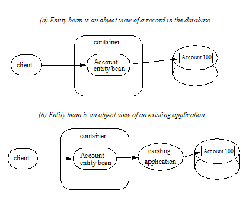
6.2. Entity Bean Provider’s View of Persistence
Using bean-managed persistence, the entity Bean Provider writes database access calls (e.g. using JDBC TM or SQLJ) directly in the entity bean component. The data access calls are performed in the ejbCreate<METHOD>, ejbRemove, ejbFind<METHOD>, ejbLoad, and ejbStore methods, and/or in the business methods.
The data access calls can be coded directly into the entity bean class, or they can be encapsulated in a data access component that is part of the entity bean. Directly coding data access calls in the entity bean class may make it more difficult to adapt the entity bean to work with a database that has a different schema, or with a different type of database.
We expect that most enterprise beans with bean-managed persistence will be created by application development tools which will encapsulate data access in components. These data access components will probably not be the same for all tools. Further, if the data access calls are encapsulated in data access components, the data access components may require deployment interfaces to allow adapting data access to different schemas or even to a different database type. This EJB specification does not define the architecture for data access objects, strategies for tailoring and deploying data access components or ensuring portability of these components for bean-managed persistence.
6.3. Runtime Execution Model
This section describes the runtime model and the classes used in the description of the contract between an entity bean with bean-managed persistence and its container.
===
Overview of the Entity Bean Runtime Execution Model
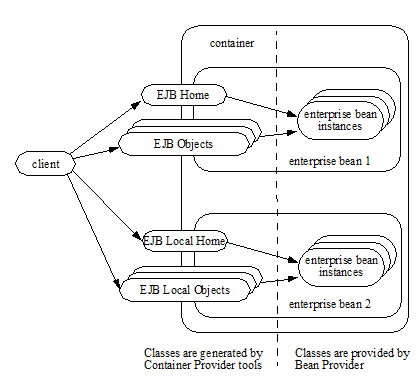
An enterprise bean instance is an object whose class is provided by the Bean Provider.
An entity EJBObject or EJBLocalObject is an object whose class is generated at deployment time by the Container Provider’s tools. The entity EJBObject class implements the entity bean’s remote interface. The entity EJBLocalObject class implements the entity bean’s local interface. A client never references an entity bean instance directly—a client always references an entity EJBObject or entity EJBLocalObject whose class is generated by the Container Provider’s tools.
An entity EJBHome or EJBLocalHome object provides the life cycle operations (create, remove, find) for its entity objects as well as home business methods, which are not specific to an entity bean instance. The class for the entity EJBHome or EJBLocalHome object is generated by the Container Provider’s tools at deployment time. The entity EJBHome or EJBLocalHome object implements the entity bean’s home interface that was defined by the Bean Provider.
6.4. Instance Life Cycle
===
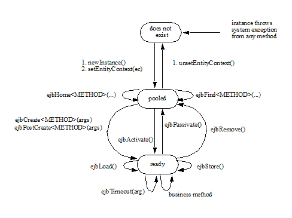
An entity bean instance is in one of the following three states:
It does not exist.
Pooled state. An instance in the pooled state is not associated with any particular entity object identity.
Ready state. An instance in the ready state is assigned an entity object identity.
The following steps describe the life cycle of an entity bean instance:
An entity bean instance’s life starts when the container creates the instance using newInstance. The container then invokes the setEntityContext method to pass the instance a reference to the EntityContext interface. The EntityContext interface allows the instance to invoke services provided by the container and to obtain the information about the caller of a client-invoked method.
The instance enters the pool of available instances. Each entity bean has its own pool. While the instance is in the available pool, the instance is not associated with any particular entity object identity. All instances in the pool are considered equivalent, and therefore any instance can be assigned by the container to any entity object identity at the transition to the ready state. While the instance is in the pooled state, the container may use the instance to execute any of the entity bean’s finder methods (shown as ejbFind<METHOD> in the diagram) or home methods (shown as ejbHome<METHOD> in the diagram). The instance does not move to the ready state during the execution of a finder or a home method.
An instance transitions from the pooled state to the ready state when the container selects that instance to service a client call to an entity object or an ejbTimeout method. There are two possible transitions from the pooled to the ready state: through the ejbCreate <METHOD> and ejbPostCreate <METHOD> methods, or through the ejbActivate method. The container invokes the ejbCreate <METHOD> _ and _ejbPostCreate <METHOD> methods when the instance is assigned to an entity object during entity object creation (i.e., when the client invokes a create <METHOD> method on the entity bean’s home object). The container invokes the ejbActivate method on an instance when an instance needs to be activated to service an invocation on an existing entity object—this occurs because there is no suitable instance in the ready state to service the client’s call or the ejbTimeout method.
When an entity bean instance is in the ready state, the instance is associated with a specific entity object identity. While the instance is in the ready state, the container can invoke the ejbLoad and ejbStore methods zero or more times. A business method can be invoked on the instance zero or more times. The ejbTimeout method can be invoked on the instance zero or more times. Invocations of the ejbLoad and ejbStore methods can be arbitrarily mixed with invocations of business methods or the ejbTimeout method. The purpose of the ejbLoad and ejbStore methods is to synchronize the state of the instance with the state of the entity in the underlying data source—the container can invoke these methods whenever it determines a need to synchronize the instance’s state.
The container can choose to passivate an entity bean instance within a transaction. To passivate an instance, the container first invokes the ejbStore method to allow the instance to synchronize the database state with the instance’s state, and then the container invokes the ejbPassivate method to return the instance to the pooled state.
Eventually, the container will transition the instance to the pooled state. There are three possible transitions from the ready to the pooled state: through the ejbPassivate method, through the ejbRemove method, and because of a transaction rollback for ejbCreate , ejbPostCreate , or ejbRemove (not shown in See Life Cycle of an Entity Bean Instance.). The container invokes the ejbPassivate method when the container wants to disassociate the instance from the entity object identity without removing the entity object. The container invokes the ejbRemove method when the container is removing the entity object (i.e., when the client invoked the remove method on the entity object’s component interface, or a remove method on the entity bean’s home interface). If ejbCreate , ejbPostCreate , or ejbRemove is called and the transaction rolls back, the container will transition the bean instance to the pooled state.
When the instance is put back into the pool, it is no longer associated with an entity object identity. The container can assign the instance to any entity object within the same entity bean home.
An instance in the pool can be removed by calling the unsetEntityContext method on the instance.
Notes:
The EntityContext interface passed by the container to the instance in the setEntityContext method is an interface, not a class that contains static information. For example, the result of the EntityContext.getPrimaryKey method might be different each time an instance moves from the pooled state to the ready state, and the result of the getCallerPrincipal and isCallerInRole methods may be different in each business method.
A RuntimeException thrown from any method of the entity bean class (including the business methods and the callbacks invoked by the container) results in the transition to the “does not exist” state. The container must not invoke any method on the instance after a RuntimeException has been caught. From the client perspective, the corresponding entity object continues to exist. The client can continue accessing the entity object through its component interface because the container can use a different entity bean instance to delegate the client’s requests. Exception handling is described further in Chapter See Exception Handling.
The container is not required to maintain a pool of instances in the pooled state. The pooling approach is an example of a possible implementation, but it is not the required implementation. Whether the container uses a pool or not has no bearing on the entity bean coding style.
6.5. The Entity Bean Component Contract
This section specifies the contract between an entity bean with bean-managed persistence and its container.
6.6. Entity Bean Instance’s View
The following describes the entity bean instance’s view of the contract:
The Bean Provider is responsible for implementing the following methods in the entity bean class:
A public constructor that takes no arguments. The container uses this constructor to create instances of the entity bean class.
_public void setEntityContext(EntityContext ic)_ ;
A container uses this method to pass a reference to the EntityContext interface to the entity bean instance. If the entity bean instance needs to use the EntityContext interface during its lifetime, it must remember the EntityContext interface in an instance variable.
This method executes with an unspecified transaction context (Refer to EJB Core Contracts and Requirements document See EJB 3.2 Core Contracts and Subsection 8.6.5 for how the container executes methods with an unspecified transaction context). An identity of an entity object is not available during this method.
The instance can take advantage of the setEntityContext method to allocate any resources that are to be held by the instance for its lifetime. Such resources cannot be specific to an entity object identity because the instance might be reused during its lifetime to serve multiple entity object identities.
_public void unsetEntityContext();_
A container invokes this method before terminating the life of the instance.
This method executes with an unspecified transaction context. An identity of an entity object is not available during this method.
The instance can take advantage of the unsetEntityContext method to free any resources that are held by the instance. (These resources typically had been allocated by the setEntityContext method.)
_public PrimaryKeyClass ejbCreate_ <METHOD>(...);
There are zero21 or more ejbCreate<METHOD> methods, whose signatures match the signatures of the create<METHOD> methods of the entity bean home interface. The container invokes an ejbCreate <METHOD> method on an entity bean instance when a client invokes a matching create<METHOD> method to create an entity object.
The implementation of the ejbCreate <METHOD> method typically validates the client-supplied arguments, and inserts a record representing the entity object into the database. The method also initializes the instance’s variables. The ejbCreate<METHOD> method must return the primary key for the created entity object.
An ejbCreate <METHOD> method executes in the transaction context determined by the transaction attribute of the matching create<METHOD> method, as described in EJB Core Contracts and Requirements document See EJB 3.2 Core Subsection “Container-Managed Transaction Demarcation for Business Methods”.
_public void ejbPostCreate_ <METHOD> _(...);_
For each ejbCreate<METHOD> method, there is a matching ejbPostCreate<METHOD> method that has the same input parameters but whose return value is void. The container invokes the matching ejbPostCreate<METHOD> method on an instance after it invokes the ejbCreate<METHOD> method with the same arguments. The entity object identity is available during the ejbPostCreate<METHOD> method. The instance may, for example, obtain the component interface of the associated entity object and pass it to another enterprise bean as a method argument.
An ejbPostCreate <METHOD> method executes in the same transaction context as the previous ejbCreate<METHOD> method.
_public void ejbActivate();_
The container invokes this method on the instance when the container picks the instance from the pool and assigns it to a specific entity object identity. The ejbActivate method gives the entity bean instance the chance to acquire additional resources that it needs while it is in the ready state.
This method executes with an unspecified transaction context. The instance can obtain the identity of the entity object via the getPrimaryKey, getEJBLocalObject, or getEJBObject method on the entity context. The instance can rely on the fact that the primary key and entity object identity will remain associated with the instance until the completion of ejbPassivate or ejbRemove.
Note that the instance should not use the ejbActivate method to read the state of the entity from the database; the instance should load its state only in the ejbLoad method.
_public void ejbPassivate()_ ; + The container invokes this method on an instance when the container decides to disassociate the instance from an entity object identity, and to put the instance back into the pool of available instances. The _ejbPassivate_ method gives the instance the chance to release any resources that should not be held while the instance is in the pool. (These resources typically had been allocated during the _ejbActivate_ method.)
This method executes with an unspecified transaction context. The instance can still obtain the identity of the entity object via the getPrimaryKey, getEJBLocalObject, or getEJBObject method of the EntityContext interface.
Note that an instance should not use the ejbPassivate method to write its state to the database; an instance should store its state only in the ejbStore method.
_public void ejbRemove()_ ;
The container invokes this method on an instance as a result of a client’s invoking a remove method. The instance is in the ready state when ejbRemove is invoked and it will be entered into the pool when the method completes.
This method executes in the transaction context determined by the transaction attribute of the remove method that triggered the ejbRemove method. The instance can still obtain the identity of the entity object via the getPrimaryKey, getEJBLocalObject, or getEJBObject method of the EntityContext interface.
The container synchronizes the instance’s state before it invokes the ejbRemove method. This means that the state of the instance variables at the beginning of the ejbRemove method is the same as it would be at the beginning of a business method.
An entity bean instance should use this method to remove the entity object’s representation from the database.
Since the instance will be entered into the pool, the state of the instance at the end of this method must be equivalent to the state of a passivated instance. This means that the instance must release any resource that it would normally release in the ejbPassivate method.
_public void ejbLoad()_ ;
The container invokes this method on an instance in the ready state to inform the instance that it should synchronize the entity state cached in its instance variables from the entity state in the database. The instance should be prepared for the container to invoke this method at any time that the instance is in the ready state.
If the instance is caching the entity state (or parts of the entity state), the instance should not use the previously cached state in the subsequent business method. The instance may take advantage of the ejbLoad method, for example, to refresh the cached state by reading it from the database.
This method executes in the transaction context determined by the transaction attribute of the business method or ejbTimeout method that triggered the ejbLoad method.
_public void ejbStore();_
The container invokes this method on an instance to inform the instance that the instance should synchronize the entity state in the database with the entity state cached in its instance variables. The instance should be prepared for the container to invoke this method at any time that the instance is in the ready state.
An instance should write any updates cached in the instance variables to the database in the ejbStore method.
This method executes in the same transaction context as the previous ejbLoad or ejbCreate <METHOD> method invoked on the instance. All business methods or the ejbTimeout method invoked between the previous ejbLoad or ejbCreate <METHOD> method and this ejbStore method are also invoked in the same transaction context.
public <primary key type or collection> ejbFind<METHOD>(…);
The container invokes this method on the instance when the container selects the instance to execute a matching client-invoked find<METHOD> method. The instance is in the pooled state (i.e., it is not assigned to any particular entity object identity) when the container selects the instance to execute the ejbFind<METHOD> method on it, and it is returned to the pooled state when the execution of the ejbFind<METHOD> method completes.
The ejbFind<METHOD> method executes in the transaction context determined by the transaction attribute of the matching find method, as described in EJB Core Contracts and Requirements document See EJB 3.2 Core Subsection “Container-Managed Transaction Demarcation for Business Methods”.
The implementation of an ejbFind<METHOD> method typically uses the method’s arguments to locate the requested entity object or a collection of entity objects in the database. The method must return a primary key or a collection of primary keys to the container (see Subsection See Finder Method Return Type).
public <type> ejbHome<METHOD>(…);
The container invokes this method on any instance when the container selects the instance to execute a matching client-invoked <METHOD> home method. The instance is in the pooled state (i.e., it is not assigned to any particular entity object identity) when the container selects the instance to execute the ejbHome<METHOD> method on it, and it is returned to the pooled state when the execution of the ejbHome<METHOD> method completes.
The ejbHome<METHOD> method executes in the transaction context determined by the transaction attribute of the matching <METHOD> home method, as described in EJB Core Contracts and Requirements document See EJB 3.2 Core Subsection “Container-Managed Transaction Demarcation for Business Methods”.
_public void ejbTimeout(...);_
The container invokes the ejbTimeout method on an instance when a timer for the instance has expired. The ejbTimeout method notifies the instance of the time-based event and allows the instance to execute the business logic to handle it.
The ejbTimeout method executes in the transaction context determined by its transaction attribute.
6.7. Container’s View
This subsection describes the container’s view of the state management contract. The container must call the following methods:
_public void setEntityContext(ec)_ ;
The container invokes this method to pass a reference to the EntityContext interface to the entity bean instance. The container must invoke this method after it creates the instance, and before it puts the instance into the pool of available instances.
The container invokes this method with an unspecified transaction context. At this point, the EntityContext is not associated with any entity object identity.
_public void unsetEntityContext()_ ;
The container invokes this method when the container wants to reduce the number of instances in the pool. After this method completes, the container must not reuse this instance.
The container invokes this method with an unspecified transaction context.
_public PrimaryKeyClass ejbCreate_ <METHOD> _(...)_ ; + _public void ejbPostCreate_ <METHOD> _(...)_ ;
The container invokes these two methods during the creation of an entity object as a result of a client invoking a create<METHOD> method on the entity bean’s home interface.
The container first invokes the ejbCreate<METHOD> method whose signature matches the create<METHOD> method invoked by the client. The ejbCreate<METHOD> method returns a primary key for the created entity object. The container creates an entity EJBObject reference and/or EJBLocalObject reference for the primary key. The container then invokes a matching ejbPostCreate<METHOD> method to allow the instance to fully initialize itself. Finally, the container returns the entity object’s remote interface (i.e., a reference to the entity EJBObject) to the client if the client is a remote client, or the entity object’s local interface (i.e., a reference to the entity EJBLocalObject) to the client if the client is a local client.
The container must invoke the ejbCreate<METHOD> and ejbPostCreate<METHOD> methods in the transaction context determined by the transaction attribute of the matching create<METHOD> method, as described in EJB Core Contracts and Requirements document See EJB 3.2 Core Subsection “Container-Managed Transaction Demarcation for Business Methods”.
_public void ejbActivate()_ ;
The container invokes this method on an entity bean instance at activation time (i.e., when the instance is taken from the pool and assigned to an entity object identity). The container must ensure that the primary key of the associated entity object is available to the instance if the instance invokes the getPrimaryKey, getEJBLocalObject, or getEJBObject method on its EntityContext interface.
The container invokes this method with an unspecified transaction context.
Note that instance is not yet ready for the delivery of a business method. The container must still invoke the ejbLoad method prior to a business method or ejbTimeout method invocation.
_public void ejbPassivate()_ ;
The container invokes this method on an entity bean instance at passivation time (i.e., when the instance is being disassociated from an entity object identity and moved into the pool). The container must ensure that the identity of the associated entity object is still available to the instance if the instance invokes the getPrimaryKey, getEJBLocalObject, or getEJBObject method on its entity context.
The container invokes this method with an unspecified transaction context.
Note that if the instance state has been updated by a transaction, the container must first invoke the ejbStore method on the instance before it invokes ejbPassivate on it.
_public void ejbRemove();_
The container invokes this method before it ends the life of an entity object as a result of a client invoking a remove operation.
The container invokes this method in the transaction context determined by the transaction attribute of the invoked remove method. The container must ensure that the identity of the associated entity object is still available to the instance in the ejbRemove method (i.e., the instance can invoke the getPrimaryKey, getEJBLocalObject, or getEJBObject method on its EntityContext in the ejbRemove method).
The container must ensure that the instance’s state is synchronized from the state in the database before invoking the ejbRemove method (i.e., if the instance is not already synchronized from the state in the database, the container must invoke ejbLoad before it invokes ejbRemove).
_public void ejbLoad()_ ;
The container must invoke this method on the instance whenever it becomes necessary for the instance to synchronize its instance state from its state in the database. The exact times that the container invokes ejbLoad depend on the configuration of the component and the container, and are not defined by the EJB architecture. Typically, the container will call ejbLoad before the first business method within a transaction or before invoking the ejbTimeout method to ensure that the instance can refresh its cached state of the entity object from the database. After the first ejbLoad within a transaction, the container is not required to recognize that the state of the entity object in the database has been changed by another transaction, and it is not required to notify the instance of this change via another ejbLoad call.
The container must invoke this method in the transaction context determined by the transaction attribute of the business method or ejbTimeout method that triggered the ejbLoad method.
_public void ejbStore()_ ;
The container must invoke this method on the instance whenever it becomes necessary for the instance to synchronize its state in the database with the state of the instance’s fields. This synchronization always happens at the end of a transaction, unless the bean is specified as read-only (see section See Read-only Entity Beans). However, the container may also invoke this method when it passivates the instance in the middle of a transaction, or when it needs to transfer the most recent state of the entity object to another instance for the same entity object in the same transaction (see EJB Core Contracts and Requirements document See EJB 3.2 Core Subsection “Access from Multiple Clients in the Same Transaction Context”).
The container must invoke this method in the same transaction context as the previously invoked ejbLoad, ejbCreate <METHOD> , or ejbTimeout method.
public <primary key type or collection> ejbFind<METHOD>(…);
The container invokes the ejbFind<METHOD> method on an instance when a client invokes a matching find<METHOD> method on the entity bean’s home interface. The container must pick an instance that is in the pooled state (i.e., the instance is not associated with any entity object identity) for the execution of the ejbFind<METHOD> method. If there is no instance in the pooled state, the container creates one and calls the setEntityContext method on the instance before dispatching the finder method.
Before invoking the ejbFind<METHOD> method, the container must first synchronize the state of any non-read-only entity bean instances that are participating in the same transaction context as is used to execute the ejbFind<METHOD> by invoking the ejbStore method on those entity bean instances. 22
After the ejbFind<METHOD> method completes, the instance remains in the pooled state. The container may, but is not required to, immediately activate the objects that were located by the finder using the transition through the ejbActivate method.
The container must invoke the ejbFind<METHOD> method in the transaction context determined by the transaction attribute of the matching find method, as described in EJB Core Contracts and Requirements document See EJB Subsection “Container-Managed Transaction Demarcation for Business Methods”.
If the ejbFind<METHOD> method is declared to return a single primary key, the container creates an entity EJBObject reference for the primary key and returns it to the client if the client is a remote client. If the client is a local client, the container creates and returns an entity EJBLocalObject reference for the primary key. If the ejbFind<METHOD> method is declared to return a collection of primary keys, the container creates a collection of entity EJBObject or EJBLocalObject references for the primary keys returned from ejbFind<METHOD>, and returns the collection to the client. (See Subsection See Finder Method Return Type for information on collections.)
public __ <type> ejbHome<METHOD>(…);
The container invokes the ejbHome<METHOD> method on an instance when a client invokes a matching <METHOD> home method on the entity bean’s home interface. The container must pick an instance that is in the pooled state (i.e., the instance is not associated with any entity object identity) for the execution of the ejbHome<METHOD> method. If there is no instance in the pooled state, the container creates one and calls the setEntityContext method on the instance before dispatching the home method.
After the ejbHome<METHOD> method completes, the instance remains in the pooled state.
The container must invoke the ejbHome<METHOD> method in the transaction context determined by the transaction attribute of the matching <METHOD> home method, as described in EJB Core Contracts and Requirements document See EJB Subsection “Container-Managed Transaction Demarcation for Business Methods”.
_public void ejbTimeout(...);_
The container invokes the ejbTimeout method on the instance when a timer with which the entity has been registered expires. If there is no suitable instance in the ready state, the container must activate an instance, invoking the ejbActivate method and transitioning it to the ready state.
The container invokes the ejbTimeout method in the context of a transaction determined by its transaction attribute.
6.8. Read-only Entity Beans
Compliant implementations of this specification may optionally support read-only entity beans. A read-only entity bean is an entity bean whose instances are not intended to be updated and/or created by the application. Read-only beans are best suited for situations where the underlying data never changes or changes infrequently.
Containers that support read-only beans do not call the ejbStore method on them. The ejbLoad method should typically be called by the container when the state of the bean instance is initially loaded from the database, or at designated refresh intervals.23
If a read-only bean is used, the state of such a bean should not be updated by the application, and the behavior is unspecified if this occurs.24
Read-only beans are designated by vendor-specific means that are outside the scope of this specification, and their use is therefore not portable.
6.9. The EntityContext Interface
A container provides the entity bean instances with an EntityContext , which gives the entity bean instance access to the instance’s context maintained by the container. The EntityContext interface has the following methods:
The getEJBObject method returns the entity bean’s remote interface.
The getEJBHome method returns the entity bean’s remote home interface.
The getEJBLocalObject method returns the entity bean’s local interface.
The getEJBLocalHome method returns the entity bean’s local home interface.
The getCallerPrincipal method returns the java.security.Principal that identifies the invoker.
The isCallerInRole method tests if the entity bean instance’s caller has a particular role.
The setRollbackOnly method allows the instance to mark the current transaction such that the only outcome of the transaction is a rollback.
The getRollbackOnly method allows the instance to test if the current transaction has been marked for rollback.
The getPrimaryKey method returns the entity bean’s primary key.
The getTimerService method returns the javax.ejb.TimerService interface.
The getUserTransaction method returns the javax.transaction.UserTransaction interface. Entity bean instances must not call this method.
The lookup method enables the entity bean to look up its environment entries in the JNDI naming context.
6.10. Operations Allowed in the Methods of the Entity Bean Class
Table See Operations Allowed in the Methods of an Entity Bean defines the methods of an entity bean class in which the enterprise bean instances can access the methods of the javax.ejb.EntityContext interface, the java:comp/env environment naming context, resource managers, TimerService and Timer methods, the EntityManagerFactory and EntityManager methods, and other enterprise beans.
If an entity bean instance attempts to invoke a method of the EntityContext interface, and the access is not allowed in Table See Operations Allowed in the Methods of an Entity Bean, the container must throw the java.lang.IllegalStateException.
If an entity bean instance attempts to invoke a method of the TimerService or Timer interface and the access is not allowed in Table See Operations Allowed in the Methods of an Entity Bean, the container must throw the java.lang.IllegalStateException.
If an entity bean instance attempts to access a resource manager, an enterprise bean, or an entity manager or entity manager factory, and the access is not allowed in Table See Operations Allowed in the Methods of an Entity Bean, the behavior is undefined by the EJB architecture.
===
Bean method
Bean method can perform the following operations
constructor
-
setEntityContext
unsetEntityContext
EntityContext methods: getEJBHome, getEJBLocalHome, lookup
JNDI access to java:comp/env
ejbCreate
EntityContext methods: getEJBHome, getEJBLocalHome, getCallerPrincipal, getRollbackOnly, isCallerInRole, setRollbackOnly, getTimerService, lookup
JNDI access to java:comp/env
Resource manager access
Enterprise bean access
EntityManagerFactory access
EntityManager access
ejbPostCreate
EntityContext methods: getEJBHome, getEJBLocalHome, getCallerPrincipal, getRollbackOnly, isCallerInRole, setRollbackOnly, getEJBObject, getEJBLocalObject, getPrimaryKey, getTimerService, lookup
JNDI access to java:comp/env
Resource manager access
Enterprise bean access
Timer service or Timer methods
EntityManagerFactory access
EntityManager access
ejbRemove
EntityContext methods: getEJBHome, getEJBLocalHome, getCallerPrincipal, getRollbackOnly, isCallerInRole, setRollbackOnly, getEJBObject, getEJBLocalObject, getPrimaryKey, getTimerService, lookup
JNDI access to java:comp/env
Resource manager access
Enterprise bean access
Timer service or Timer methods
EntityManagerFactory access
EntityManager access
ejbFind
EntityContext methods: getEJBHome, getEJBLocalHome, getCallerPrincipal, getRollbackOnly, isCallerInRole, setRollbackOnly, lookup
JNDI access to java:comp/env
Resource manager access
Enterprise bean access
EntityManagerFactory access
EntityManager access
ejbHome
EntityContext methods: getEJBHome, getEJBLocalHome, getCallerPrincipal, getRollbackOnly, isCallerInRole, setRollbackOnly, getTimerService, lookup
JNDI access to java:comp/env
Resource manager access
Enterprise bean access
EntityManagerFactory access
EntityManager access
ejbActivate
ejbPassivate
EntityContext methods: getEJBHome, getEJBLocalHome, getEJBObject, getEJBLocalObject, getPrimaryKey, getTimerService, lookup
JNDI access to java:comp/env
ejbLoad
ejbStore
EntityContext methods: getEJBHome, getEJBLocalHome , getCallerPrincipal, getRollbackOnly, isCallerInRole, setRollbackOnly, getEJBObject, getEJBLocalObject, getPrimaryKey, getTimerService, lookup
JNDI access to java:comp/env
Resource manager access
Enterprise bean access
Timer service or Timer methods
EntityManagerFactory access
EntityManager access
business method
from component interface
EntityContext methods: getEJBHome, getEJBLocalHome, getCallerPrincipal, getRollbackOnly, isCallerInRole, setRollbackOnly, getEJBObject, getEJBLocalObject, getPrimaryKey, getTimerService, lookup
JNDI access to java:comp/env
Resource manager access
Enterprise bean access
Timer service or Timer methods
EntityManagerFactory access
EntityManager access
ejbTimeout
EntityContext methods: getEJBHome, getEJBLocalHome, getCallerPrincipal, isCallerInRole, getRollbackOnly, setRollbackOnly, getEJBObject, getEJBLocalObject, getPrimaryKey, getTimerService, lookup
JNDI access to java:comp/env
Resource manager access
Enterprise bean access
Timer service or Timer methods
EntityManagerFactory access
EntityManager access
Additional restrictions:
The getRollbackOnly and setRollbackOnly methods of the EntityContext interface should be used only in the enterprise bean methods that execute in the context of a transaction. The container must throw the java.lang.IllegalStateException if the methods are invoked while the instance is not associated with a transaction.
Reasons for disallowing operations:
Invoking the getEJBObject, getEJBLocalObject, and getPrimaryKey methods is disallowed in the entity bean methods in which there is no entity object identity associated with the instance.
Invoking the getEJBObject and getEJBHome methods is disallowed if the entity bean does not define a remote client view.
Invoking the getEJBLocalObject and getEJBLocalHome methods is disallowed if the entity bean does not define a local client view.
Invoking the getRollbackOnly and setRollbackOnly methods is disallowed in the entity bean methods for which the container does not have a meaningful transaction context. These are the methods that have the NotSupported, Never, or Supports transaction attribute.
Accessing resource managers and enterprise beans is disallowed in the entity bean methods for which the container does not have a meaningful transaction context or client security context.
6.11. Caching of Entity State and the ejbLoad and ejbStore Methods
An instance of an entity bean with bean-managed persistence can cache the entity object’s state between business method invocations. An instance may choose to cache the entire entity object’s state, part of the state, or no state at all.
The container-invoked ejbLoad and ejbStore methods assist the instance with the management of the cached entity object’s state. The instance should handle the ejbLoad and ejbStore methods as follows:
When the container invokes the ejbStore method on the instance, the instance should push all cached updates of the entity object’s state to the underlying database. The container invokes the ejbStore method at the end of a transaction25, and may also invoke it at other times when the instance is in the ready state. (For example the container may invoke ejbStore when passivating an instance in the middle of a transaction, or when transferring the instance’s state to another instance to support distributed transactions in a multi-process server.)
When the container invokes the ejbLoad method on the instance, the instance should discard any cached entity object’s state. The instance may, but is not required to, refresh the cached state by reloading it from the underlying database.
The following examples, which are illustrative but not prescriptive, show how an instance may cache the entity object’s state:
An instance loads the entire entity object’s state in the ejbLoad method and caches it until the container invokes the ejbStore method. The business methods read and write the cached entity state. The ejbStore method writes the updated parts of the entity object’s state to the database.
An instance loads the most frequently used part of the entity object’s state in the ejbLoad method and caches it until the container invokes the ejbStore method. Additional parts of the entity object’s state are loaded as needed by the business methods. The ejbStore method writes the updated parts of the entity object’s state to the database.
An instance does not cache any entity object’s state between business methods. The business methods access and modify the entity object’s state directly in the database. The ejbLoad and ejbStore methods have an empty implementation.
We expect that most entity developers will not manually code the cache management and data access calls in the entity bean class. We expect that they will rely on application development tools to provide various data access components that encapsulate data access and provide state caching.
6.12. ejbLoad and ejbStore with the NotSupported Transaction Attribute
The use of the ejbLoad and ejbStore methods for caching an entity object’s state in the instance works well only if the container can use transaction boundaries to drive the ejbLoad and ejbStore methods. When the NotSupported26 transaction attribute is assigned to a component interface method, the corresponding enterprise bean class method executes with an unspecified transaction context (See EJB Core Contracts and Requirements document See EJB 3.2 Core Contracts and Requirements. Subsection “Handling of Methods that Run with an unspecified transaction context”). This means that the container does not have any well-defined transaction boundaries to drive the ejbLoad and ejbStore methods on the instance.
Therefore, the ejbLoad and ejbStore methods are “unreliable” for the instances that the container uses to dispatch the methods with an unspecified transaction context. The following are the only guarantees that the container provides for the instances that execute the methods with an unspecified transaction context:
The container invokes at least one ejbLoad between ejbActivate and the first business method in the instance.
The container invokes at least one ejbStore between the last business method on the instance and the ejbPassivate method27.
Because the entity object’s state accessed between the ejbLoad and ejbStore method pair is not protected by a transaction boundary for the methods that execute with an unspecified transaction context, the Bean Provider should not attempt to use the ejbLoad and ejbStore methods to control caching of the entity object’s state in the instance. Typically, the implementation of the ejbLoad and ejbStore methods should be a no-op (i.e., an empty method), and each business method should access the entity object’s state directly in the database.
6.14. Single-Object Finder
Some finder methods (such as ejbFindByPrimaryKey) are designed to return at most one entity object. For single-object finders, the result type of a find<METHOD>method defined in the entity bean’s remote home interface is the entity bean’s remote interface, and the result type of the find<METHOD>method defined in the entity bean’s local home interface is the entity bean’s local interface. The result type of the corresponding ejbFind<METHOD> method defined in the entity’s implementation class is the entity bean’s primary key type.
The following code illustrates the definition of a single-object finder on the remote home interface.
public AccountHome extends javax.ejb.EJBHome \{
...
Account findByPrimaryKey(AccountPrimaryKey primkey)
throws FinderException, RemoteException;
...
}
Note that a finder method defined on the local home interface, however, must not throw the RemoteException .
public AccountBean implements javax.ejb.EntityBean \{
...
public AccountPrimaryKey ejbFindByPrimaryKey(
AccountPrimaryKey primkey)
throws FinderException
\{
...
}
...
}
6.15. Multi-Object Finders
Some finder methods are designed to return multiple entity objects. For multi-object finders defined in the entity bean’s remote home interface, the result type of the find<METHOD>method is a collection of objects implementing the entity bean’s remote interface. For multi-object finders defined in the entity bean’s local home interface, the result type is a collection of objects implementing the entity bean’s local interface. In either case, the result type of the corresponding ejbFind<METHOD> implementation method defined in the entity bean’s implementation class is a collection of objects of the entity bean’s primary key type.
The Bean Provider can choose two types to define a collection type for a finder:
the Java™ 2 java.util.Collection interface
the JDK™ 1.1 java.util.Enumeration interface
A Bean Provider targeting containers and clients based on Java 2 should use the java.util.Collection interface for the finder’s result type.
A Bean Provider who wants to ensure that the entity bean is compatible with containers and clients based on JDK 1.1 must use the java.util.Enumeration interface for the finder’s result type28.
The Bean Provider must ensure that the objects in the java.util.Enumeration or java.util.Collection returned from the ejbFind<METHOD> method are instances of the entity bean’s primary key class.
A client program must use the PortableRemoteObject.narrow method to convert the objects contained in the collections returned by a finder method on the entity bean’s remote home interface to the entity bean’s remote interface type.
The following is an example of a multi-object finder method definition that is compatible with containers and clients based on Java 2:
public AccountHome extends javax.ejb.EJBHome \{
...
java.util.Collection findLargeAccounts(double limit)
throws FinderException, RemoteException;
...
}
public AccountBean implements javax.ejb.EntityBean \{
...
public java.util.Collection ejbFindLargeAccounts(
double limit) throws FinderException
\{
...
}
...
}
The following is an example of a multi-object finder method definition compatible with containers and clients that are based on both JDK 1.1 and Java 2:
public AccountHome extends javax.ejb.EJBHome \{
...
java.util.Enumeration findLargeAccounts(double limit)
throws FinderException, RemoteException;
...
}
public AccountBean implements javax.ejb.EntityBean \{
...
public java.util.Enumeration ejbFindLargeAccounts(
double limit) throws FinderException
\{
...
}
...
}
6.16. Timer Notifications
An entity bean can be registered with the EJB Timer Service for time-based event notifications if it implements the javax.ejb.TimedObject interface. The container invokes the bean instance’s ejbTimeout method when a timer for the bean has expired. See See Timer Service.
6.17. Standard Application Exceptions for Entities
The EJB specification defines the following standard application exceptions:
javax.ejb.CreateException
javax.ejb.DuplicateKeyException
javax.ejb.FinderException
javax.ejb.ObjectNotFoundException
javax.ejb.RemoveException
6.18. CreateException
From the client’s perspective, a CreateException (or a subclass of CreateException) indicates that an application level error occurred during the create<METHOD> operation. If a client receives this exception, the client does not know, in general, whether the entity object was created but not fully initialized, or not created at all. Also, the client does not know whether or not the transaction has been marked for rollback. (However, the client may determine the transaction status using the UserTransaction interface or the setRollbackOnly method of the EJBContext interface.)
The Bean Provider throws the CreateException (or subclass of CreateException) from the ejbCreate<METHOD> and ejbPostCreate<METHOD> methods to indicate an application-level error from the create or initialization operation. Optionally, the Bean Provider may mark the transaction for rollback before throwing this exception.
The Bean Provider is encouraged to mark the transaction for rollback only if data integrity would be lost if the transaction were committed by the client. Typically, when a CreateException is thrown, it leaves the database in a consistent state, allowing the client to recover. For example, ejbCreate may throw the CreateException to indicate that the some of the arguments to the create<METHOD> method are invalid.
The container treats the CreateException as any other application exception. See Section See Container Provider Responsibilities.
6.19. DuplicateKeyException
The DuplicateKeyException is a subclass of CreateException. It is thrown by the ejbCreate<METHOD> method to indicate to the client that the entity object cannot be created because an entity object with the same key already exists. The unique key causing the violation may be the primary key, or another key defined in the underlying database.
Normally, the Bean Provider should not mark the transaction for rollback before throwing the exception.
When the client receives the DuplicateKeyException, the client knows that the entity was not created, and that the client’s transaction has not typically been marked for rollback.
6.20. FinderException
From the client’s perspective, a FinderException (or a subclass of FinderException) indicates that an application level error occurred during the find operation. Typically, the client’s transaction has not been marked for rollback because of the FinderException.
The Bean Provider throws the FinderException (or subclass of FinderException) from the ejbFind<METHOD> method to indicate an application-level error in the finder method. The Bean Provider should not, typically, mark the transaction for rollback before throwing the FinderException.
The container treats the FinderException as any other application exception. See Section See Container Provider Responsibilities.
6.21. ObjectNotFoundException
The ObjectNotFoundException is a subclass of FinderException. It is thrown by the ejbFind<METHOD> method to indicate that the requested entity object does not exist.
Only single-object finders (see Subsection See Finder Method Return Type) should throw this exception. Multi-object finders must not throw this exception. Multi-object finders should return an empty collection as an indication that no matching objects were found.
6.22. RemoveException
From the client’s perspective, a RemoveException (or a subclass of RemoveException) indicates that an application level error occurred during a remove operation. If a client receives this exception, the client does not know, in general, whether the entity object was removed or not. The client also does not know if the transaction has been marked for rollback. (However, the client may determine the transaction status using the UserTransaction interface.)
The Bean Provider throws the RemoveException (or subclass of RemoveException) from the ejbRemove method to indicate an application-level error from the entity object removal operation. Optionally, the Bean Provider may mark the transaction for rollback before throwing this exception.
The Bean Provider is encouraged to mark the transaction for rollback only if data integrity would be lost if the transaction were committed by the client. Typically, when a RemoveException is thrown, it leaves the database in a consistent state, allowing the client to recover.
The container treats the RemoveException as any other application exception. See Section See Container Provider Responsibilities.
6.23. Commit Options
The Entity Bean protocol is designed to give the container the flexibility to select the disposition of the instance state at transaction commit time. This flexibility allows the container to optimally manage the caching of entity object’s state and the association of an entity object identity with the enterprise bean instances.
The container can select from the following commit-time options:
Option A: The container caches a “ready” instance between transactions. The container ensures that the instance has exclusive access to the state of the object in the persistent storage. Therefore, the container does not have to synchronize the instance’s state from the persistent storage at the beginning of the next transaction.
Option B: The container caches a “ready” instance between transactions. In contrast to Option A, in this option the container does not ensure that the instance has exclusive access to the state of the object in the persistent storage. Therefore, the container must synchronize the instance’s state from the persistent storage at the beginning of the next transaction.
Option C : The container does not cache a “ready” instance between transactions. The container returns the instance to the pool of available instances after a transaction has completed.
The following table provides a summary of the commit-time options.
===
Summary of Commit-Time Options
Write instance state to database
Instance stays
ready
Instance state remains valid
Option A
Yes
Yes
Yes
Option B
Yes
Yes
No
Option C
Yes
No
No
Note that the container synchronizes the instance’s state with the persistent storage at transaction commit for all three options.
The selection of the commit option is transparent to the entity bean implementation—the entity bean will work correctly regardless of the commit-time option chosen by the container. The Bean Provider writes the entity bean in the same way.
6.24. Concurrent Access from Multiple Transactions
When writing the entity bean business methods, the Bean Provider does not have to worry about concurrent access from multiple transactions. The Bean Provider may assume that the container will ensure appropriate synchronization for entity objects that are accessed concurrently from multiple transactions.
The container typically uses one of the following implementation strategies to achieve proper synchronization. (These strategies are illustrative, not prescriptive.)
The container activates multiple instances of the entity bean, one for each transaction in which the entity object is being accessed. The transaction synchronization is performed automatically by the underlying database during the database access calls performed by the business methods and the ejbTimeout method; and by the ejbLoad , ejbCreate<METHOD> , ejbStore , and ejbRemove methods. The database system provides all the necessary transaction synchronization; the container does not have to perform any synchronization logic.
===
Multiple Clients Can Access the Same Entity Object Using Multiple Instances
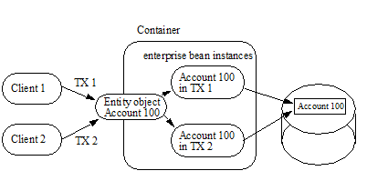
With this strategy, the type of lock acquired by ejbLoad leads to a trade-off. If ejbLoad acquires an exclusive lock on the instance’s state in the database, then throughput of read-only transactions could be impacted. If ejbLoad acquires a shared lock and the instance is updated, then ejbStore will need to promote the lock to an exclusive lock. This may cause a deadlock if it happens concurrently under multiple transactions.
The container acquires exclusive access to the entity object’s state in the database. The container activates a single instance and serializes the access from multiple transactions to this instance. The commit-time option A applies to this type of container.
===
Multiple Clients Can Access the Same Entity Object Using Single Instance
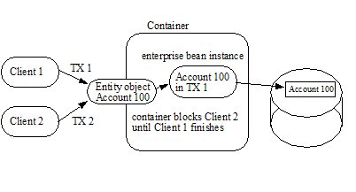
6.25. Non-reentrant and Re-entrant Instances
An entity Bean Provider can specify that an entity bean is non-reentrant. If an instance of a non-reentrant entity bean executes a client request in a given transaction context, and another request with the same transaction context arrives for the same entity object, the container will throw an exception to the second request. This rule allows the Bean Provider to program the entity bean as single-threaded, non-reentrant code.
The functionality of some entity beans may require loopbacks in the same transaction context. An example of a loopback is when the client calls entity object A, A calls entity object B, and B calls back A in the same transaction context. The entity bean’s method invoked by the loopback shares the current execution context (which includes the transaction and security contexts) with the bean’s method invoked by the client.
If the entity bean is specified as non-reentrant in the deployment descriptor, the container must reject an attempt to re-enter the instance via the entity bean’s component interface while the instance is executing a business method. (This can happen, for example, if the instance has invoked another enterprise bean, and the other enterprise bean tries to make a loopback call.) If the attempt is made to reenter the instance through the remote interface, the container must throw the java.rmi.RemoteException to the caller. If the attempt is made to reenter the instance through the local interface, the container must throw the javax.ejb.EJBException to the caller. The container must allow the call if the bean’s deployment descriptor specifies that the entity bean is re-entrant.
Re-entrant entity beans must be programmed and used with caution. First, the Bean Provider must code the entity bean with the anticipation of a loopback call. Second, since the container cannot, in general, tell a loopback from a concurrent call from a different client, the client programmer must be careful to avoid code that could lead to a concurrent call in the same transaction context.
Concurrent calls in the same transaction context targeted at the same entity object are illegal and may lead to unpredictable results. Since the container cannot, in general, distinguish between an illegal concurrent call and a legal loopback, application programmers are encouraged to avoid using loopbacks. Entity beans that do not need callbacks should be marked as non-reentrant in the deployment descriptor, allowing the container to detect and prevent illegal concurrent calls from clients.
6.26. Responsibilities of the Enterprise Bean Provider
This section describes the responsibilities of a bean-managed persistence entity Bean Provider to ensure that the entity bean can be deployed in any EJB container.
6.27. Classes and Interfaces
The Bean Provider is responsible for providing the following class files:
Entity bean class and any dependent classes
Primary key class
Entity bean’s remote interface and remote home interface, if the entity bean provides a remote client view
Entity bean’s local interface and local home interface, if the entity bean provides a local client view
The Bean Provider must provide a remote interface and a remote home interface or a local interface an local home interface for the bean. The Bean Provider may provide a remote interface, remote home interface, local interface, and local home interface for the bean. Other combinations are not allowed.
6.28. Enterprise Bean Class
The following are the requirements for an entity bean class:
The class must implement, directly or indirectly, the javax.ejb.EntityBean interface.
The class may implement, directly or indirectly, the javax.ejb.TimedObject interface.
The class must be defined as public and must not be abstract. The class must be a top level class.
The class must not be defined as final.
The class must define a public constructor that takes no arguments.
The class must not define the finalize method.
The class may, but is not required to, implement the entity bean’s component interface29. If the class implements the entity bean’s component interface, the class must provide no-op implementations of the methods defined in the javax.ejb.EJBObject or javax.ejb.EJBLocalObject interface. The container will never invoke these methods on the bean instances at runtime.
A no-op implementation of these methods is required to avoid defining the entity bean class as abstract.
The entity bean class must implement the business methods, and the ejbCreate<METHOD>, ejbPostCreate<METHOD>, ejbFind<METHOD>, and ejbHome<METHOD> methods as described later in this section.
The entity bean class may have superclasses and/or superinterfaces. If the entity bean has superclasses, the business methods, the ejbCreate and ejbPostCreate methods, the finder methods, and the methods of the EntityBean interface or the TimedObject interface may be implemented in the enterprise bean class or in any of its superclasses.
The entity bean class is allowed to implement other methods (for example helper methods invoked internally by the business methods) in addition to the methods required by the EJB specification.
6.29. ejbCreate<METHOD> Methods
The entity bean class must implement the ejbCreate<METHOD> methods that correspond to the create<METHOD> methods specified in the entity bean’s home interface.
The entity bean class may define zero or more ejbCreate<METHOD> methods whose signatures must follow these rules:
The method name must have ejbCreate as its prefix.
The method must be declared as public.
The method must not be declared as final or static.
The return type must be the entity bean’s primary key type.
The method argument and return value types must be legal types for RMI-IIOP if the e jbCreate<METHOD> corresponds to a create<METHOD> on the entity bean’s remote home interface.
The throws clause may define arbitrary application specific exceptions, including the javax.ejb.CreateException.
EJB 1.0 allowed the ejbCreate method to throw the java.rmi.RemoteException to indicate a non-application exception. This practice was deprecated in EJB 1.1—an EJB 1.1 or EJB 2.0 or later compliant enterprise bean should throw the javax.ejb.EJBException or another java.lang.RuntimeException to indicate non-application exceptions to the container (see Section See System Exceptions). An EJB 2.0 or later enterprise bean should not throw the java.rmi.RemoteException . from the ejbCreate method.
The entity object created by the ejbCreate<METHOD> method must have a unique primary key. This means that the primary key must be different from the primary keys of all the existing entity objects within the same home. The ejbCreate<METHOD> method should throw the DuplicateKeyException on an attempt to create an entity object with a duplicate primary key. However, it is legal to reuse the primary key of a previously removed entity object.
6.30. ejbPostCreate<METHOD> Methods
For each ejbCreate<METHOD> method, the entity bean class must define a matching ejbPostCreate<METHOD> method, using the following rules:
The method name must have ejbPostCreate as its prefix.
The method must be declared as public.
The method must not be declared as final or static.
The return type must be void .
The method arguments must be the same as the arguments of the matching ejbCreate<METHOD> method.
The throws clause may define arbitrary application specific exceptions, including the javax.ejb.CreateException.
EJB 1.0 allowed the ejbPostCreate method to throw the java.rmi.RemoteException to indicate a non-application exception. This practice was deprecated in EJB 1.1—an EJB 1.1 or EJB 2.0 or later compliant enterprise bean should throw the javax.ejb.EJBException or another java.lang.RuntimeException to indicate non-application exceptions to the container (see Section See System Exceptions). An EJB 2.0 or later enterprise bean should not throw the java.rmi.RemoteException . from the ejbPostCreate method.
6.31. ejbFind Methods
The entity bean class may also define additional ejbFind<METHOD> finder methods.
The signatures of the finder methods must follow the following rules:
A finder method name must start with the prefix “ ejbFind ” (e.g. ejbFindByPrimaryKey, ejbFindLargeAccounts, ejbFindLateShipments).
A finder method must be declared as public.
The method must not be declared as final or static.
The method argument types must be legal types for RMI-IIOP if the ejbFind<METHOD> method corresponds to a find<METHOD> method on the entity bean’s remote home interface.
The return type of a finder method must be the entity bean’s primary key type, or a collection of primary keys (see Subsection See Finder Method Return Type).
The throws clause may define arbitrary application specific exceptions, including the javax.ejb.FinderException.
EJB 1.0 allowed the finder methods to throw the java.rmi.RemoteException to indicate a non-application exception. This practice was deprecated in EJB 1.1—an EJB 1.1 or EJB 2.0 or later compliant enterprise bean should throw the javax.ejb.EJBException or another java.lang.RuntimeException to indicate non-application exceptions to the container (see Section See System Exceptions). An EJB 2.0 or later enterprise bean should not throw the java.rmi.RemoteException . from the ejbFind method.
Every entity bean must define the ejbFindByPrimaryKey method. The result type for this method must be the primary key type (i.e., the ejbFindByPrimaryKey method must be a single-object finder).
6.32. ejbHome<METHOD> Methods
The entity bean class may define zero or more home methods whose signatures must follow the following rules:
An ejbHome<METHOD> method must exist for every home <METHOD> method on the entity bean’s remote home or local home interface. The method name must have ejbHome as its prefix followed by the name of the <METHOD> method in which the first character has been uppercased.
The method must be declared as public.
The method must not be declared as static.
The method argument and return value types must be legal types for RMI-IIOP if the ejbHome method corresponds to a method on the entity bean’s remote home interface.
The throws clause may define arbitrary application specific exceptions. The throws clause must not throw the java.rmi.RemoteException .
6.33. Business Methods
The entity bean class may define zero or more business methods whose signatures must follow these rules:
The method names can be arbitrary, but they must not start with ‘ ejb ’ to avoid conflicts with the callback methods used by the EJB architecture.
The business method must be declared as public.
The method must not be declared as final or static.
The method argument and return value types must be legal types for RMI-IIOP if the method corresponds to a business method on the entity bean’s remote interface.
The throws clause may define arbitrary application specific exceptions.
EJB 1.0 allowed the business methods to throw the java.rmi.RemoteException to indicate a non-application exception. This practice was deprecated in EJB 1.1—an EJB 1.1 or EJB 2.0 or later compliant enterprise bean should throw the javax.ejb.EJBException or another java.lang.RuntimeException to indicate non-application exceptions to the container (see Section See System Exceptions). An EJB 2.0 or later enterprise bean should not throw the java.rmi.RemoteException . from a business method.
6.34. Entity Bean’s Remote Interface
The following are the requirements for the entity bean’s remote interface:
The interface must extend the javax.ejb.EJBObject interface.
The methods defined in the remote interface must follow the rules for RMI-IIOP. This means that their argument and return value types must be valid types for RMI-IIOP, and their throws clauses must include the java.rmi.RemoteException.
The remote interface is allowed to have superinterfaces. Use of interface inheritance is subject to the RMI-IIOP rules for the definition of remote interfaces.
For each method defined in the remote interface, there must be a matching method in the entity bean’s class. The matching method must have:
The same name.
The same number and types of its arguments, and the same return type.
All the exceptions defined in the throws clause of the matching method of the enterprise bean class must be defined in the throws clause of the method of the remote interface.
The remote interface methods must not expose local interface types, local home interface types, timers or timer handles, or the managed collection classes that are used for entity beans with container-managed persistence as arguments or results.
6.35. Entity Bean’s Remote Home Interface
The following are the requirements for the entity bean’s remote home interface:
The interface must extend the javax.ejb.EJBHome interface.
The methods defined in this interface must follow the rules for RMI-IIOP. This means that their argument and return types must be of valid types for RMI-IIOP, and that their throws clauses must include the java.rmi.RemoteException.
The remote home interface is allowed to have superinterfaces. Use of interface inheritance is subject to the RMI-IIOP rules for the definition of remote interfaces.
Each method defined in the remote home interface must be one of the following:
A create method.
A finder method.
A home method.
Each create method must be the named “ create<METHOD> ”, and it must match one of the ejbCreate <METHOD> methods defined in the enterprise bean class. The matching ejbCreate <METHOD> method must have the same number and types of its arguments. (Note that the return type is different.)
The return type for a create<METHOD> method must be the entity bean’s remote interface type.
All the exceptions defined in the throws clause of the matching ejbCreate <METHOD> and ejbPostCreate <METHOD> methods of the enterprise bean class must be included in the throws clause of the matching create<METHOD> method of the remote home interface (i.e., the set of exceptions defined for the create<METHOD> method must be a superset of the union of exceptions defined for the ejbCreate<METHOD> and ejbPostCreate<METHOD> methods).
The throws clause of a create <METHOD> method must include the javax.ejb.CreateException.
Each finder method must be named “ find<METHOD> ” (e.g. findLargeAccounts), and it must match one of the ejbFind<METHOD> methods defined in the entity bean class (e.g. ejbFindLargeAccounts). The matching ejbFind<METHOD> method must have the same number and types of arguments. (Note that the return type may be different.)
The return type for a find<METHOD> method must be the entity bean’s remote interface type (for a single-object finder), or a collection thereof (for a multi-object finder).
The remote home interface must always include the findByPrimaryKey method, which is always a single-object finder. The method must declare the primary key class as the method argument.
All the exceptions defined in the throws clause of an ejbFind method of the entity bean class must be included in the throws clause of the matching find method of the remote home interface.
The throws clause of a finder method must include the javax.ejb.FinderException.
Home methods can have arbitrary names, provided that they do not clash with create, find, and remove method names. The matching ejbHome method specified in the entity bean class must have the same number and types of arguments and must return the same type as the home method as specified in the remote home interface of the bean.
The remote home interface methods must not expose local interface types, local home interface types, timer handles, or the managed collection classes that are used for entity beans with container-managed persistence as arguments or results.
6.36. Entity Bean’s Local Interface
The following are the requirements for the entity bean’s local interface:
The interface must extend the javax.ejb.EJBLocalObject interface.
The throws clause of a method defined on the local interface must not include the java.rmi.RemoteException.
The local interface is allowed to have superinterfaces.
For each method defined in the local interface, there must be a matching method in the entity bean’s class. The matching method must have:
The same name.
The same number and types of its arguments, and the same return type.
All the exceptions defined in the throws clause of the matching method of the enterprise Bean class must be defined in the throws clause of the method of the local interface.
6.37. Entity Bean’s Local Home Interface
The following are the requirements for the entity bean’s local home interface:
The interface must extend the javax.ejb.EJBLocalHome interface.
The throws clause of a method on the local home interface must not include the java.rmi.RemoteException.
The local home interface is allowed to have superinterfaces.
Each method defined in the local home interface must be one of the following:
A create method.
A finder method.
A home method.
Each create method must be the named “ create<METHOD> ”, and it must match one of the ejbCreate <METHOD> methods defined in the enterprise bean class. The matching ejbCreate <METHOD> method must have the same number and types of its arguments. (Note that the return type is different.)
The return type for a create<METHOD> method must be the entity bean’s local interface type.
All the exceptions defined in the throws clause of the matching ejbCreate <METHOD> and ejbPostCreate <METHOD> methods of the enterprise bean class must be included in the throws clause of the matching create<METHOD> method of the local home interface (i.e., the set of exceptions defined for the create<METHOD> method must be a superset of the union of exceptions defined for the ejbCreate<METHOD> and ejbPostCreate<METHOD> methods).
The throws clause of a create <METHOD> method must include the javax.ejb.CreateException.
Each finder method must be named “ find<METHOD> ” (e.g. findLargeAccounts), and it must match one of the ejbFind<METHOD> methods defined in the entity bean class (e.g. ejbFindLargeAccounts). The matching ejbFind<METHOD> method must have the same number and types of arguments. (Note that the return type may be different.)
The return type for a find<METHOD> method must be the entity bean’s local interface type (for a single-object finder), or a collection thereof (for a multi-object finder).
The local home interface must always include the findByPrimaryKey method, which is always a single-object finder. The method must declare the primary key class as the method argument.
All the exceptions defined in the throws clause of an ejbFind method of the entity bean class must be included in the throws clause of the matching find method of the local home interface.
The throws clause of a finder method must include the javax.ejb.FinderException.
Home methods can have arbitrary names, provided that they do not clash with create, find, and remove method names. The matching ejbHome method specified in the entity bean class must have the same number and types of arguments and must return the same type as the home method as specified in the local home interface of the bean.
The throws clause of any method on the entity bean’s local home interface must not include the java.rmi.RemoteException .
6.38. Entity Bean’s Primary Key Class
The Bean Provider must specify a primary key class in the deployment descriptor.
The primary key type must be a legal Value Type in RMI-IIOP.
The class must provide suitable implementation of the hashCode() and equals(Object other) methods to simplify the management of the primary keys by client code.
6.39. The Responsibilities of the Container Provider
This section describes the responsibilities of the Container Provider to support bean-managed persistence entity beans. The Container Provider is responsible for providing the deployment tools, and for managing entity bean instances at runtime.
Because the EJB specification does not define the API between deployment tools and the container, we assume that the deployment tools are provided by the Container Provider. Alternatively, the deployment tools may be provided by a different vendor who uses the container vendor’s specific API.
6.40. Generation of Implementation Classes
The deployment tools provided by the Container Provider are responsible for the generation of additional classes when the entity bean is deployed. The tools obtain the information that they need for generation of the additional classes by introspecting the classes and interfaces provided by the entity Bean Provider and by examining the entity bean’s deployment descriptor.
The deployment tools must generate the following classes:
A class that implements the entity bean’s remote home interface (i.e., the entity EJBHome class).
A class that implements the entity bean’s remote interface (i.e., the entity EJBObject class).
A class that implements the entity bean’s local home interface (i.e., the entity EJBLocalHome class).
A class that implements the entity bean’s local interface (i.e., the entity EJBLocalObject class).
The deployment tools may also generate a class that mixes some container-specific code with the entity bean class. The code may, for example, help the container to manage the entity bean instances at runtime. Tools can use subclassing, delegation, and code generation.
The deployment tools may also allow generation of additional code that wraps the business methods and that is used to customize the business logic for an existing operational environment. For example, a wrapper for a debit function on the Account bean may check that the debited amount does not exceed a certain limit, or perform security checking that is specific to the operational environment.
6.41. Entity EJBHome Class
The entity EJBHome class, which is generated by deployment tools, implements the entity bean’s remote home interface. This class implements the methods of the javax.ejb.EJBHome interface, and the type-specific create, finder, and home methods specific to the entity bean.
The implementation of each create<METHOD> method invokes a matching ejbCreate<METHOD> method, followed by the matching ejbPostCreate<METHOD> method, passing the create<METHOD> parameters to these matching methods.
The implementation of the remove methods defined in the javax.ejb.EJBHome interface must activate an instance (if an instance is not already in the ready state) and invoke the ejbRemove method on the instance.
The implementation of each find<METHOD> method invokes a matching ejbFind<METHOD> method. The implementation of the find<METHOD> method must create an entity object reference for the primary key returned from the ejbFind<METHOD> and return the entity object reference (i.e., EJBObject) to the client. If the ejbFind<METHOD> method returns a collection of primary keys, the implementation of the find<METHOD> method must create a collection of entity object references for the primary keys and return the collection to the client.
The implementation of each <METHOD> home method invokes a matching ejbHome<METHOD> method (in which the first character of <METHOD> is uppercased in the name of the ejbHome<METHOD> method), passing the <METHOD> parameters to the matching method.
6.42. Entity EJBObject Class
The entity EJBObject class, which is generated by deployment tools, implements the entity bean’s remote interface. It implements the methods of the javax.ejb.EJBObject interface and the business methods specific to the entity bean.
The implementation of the remove method (defined in the javax.ejb.EJBObject interface) must activate an instance (if an instance is not already in the ready state) and invoke the ejbRemove method on the instance.
The implementation of each business method must activate an instance (if an instance is not already in the ready state) and invoke the matching business method on the instance.
6.43. Entity EJBLocalHome Class
The entity EJBLocalHome class, which is generated by deployment tools, implements the entity bean’s local home interface. This class implements the methods of the javax.ejb.EJBLocalHome interface, and the type-specific create, finder, and home methods specific to the entity bean.
The implementation of each create<METHOD> method invokes a matching ejbCreate<METHOD> method, followed by the matching ejbPostCreate<METHOD> method, passing the create<METHOD> parameters to these matching methods.
The implementation of the remove method defined in the javax.ejb.EJBLocalHome interface must activate an instance (if an instance is not already in the ready state) and invoke the ejbRemove method on the instance.
The implementation of each find<METHOD> method invokes a matching ejbFind<METHOD> method. The implementation of the find<METHOD> method must create an entity object reference for the primary key returned from the ejbFind<METHOD> and return the entity object reference (i.e., EJBLocalObject) to the client. If the ejbFind<METHOD> method returns a collection of primary keys, the implementation of the find<METHOD> method must create a collection of entity object references for the primary keys and return the collection to the client.
The implementation of each <METHOD> home method invokes a matching ejbHome<METHOD> method (in which the first character of <METHOD> is uppercased in the name of the ejbHome<METHOD> method), passing the <METHOD> parameters to the matching method.
6.44. Entity EJBLocalObject Class
The entity EJBLocalObject class, which is generated by deployment tools, implements the entity bean’s local interface. It implements the methods of the javax.ejb.EJBLocalObject interface and the business methods specific to the entity bean.
The implementation of the remove method (defined in the javax.ejb.EJBLocalObject interface) must activate an instance (if an instance is not already in the ready state) and invoke the ejbRemove method on the instance.
The implementation of each business method must activate an instance (if an instance is not already in the ready state) and invoke the matching business method on the instance.
6.45. Handle Class
The deployment tools are responsible for implementing the handle class for the entity bean. The handle class must be serializable by the Java Serialization protocol.
As the handle class is not entity-bean specific, the container may, but is not required to, use a single class for all deployed entity beans.
6.46. Home Handle Class
The deployment tools responsible for implementing the home handle class for the entity bean. The handle class must be serializable by the Java Serialization protocol.
Because the home handle class is not entity-bean specific, the container may, but is not required to, use a single class for the home handles of all deployed entity beans.
6.47. Metadata Class
The deployment tools are responsible for implementing the class that provides metadata information to the remote client view contract. The class must be a valid RMI-IIOP Value Type, and must implement the javax.ejb.EJBMetaData interface.
Because the metadata class is not entity-bean specific, the container may, but is not required to, use a single class for all deployed enterprise beans.
6.48. Instance’s Re-entrance
The container runtime must enforce the rules defined in Section See Non-reentrant and Re-entrant Instances.
6.49. Transaction Scoping, Security, Exceptions
The container runtime must follow the rules on transaction scoping and exception handling described in Chapters 9 and See Exception Handling. The container runtime must follow the rules on security checking described in the EJB Core Contracts and Requirements document See EJB 3.2 Core Contracts and Requirements. Chapter “Security Management”.
6.50. Implementation of Object References
The container should implement the distribution protocol between the client and the container such that the object references of the remote home and remote interfaces used by entity bean clients are usable for a long period of time. Ideally, a client should be able to use an object reference across a server crash and restart. An object reference should become invalid only when the entity object has been removed, or after a reconfiguration of the server environment (for example, when the entity bean is moved to a different EJB server or container).
The motivation for this is to simplify the programming model for the entity bean client. While the client code needs to have a recovery handler for the system exceptions thrown from the individual method invocations on the home and remote interface, the client should not be forced to re-obtain the object references.
6.51. EntityContext
The container must implement the EntityContext.getEJBObject method such that the bean instance can use the Java language cast to convert the returned value to the entity bean’s remote interface type. Specifically, the bean instance does not have to use the PortableRemoteObject.narrow method for the type conversion.
7. EJB 1.1 Entity Bean Component Contract for Container-Managed Persistence
This chapter specifies the EJB 1.1 entity bean component contract for container-managed persistence.
7.1. EJB 1.1 Entity Beans with Container-Managed Persistence
See EJB 2.1 Entity Bean Component Contract for Bean-Managed Persistence describes the component contract for entity beans with bean-managed persistence. The contract for an EJB 1.1 entity bean with container-managed persistence is the same as the contract for an entity bean with bean-managed persistence as described in See EJB 2.1 Entity Bean Component Contract for Bean-Managed Persistence, except for the differences described in this chapter.
_An EJB 1.1 entity bean with container-managed persistence cannot have a local interface or local home interface. Use of the local interfaces of other enterprise beans is not supported for an EJB 1.1 entity bean with container-managed persistence._
Use of the EJB Timer Service is not supported for an EJB 1.1 entity bean with container-managed persistence. An EJB 1.1 entity bean with container-managed persistence should not implement the javax.ejb.TimedObject interface. Use of dependency injection, interceptors, and any Java language metadata annotations is not supported for EJB 1.1 entity beans.
7.2. Container-Managed Fields
An EJB 1.1 entity bean with container-managed persistence relies on the Container Provider’s tools to generate methods that perform data access on behalf of the entity bean instances. The generated methods transfer data between the entity bean instance’s variables and the underlying resource manager at the times defined by the EJB specification. The generated methods also implement the creation, removal, and lookup of the entity object in the underlying database.
An entity bean with container-manager persistence must not code explicit data access—all data access must be deferred to the container.
The EJB 1.1 entity Bean Provider is responsible for using the cmp-field elements of the deployment descriptor to declare the instance’s fields that the container must load and store at the defined times. The fields must be defined in the entity bean class as public , and must not be defined as transient.
The container is responsible for transferring data between the entity bean’s instance variables and the underlying data source before or after the execution of the ejbCreate, ejbRemove, ejbLoad, and ejbStore methods, as described in the following subsections. The container is also responsible for the implementation of the finder methods.
The EJB 2.0 or later deployment descriptor for an EJB 1.1 entity bean with container-managed persistence indicates that the entity bean uses container-managed persistence and that the value of its cmp-version element is 1.x .
The EJB 1.1 component contract does not architect support for relationships for entity beans with container-managed persistence. The EJB 2.0 and later specifications do not support the use of the cmr-field , ejb-relation , or query deployment descriptor elements or their subelements for EJB 1.1 entity beans.
The following requirements ensure that an EJB 1.1 entity bean with container-managed persistence can be deployed in any compliant container.
The Bean Provider must ensure that the Java types assigned to the container-managed fields are restricted to the following: Java primitive types, Java serializable types, and references of enterprise beans’ remote or remote home interfaces.
The Container Provider may, but is not required to, use Java Serialization to store the container-managed fields in the database. If the container chooses a different approach, the effect should be equivalent to that of Java Serialization. The container must also be capable of persisting references to enterprise beans’ remote and remote home interfaces (for example, by storing their handle or primary key).
Although the above requirements allow the Bean Provider to specify almost any arbitrary type for the container-managed fields, we expect that in practice the Bean Provider of EJB 1.1 entity beans with container-managed persistence will use relatively simple Java types, and that most containers will be able to map these simple Java types to columns in a database schema to externalize the entity state in the database, rather than use Java serialization.
If the Bean Provider expects that the container-managed fields will be mapped to database fields, he or she should provide mapping instructions to the Deployer. The mapping between the instance’s container-managed fields and the schema of the underlying database manager will be then realized by the data access classes generated by the Container Provider’s tools. Because entity beans are typically coarse-grained objects, the content of the container-managed fields may be stored in multiple rows, possibly spread across multiple database tables. These mapping techniques are beyond the scope of the EJB specification, and do not have to be supported by an EJB compliant container. (The container may simply use the Java serialization protocol in all cases).
7.3. ejbCreate, ejbPostCreate
With bean-managed persistence, the entity Bean Provider is responsible for writing the code that inserts a record into the database in the ejbCreate methods. However, with container-managed persistence, the container performs the database insert after the ejbCreate method completes.
The container must ensure that the values of the container-managed fields are set to the Java language defaults (e.g. 0 for integer, null for pointers) prior to invoking an ejbCreate method on an instance.
The EJB 1.1 entity Bean Provider’s responsibility is to initialize the container-managed fields in the ejbCreate methods from the input arguments such that when an ejbCreate method returns, the container can extract the container-managed fields from the instance and insert them into the database.
The ejbCreate methods must be defined to return the primary key class type. The implementation of the ejbCreate methods should be coded to return a null. The returned value is ignored by the container.
Note: The above requirement is to allow the creation of an entity bean with bean-managed persistence by subclassing an EJB 1.1 entity bean with container-managed persistence. The Java language rules for overriding methods in subclasses requires the signatures of the ejbCreate methods in the subclass and the superclass be the same.
The container is responsible for creating the entity object’s representation in the underlying database, extracting the primary key fields of the newly created entity object representation in the database, and for creating an entity EJBObject reference for the newly created entity object. The container must establish the primary key before it invokes the ejbPostCreate method. The container may create the representation of the entity in the database immediately after ejbCreate returns, or it can defer it to a later time (for example to the time after the matching ejbPostCreate has been called, or to the end of the transaction).
The container then invokes the matching ejbPostCreate method on the instance. The instance can discover the primary key by calling the getPrimaryKey method on its entity context object.
The container must invoke ejbCreate, perform the database insert operation, and invoke ejbPostCreate in the transaction context determined by the transaction attribute of the matching create method, as described in EJB Core Contracts and Requirements document See EJB 3.2 Core Subsection “Container-Managed Transaction Demarcation for Business Methods”.
The container throws the DuplicateKeyException if the newly created entity object would have the same primary key as one of the existing entity objects within the same home.
7.4. ejbRemove
The container invokes the ejbRemove method on an entity bean instance with container-managed persistence in response to a client-invoked remove operation on the entity bean’s remote home or remote interface.
The entity Bean Provider can use the ejbRemove method to implement any actions that must be done before the entity object’s representation is removed from the database.
The container synchronizes the instance’s state before it invokes the ejbRemove method. This means that the state of the instance variables at the beginning of the ejbRemove method is the same as it would be at the beginning of a business method.
After ejbRemove returns, the container removes the entity object’s representation from the database.
The container must perform ejbRemove and the database delete operation in the transaction context determined by the transaction attribute of the invoked remove method, as described in EJB Core Contracts and Requirements document See EJB 3.2 Core Contracts and Requirements. Subsection “Container-Managed Transaction Demarcation for Business Methods”.
7.5. ejbLoad
When the container needs to synchronize the state of an enterprise bean instance with the entity object’s state in the database, the container reads the entity object’s state from the database into the container-managed fields and then it invokes the ejbLoad method on the instance.
The entity Bean Provider can rely on the container’s having loaded the container-managed fields from the database just before the container invokes the ejbLoad method. The entity bean can use the ejbLoad method, for instance, to perform some computation on the values of the fields that were read by the container (for example, uncompressing text fields).
7.6. ejbStore
When the container needs to synchronize the state of the entity object in the database with the state of the enterprise bean instance, the container first calls the ejbStore method on the instance, and then it extracts the container-managed fields and writes them to the database.
The entity Bean Provider should use the ejbStore method to set up the values of the container-managed fields just before the container writes them to the database. For example, the ejbStore method may perform compression of text before the text is stored in the database.
7.7. Finder Hethods
The entity Bean Provider does not write the finder (ejbFind<METHOD>) methods.
The finder methods are generated at the entity bean deployment time using the Container Provider’s tools. The tools can, for example, create a subclass of the entity bean class that implements the ejbFind<METHOD> methods, or the tools can generate the implementation of the finder methods directly in the class that implements the entity bean’s remote home interface.
Note that the ejbFind<METHOD> names and parameter signatures of EJB 1.1 entity beans do not provide the container tools with sufficient information for automatically generating the implementation of the finder methods for methods other than ejbFindByPrimaryKey. Therefore, the Bean Provider is responsible for providing a description of each finder method. The entity bean Deployer uses container tools to generate the implementation of the finder methods based in the description supplied by the Bean Provider. The EJB1.1 component contract for container-managed persistence does not specify the format of the finder method description.
7.10. Primary Key Type
The container must be able to manipulate the primary key type. Therefore, the primary key type for an entity bean with container-managed persistence must follow the rules in this subsection, in addition to those specified in Subsection See Entity Bean’s Primary Key Class.
There are two ways to specify a primary key class for an entity bean with container-managed persistence:
Primary key that maps to a single field in the entity bean class.
Primary key that maps to multiple fields in the entity bean class.
The second method is necessary for implementing compound keys, and the first method is convenient for single-field keys. Without the first method, simple types such as String would have to be wrapped in a user-defined class.
7.11. Primary Key that Maps to a Single Field in the Entity Bean Class
The Bean Provider uses the primkey-field element of the deployment descriptor to specify the container-managed field of the entity bean class that contains the primary key. The field’s type must be the primary key type.
7.12. Primary Key that Maps to Multiple Fields in the Entity Bean Class
The primary key class must be public, and must have a public constructor with no parameters.
All fields in the primary key class must be declared as public.
The names of the fields in the primary key class must be a subset of the names of the container-managed fields. (This allows the container to extract the primary key fields from an instance’s container-managed fields, and vice versa.)
7.13. Special Case: Unknown Primary Key Class
In special situations, the entity Bean Provider may choose not to specify the primary key class for an entity bean with container-managed persistence. This case usually happens when the entity bean does not have a natural primary key, and the Bean Provider wants to allow the Deployer to select the primary key fields at deployment time. The entity bean’s primary key type will usually be derived from the primary key type used by the underlying database system that stores the entity objects. The primary key used by the database system may not be known to the Bean Provider.
When defining the primary key for the enterprise bean, the Deployer may sometimes need to subclass the entity bean class to add additional container-managed fields (this typically happens for entity beans that do not have a natural primary key, and the primary keys are system-generated by the underlying database system that stores the entity objects).
In this special case, the type of the argument of the findByPrimaryKey method must be declared as java.lang.Object, and the return value of ejbCreate must be declared as java.lang.Object. The Bean Provider must specify the primary key class in the deployment descriptor as of the type java.lang.Object.
The primary key class is specified at deployment time in the situations when the Bean Provider develops an entity bean that is intended to be used with multiple back-ends that provide persistence, and when these multiple back-ends require different primary key structures.
Use of entity beans with a deferred primary key type specification limits the client application programming model, because the clients written prior to deployment of the entity bean may not use, in general, the methods that rely on the knowledge of the primary key type.
The implementation of the enterprise bean class methods must be done carefully. For example, the methods should not depend on the type of the object returned from EntityContext.getPrimaryKey , because the return type is determined by the Deployer after the EJB class has been written.
8. Support for JAX-RPC Web Service Endpoints
A stateless session bean may implement a JAX-RPC web service endpoint. JAX-RPC web service endpoints are accessed by Java clients through the JAX-RPC client APIs, which utilize an XML-based protocol (SOAP 1.2 See W3C: SOAP) over an HTTP transport.
A JAX-RPC web service client makes use of the enterprise bean’s JAX-RPC web service client view corresponding to the web service endpoint interface, as described by a WSDL document.
This chapter defines requirements for stateless sessions beans and EJB containers that support JAX-RPC web service endpoints. See EJB Core Contracts and Requirements document See EJB 3.2 Core Contracts and Requirements. for additional requirements that apply to stateless session beans.
8.1. JAX-RPC Web Service Client View
The JAX-RPC web service client obtains a reference to the service object that implements the javax.xml.rpc.Service interface through dependency injection or using JNDI. The service interface can be a generic javax.xml.rpc.Service interface or a generated service interface which extends the javax.xml.rpc.Service interface. The service interface is then used to obtain a stub or proxy that implements the session bean’s web service endpoint interface. The mechanisms and APIs for client web service access is described in the JAX-RPC specification See Java API for XML-based RPC (JAX-RPC).
The following example illustrates how a Java EE client looks up a web service in JNDI using a logical name called a service reference (specified using the service-ref element), obtains a stub instance for a web service endpoint, and invokes a method on that endpoint.
Context ctx = new InitialContext();
com.example.StockQuoteService sqs = (com.example.StockQuoteService)
ctx.lookup("java:comp/env/service/StockQuoteService");
com.example.StockQuoteProvider sqp =
sqs.getStockQuoteProviderPort();
float quotePrice = sqp.getLastTradePrice("ACME");
…
The use of service references and the service-ref deployment descriptor element are described in further detail in See Web Services for Java EE.
8.2. The Responsibilities of the Bean Provider
This section describes the responsibilities of the session Bean Provider to support JAX-RPC web service endpoints. These requirements are in addition to those specified in the EJB Core Contracts and Requirements document See EJB.
8.3. Session Bean’s JAX-RPC Service Endpoint Interface
The following are the requirements for stateless session beans with JAX-RPC web service endpoint interfaces.
The interface must follow the rules for JAX-RPC service endpoint interfaces See Java.
The interface must extend the java.rmi.Remote interface.
The methods defined in the interface must follow the rules for JAX-RPC service endpoint interfaces. This means that their argument and return values must be of valid types for JAX-RPC, and their throws clauses must include the java.rmi.RemoteException. The throws clause may additionally include application exceptions.
_Note that JAX-RPC Holder classes may be used as method parameters. The JAX-RPC specification requires support for Holder classes as part of the standard Java mapping of WSDL operations in order to handle out and inout parameters. Holder classes implement the javax.xml.rpc.holders.Holder interface. See the JAX-RPC specification link:Ejb.html#a3332[See Java API for XML-based RPC (JAX-RPC) 2.0. http://jcp.org/en/jsr/detail?id=101.] for further details._
For each method defined in the web service endpoint interface, there must be a matching method in the session bean’s class. The matching method must have:
The same name.
The same number and types of arguments, and the same return type.
All the exceptions defined in the throws clause of the matching method of the session bean class must be defined in the throws clause of the method of the web service endpoint interface.
The web service endpoint interface must not include an EJBObject or EJBLocalObject as either a parameter or return type. An array or JAX-RPC value type must not include an EJBObject or EJBLocalObject as a contained element. The web service endpoint interface methods must not expose business interface types, local or remote component interface types, local or remote home interface types, timers or timer handles, or the managed collection classes that are used for entity beans with container-managed persistence as arguments or results or as fields of value types.
JAX-RPC serialization rules apply for any value types that are used by the web service endpoint interface. If it is important that Java serialization semantics apply, the Bean Provider should use the restricted set of JAX-RPC value types for which the semantics of Java serialization apply under JAX-RPC serialization. See the JAX-RPC specification See Java API for for details.
The web service endpoint interface must not include constant (as public final static ) declarations.
The Bean Provider must designate the web service endpoint interface in the deployment descriptor by means of the service-endpoint element. The service endpoint itself is only exposed within a web service if it is referenced by a web service deployment descriptor as defined by See Web Services.
8.4. MessageContext Interface
The MessageContext interface allows the stateless session bean instance to see the SOAP message for the web service endpoint, as well as the properties set by the JAX-RPC SOAP message handlers, if any. The stateless session bean may use the MessageContext interface to set properties for JAX-RPC message response handlers.
A stateless session bean that implements a web service endpoint using the JAX-RPC contracts accesses the JAX-RPC MessageContext interface by means of the SessionContext.getMessageContext method. The getMessageContext method returns the javax.xml.rpc.handler.MessageContext interface of a stateless session bean that implements a JAX-RPC web service endpoint.
Only stateless session beans with web service endpoint interfaces are permitted to use this method.
8.5. The Responsibilities of the Container Provider
This section describes the responsibilities of the Container Provider to support JAX-RPC web service endpoints. These requirements are in addition to those specified in the EJB Core Contracts and Requirements document See EJB.
8.6. Generation of WSDL
Reference See Web describes the generation of a WSDL document for a web service endpoint. The Java to WSDL mapping must adhere to the requirements of JAX-RPC specification See Java API for XML-based RPC.
8.7. JAX-RPC Message Handlers for Web Service Endpoints
The container must support the use of JAX-RPC message handlers for web service endpoints. Container requirements for support of message handlers are specified in See Web Services for Java EE.
If message handlers are present, they must be invoked before any business method interceptor methods.
9. Support for Transactions
9.1. Overview
This chapter defines requirements for transaction support of entity beans in addition to the contracts specified in the EJB Core Contracts and Requirements document See EJB 3.2 Core Contracts and Requirements. Chapter “Support for Transactions”.
9.2. Bean Provider’s Responsibilities
This section defines the responsibilities of the Bean Provider for transaction demarcation in entity beans. See the corresponding section in the EJB Core Contracts and Requirements document [See EJB 3.2 Core Contracts and] for the complete description of the Bean Provider responsibilities.
9.3. Bean-Managed Versus Container-Managed Transaction Demarcation
An entity bean must always use container-managed transaction demarcation. An entity bean must not be designated with bean-managed transaction demarcation.
9.4. Isolation Levels
The isolation level describes the degree to which the access to a resource manager by a transaction is isolated from the access to the resource manager by other concurrently executing transactions.
The following are guidelines for managing isolation levels in entity beans:
The Container Provider should insure that suitable isolation levels are provided to guarantee data consistency for entity beans. Typically this means that an equivalent of a repeatable read or serializable isolation level should be available for applications that require a high degree of isolation.
For entity beans with container-managed persistence, transaction isolation is managed by the data access classes that are generated by the Container Provider’s tools. The tools must ensure that the management of the isolation levels performed by the data access classes will not result in conflicting isolation level requests for a resource manager within a transaction.
9.5. Specification of the Transaction Attributes for a Bean’s Methods
The Bean Provider of an enterprise bean with container-managed transaction demarcation may specify the transaction attributes for the enterprise bean’s methods.
A transaction attribute is a value associated with a method of an entity bean’s home or component interface.
The transaction attributes are specified for the methods defined in the bean’s component interface and all the direct and indirect superinterfaces of the component interface, excluding the getEJBHome, getEJBLocalHome , getHandle, getPrimaryKey, and isIdentical methods; for the methods defined in the bean’s home interface and all the direct and indirect superinterfaces of the home interface, excluding the getEJBMetaData and getHomeHandle methods specific to the remote home interface; and for the timeout callback methods, if any.30
For entity beans that use container-managed persistence, only the Required , RequiresNew , or Mandatory deployment descriptor transaction attribute values should be used for the methods defined in the bean’s component interface and all the direct and indirect superinterfaces of the component interface, excluding the getEJBHome, getEJBLocalHome , getHandle, getPrimaryKey, and isIdentical methods; and for the methods defined in the bean’s home interface and all the direct and indirect superinterfaces of the home interface, excluding the getEJBMetaData and getHomeHandle methods specific to the remote home interface.
The Bean Provider and Application Assembler must exercise caution when using the RequiresNew transaction attributes with the navigation of container-managed relationships. If higher levels of isolation are used, navigating a container-managed relationship in a new transaction context may result in deadlock.
Containers may optionally support the use of the NotSupported , Supports , and Never transaction attributes for the methods of entity beans with container-managed persistence. However, entity beans with container-managed persistence that use these transaction attributes will not be portable.
Containers may optionally support the use of the NotSupported , Supports , and Never transaction attributes for the methods of entity beans with container-managed persistence because the use of these transaction modes may be needed to make use of container-managed persistence with non-transactional data stores. In general, however, the Bean Provider and Application Assembler should avoid use of the NotSupported , Supports , and Never transaction attribute values for the methods of entity beans with container-managed persistence because it may lead to inconsistent results or to the inconsistent and/or to the partial updating of persistent state and relationships in the event of concurrent use .
9.6. Container Provider Responsibilities
This section defines the responsibilities of the Container Provider for transaction demarcation in entity beans. See the EJB Core Contracts and Requirements document [See EJB 3.2 Core Contracts and] for the complete description of the Container Provider responsibilities.
9.7. Container-Managed Transaction Demarcation for Entity Beans
The container is responsible for providing the transaction demarcation for the entity beans with bean-managed persistence and container-managed persistence.
The container must demarcate transactions as specified by the transaction attribute values specified in the deployment descriptor. See subsections of “Container-Managed Transaction Demarcation for Business Methods” of the EJB Core Contracts and Requirements document See EJB 3.2 Core for the available options and detailed description of the responsibilities of the Container Provider.
10. Exception Handling
This chapter defines requirements for exception handling of entity beans and JAX-RPC web service endpoints in addition to the contracts specified in the EJB Core Contracts and Requirements document See EJB 3.2 Core Chapter “Exception Handling”.
10.1. Application Exceptions
The javax.ejb.CreateException, javax.ejb.RemoveException, javax.ejb.FinderException, and subclasses thereof are application exceptions used to report errors to the client from the create, remove, and finder methods of the EJBHome and/or EJBLocalHome interfaces of entity bean components (see Subsections See Standard Application Exceptions for Entities and See Standard Application Exceptions for Entities). See rules for the application exceptions defined in the corresponding section of the EJB Core Contracts and Requirements document See EJB 3.2 Core.
10.2. Bean Provider’s Responsibilities
This section defines the responsibilities of the Bean Provider for exception handling of entity beans in addition to the Bean Provider’s responsibilities specified in the corresponding section in the EJB Core Contracts and Requirements document [See EJB 3.2 Core Contracts and].
10.3. Application Exceptions
The Bean Provider is responsible for using the standard EJB application exceptions (javax.ejb.CreateException, javax.ejb.RemoveException, javax.ejb.FinderException, and subclasses thereof) for entity beans as described in Subsections See Standard Application Exceptions for Entities and See Standard Application Exceptions for Entities.
10.4. System Exceptions
The Bean Provider should handle various system-level exceptions and errors that an entity bean instance may encounter during the execution of a business method (e.g. ejbLoad).
10.5. javax.ejb.NoSuchEntityException
The NoSuchEntityException is a subclass of EJBException. It should be thrown by the entity bean class methods to indicate that the underlying entity has been removed from the database.
A bean-managed persistence entity bean class typically throws this exception from the ejbLoad and ejbStore methods, and from the methods that implement the business methods defined in the component interface.
10.6. Container Provider Responsibilities
This section defines the responsibilities of the Container Provider for exception handling of entity beans in addition to the Container Provider’s responsibilities specified in the corresponding section in the EJB Core Contracts and Requirements document [See EJB 3.2 Core Contracts and].
10.7. Exceptions from Method Invoked via Entity Bean’s Client View
The following entity bean methods: ejbCreate<METHOD>, ejbPostCreate<METHOD>, ejbRemove, ejbHome<METHOD> , and ejbFind<METHOD> are considered to be business methods in this context.
Rules for exception handling of these methods are specified in the Table “Handling of Exceptions Thrown by Methods of Web Service Client View or EJB 2.1 Client View of a Bean with Container-Managed Transaction Demarcation” of the EJB Core Contracts and Requirements document [See EJB 3.2 Core].
10.8. Exceptions from Other Container-invoked Callbacks
This subsection applies to the ejbActivate, ejbLoad, ejbPassivate, ejbStore, setEntityContext, and unsetEntityContext container-invoked callbacks methods of the EntityBean interface.
The container must handle all exceptions or errors from these methods as follows:
Log the exception or error to bring the problem to the attention of the System Administrator.
If the instance is in a transaction, mark the transaction for rollback.
Discard the instance (i.e., the container must not invoke any business methods or container callbacks on the instance).
If the exception or error happened during the processing of a client invoked method, throw the javax.ejb.EJBException31 . If the EJB 2.1 client view or web service client view is used, throw the java.rmi.RemoteException to the client if the client is a remote client or throw the javax.ejb.EJBException to the client if the client is a local client. If the instance executed in the client’s transaction, the container should throw the javax.ejb.EJBTransactionRolledbackException32 . If the EJB 2.1 client view or web service client view is used, the container should throw the javax.transaction.TransactionRolledbackException to a remote client or the javax.ejb.TransactionRolledbackLocalException to a local client, because it provides more information to the client. (The client knows that it is fruitless to continue the transaction.)
10.9. javax.ejb.NoSuchEntityException
The NoSuchEntityException is a subclass of EJBException. If it is thrown by a method of an entity bean class, the container must handle the exception using the rules in Sections See Exceptions from Method Invoked via Entity Bean’s Client View and See Exceptions from Other Container-invoked Callbacks.
To give the client a better indication of the cause of the error, the container should throw the java.rmi.NoSuchObjectException (which is a subclass of java.rmi.RemoteException) to a remote client, or the javax.ejb.NoSuchObjectLocalException to a local client.
10.10. Non-existing Entity Object
If a client makes a call to an entity object that has been removed, the container should throw the javax.ejb.NoSuchEJBException33 . If the EJB 2.1 client view is used, the container should throw the java.rmi.NoSuchObjectException (which is a subclass of java.rmi.RemoteException) to a remote client, or the javax.ejb.NoSuchObjectLocalException to a local client.
10.11. Support for Deprecated Use of java.rmi.RemoteException
The EJB 1.0 specification allowed the business methods, ejbCreate, ejbPostCreate, ejbFind<METHOD>, ejbRemove, and the container-invoked callbacks (i.e., the methods defined in the EntityBean interface) implemented in the enterprise bean class to use the java.rmi.RemoteException to report non-application exceptions to the container.
See the corresponding section in the EJB Core Contracts and Requirements document [See EJB] for the rules on support of the deprecated use of java.rmi.RemoteException.
10.12. Client’s View of Exceptions
The JAX-RPC web service endpoint interface is Java RMI interface, and therefore the throws clauses of all its methods (including those inherited from superinterfaces) include the mandatory java.rmi.RemoteException.The throws clauses may include an arbitrary number of application exceptions.
See the corresponding section in the EJB Core Contracts and Requirements document [See EJB] for the client’s view of exceptions received from from enterprise beans and web service endpoints.
11. Support for Distributed Interoperability
The JAX-RPC specification See Java API for XML-based RPC (JAX-RPC) describes requirements for interoperability with other JAX-RPC implementations and XML based RPC products.
This chapter defines requirements for interoperability of entity beans in addition to the contracts specified in the EJB Core Contracts and Requirements document See EJB 3.2 Core Contracts and Requirements. Chapter “Support for Distributed Interoperability”.
12. Timer Service
This chapter defines limitations of the EJB container-managed timer service when used with EJB 2.1 entity beans.
12.1. Bean Provider’s View of the Timer Service
Timers can be created for EJB 2.1 entity beans. A timer that is created for the EJB 2.1 entity bean is associated with the entity bean’s identity.
Use of the EJB Timer Service is not supported for an EJB 1.1 entity bean with container-managed persistence.
12.4. The TimerService Interface
For an EJB 2.1 entity bean, the result of getTimers is a collection of those timers that are associated with the bean’s identity.
12.5. Timer Expiration and Timeout Callback Method
If a timer for an EJB 2.1 entity bean expires, and the bean has been passivated, the container must call the ejbActivate and ejbLoad methods on the entity bean class before calling the timeout callback method, as described in Sections See Container’s View and See Container’s View.
13. Deployment Descriptor
This chapter defines the EJB deployment descriptor elements and the Bean Provider and the Application Assembler responsibilities corresponding to entity beans. The rules defined in this chapter are in addition to the rules defined in the Chapter 14 of the EJB Core Contracts and Requirements document See EJB 3.2 Core Contracts and Requirements..
See EJB Core Contracts and Requirements document See EJB 3.2 Core Contracts and for the complete XML Schema for the EJB 3.2 deployment descriptor.
13.1. Bean Provider’s Responsibilities
The Bean Provider is responsible for providing the following structural information for each entity bean in the deployment descriptor.
_Re-entrancy indication_ . The Bean Provider must specify whether an entity bean is re-entrant.
Entity bean’s persistence management. If the enterprise bean is an entity bean, the Bean Provider must use the persistence-type element to declare whether persistence management is performed by the enterprise bean or by the container.
Entity bean’s primary key class. If the enterprise bean is an entity bean, the Bean Provider specifies the fully-qualified name of the entity bean’s primary key class in the prim-key-class element. The Bean Provider must specify the primary key class for an entity with bean-managed persistence.
Entity bean’s abstract schema name. If the enterprise bean is an entity bean with container-managed persistence and cmp-version 2.x , the Bean Provider must specify the abstract schema name of the entity bean using the abstract-schema-name element.
Container-managed fields. If the enterprise bean is an entity bean with container-managed persistence, the Bean Provider must specify the container-managed fields using the cmp-field elements.
Container-managed relationships. If the enterprise bean is an entity bean with container-managed persistence and cmp-version 2.x , the Bean Provider must specify the container-managed relationships of the entity bean using the relationships element.
Finder and select queries. If the enterprise bean is an entity bean with container-managed persistence and cmp-version 2.x , the Bean Provider must use the query element to specify any EJB QL finder or select query for the entity bean other than a query for the findByPrimaryKey method.
.
13.2. Application Assembler’s Responsibility
The Application Assembler may modify the following information that was specified by the Bean Provider:
_Relationship names for EJB 2.x entity beans._ If multiple ejb-jar files use the same names for relationships and are merged into a single ejb-jar file, it is the responsibility of the Application Assembler to modify the relationship names defined in the _ejb-relation-name_ elements.
In general, the Application Assembler should never modify any of the following.
Enterprise bean’s abstract schema name. The Application Assembler should not change the enterprise bean’s name defined in the abstract-schema-name element since EJB QL queries may depend on the content of this element.
Relationship role source element. The Application Assembler should not change the value of an ejb-name element in the relationship-role-source element.
If any of these elements must be modified by the Application Assembler in order to resolve name clashes during the merging of ejb-jar files, the Application Assembler must also modify all ejb-ql query strings that depend on the value of the modified element(s).
14. Packaging Restrictions
14.1. Restrictions
Entity Beans are not supported within .war files. These component types must only be packaged in a stand-alone ejb-jar file or an ejb-jar file packaged within an .ear file.
JAX-RPC based web service endpoints are not supported within .war files. These endpoints must be only be packaged in a stand-alone ejb-jar file or an ejb-jar file packaged within an .ear file.
Entity Beans and JAX-RPC based web service endpoints are not supported with the EJB 3.2 Lite API (see EJB Core Contracts and Requirements document See EJB, Subsection “EJB 3.2 Lite”).
15. Related Documents
Enterprise JavaBeans™, version 3.2. (this specification) http://jcp.org/en/jsr/detail?id=3 45
Enterprise JavaBeans™, version 3.1. (EJB 3.1). http://jcp.org/en/jsr/detail?id=318 .
Enterprise JavaBeans™, version 2. (EJB 2.1). http://www.oracle.com/technetwork/java/javaee/ejb/index.html.
Java™ Persistence API, version 2.1. http://jcp.org/en/jsr/detail?id=338 .
Java™ Naming and Directory Interface 1.2 Specification (JNDI). http://docs.oracle.com/javase/7/docs/technotes/guides/jndi/index.html.
Java Remote Method Invocation (RMI). http://docs.oracle.com/javase/7/docs/technotes/guides/rmi/.
IDL To Java™ Language Mapping Specification. http://www.omg.org/cgi-bin/doc?ptc/2000-01-08.
Java™ Platform, Enterprise Edition Specification Version 7 (Java EE). http://jcp.org/en/jsr/detail?id=342 .
Java 2 Enterprise Edition Connector Architecture, v1.7. http://jcp.org/en/jsr/detail?id=322 .
Java API for XML-based RPC (JAX-RPC) 2.0. http://jcp.org/en/jsr/detail?id=101.
Web Services Description Language (WSDL) 1.1. http://www.w3.org/TR/wsdl.
JDBC™ 4.1 API (JDBC specification). http://jcp.org/en/jsr/detail?id=221.
Web Services Metadata for the Java Platform, version 2.1. http://jcp.org/en/jsr/detail?id=181.
Web Services for Java EE, version 1.3. http://jcp.org/en/jsr/detail?id=109.
W3C: SOAP 1.2. http://www.w3.org/TR/SOAP/.
EJB 3.2 Core Contracts and Requirements. http://jcp.org/en/jsr/detail?id=345
16. Revision History
This appendix lists the significant changes that have been made to this document during the development of this Specification.
16.3. Public Draft
Removed Interceptors specification from the list of the EJB 3.2 set of documents
Minor editorial changes
Updated related documents to their latest versions where applicable
Replaced section number with the section title when referencing EJB Core Contracts and Requirements document.
Removed text from See Support for Transactions that is exactly the same as in the EJB Core Contracts and Requirements document. Added references to the corresponding sections with the complete rules.
Removed text from See Exception Handling that is exactly the same as in the EJB Core Contracts and Requirements document. Added references to the corresponding sections with the complete rules.
Removed most of the text from See Support for Distributed Interoperability as it was an unnecessary duplication of the corresponding chapter in the EJB Core Contracts and Requirements document. Left only section “Mapping Objects Returned by Entity Bean Finder Methods to IDL”
Removed chapters “Enterprise Bean Environment” and “Security Management” as it was an unnecessary duplication of the corresponding chapters in the EJB Core Contracts and Requirements document.
16.4. Proposed Final Draft
Minor editorial changes
Updated to the final versions of the related documents
Changed the rule for optional feature support for CMP/BMP beans and EJBQL to be that if any of the features is supported, all these features must be supported
16.5. Final Release Candidate
Editorial changes
Rearranged sections in the See Support for JAX-RPC Web Service Endpoints
16.6. Final Release
Minor editorial changes
[.footnoteNumber]# 1.# More literally, references are passed by value in the JVM: an argument variable of primitive type holds a value of that primitive type; an argument variable of a reference type hold a reference to the object. See See The Java Virtual Machine Specification..
[.footnoteNumber]# 2.# The findByPrimaryKey method is mandatory for the remote home interface of all entity beans.
[.footnoteNumber]# 3.# The findByPrimaryKey method is mandatory for the local home interface of all Entity Beans.
[.footnoteNumber]# 4.# At this point it must appear to the application that the entity has been removed from the persistent store. If the container employs an optimistic caching strategy and defers the removal of the entity from the database (e.g., to the end of transaction), this must be invisible to the application.
[.footnoteNumber]# 5.# The relation names and the relationship role names are not used in the code provided by the Bean Provider.
[.footnoteNumber]# 6.# An entity bean has no ejbCreate <METHOD> and ejbPostCreate <METHOD> methods if it does not define any create methods in its home interface. Such an entity bean does not allow its clients to create new EJB objects. The entity bean restricts the clients to accessing entities that were created through direct database inserts.
[.footnoteNumber]# 7.# The above requirement is to allow the creation of an entity bean with bean-managed persistence by subclassing an entity bean with container-managed persistence.
[.footnoteNumber]# 8.# Containers using optimistic caching strategies, for example, may rollback the transaction at a later point.
[.footnoteNumber]# 9.# The ability to refresh the state of a read-only bean and the intervals at which such refresh occurs are vendor-specific.
[.footnoteNumber]# 10.# For example, an implementation might choose to ignore such updates or to disallow them.
[.footnoteNumber]# 12.# It is consistent with this specification to provide options for this refresh to be deferred or avoided in the case of read-only beans.
[.footnoteNumber]# 13.# If the entity bean class does implement the component interface, care must be taken to avoid passing of this as a method argument or result. This potential error can be avoided by choosing not to implement the component interface in the entity bean class.
[.footnoteNumber]# 16.# Refer to See Database Language SQL. ANSI X3.135-1992 or ISO/IEC 9075:1992. for a more precise characterization of these rules.
[.footnoteNumber]# 18.# These functions are a subset of the functions defined for JDBC 2.0 and later drivers, as described in Appendix D of the JDBC specification See JDBC™ 4.1 API (JDBC specification)..
[.footnoteNumber]# 19.# Containers and databases may not support the use of the optional, third argument of the LOCATE function. Portable applications should therefore avoid use of this argument.
[.footnoteNumber]# 20.# It is legal to specify DISTINCT with MAX or MIN, but it does not affect the result.
[.footnoteNumber]# 21.# An entity Bean has no ejbCreate<METHOD> and ejbPostCreate<METHOD> methods if it does not define any create methods in its home interface. Such an entity bean does not allow the clients to create new entity objects. The entity bean restricts the clients to accessing entities that were created through direct database inserts.
[.footnoteNumber]# 22.# The EJB specification does not require the distributed flushing of state. The container in which the ejbFind<METHOD> method executes is not required to propagate the flush to a different container.
[.footnoteNumber]# 23.# The ability to refresh the state of a read-only bean and the intervals at which such refresh occurs are vendor-specific.]
[.footnoteNumber]# 24.# For example, an implementation might choose to ignore such updates or to disallow them.
[.footnoteNumber]# 27.# This ejbStore call may be omitted if the bean has been specified as read-only.
[.footnoteNumber]# 28.# The finder will be also compatible with Java 2-based containers and clients.
[.footnoteNumber]# 29.# If the entity bean class does implement the component interface, care must be taken to avoid passing of this as a method argument or result. This potential error can be avoided by choosing not to implement the component interface in the entity bean class.
[.footnoteNumber]# 30.# Note that the deployment descriptor must be used to specify transaction attributes for entity bean methods if the transaction attribute is not Required (the default value)
[.footnoteNumber]# 31.# If the business interface is a remote business interface that extends java.rmi.Remote , the java.rmi.RemoteException is thrown to the client instead.